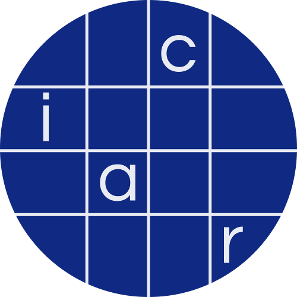

1.3 Stochastic convergence review | Notes for Nonparametric Statistics
Mean integrated squared error - Wikipedia
Kernel density estimation - Wikipedia
Density estimation using deep generative neural networks | PNAS
MIT Introduction to Deep Learning | 6.S191 - YouTube
Principal component analysis - Wikipedia
Introduction to abstract entropy - LessWrong
DGP and Likelihood - YouTube
3. Data Generation Processes - YouTube
1. Overview - YouTube
Frequency (statistics) - Wikipedia
Statistical population - Wikipedia
CourseKata - 3.3 The Data Generating Process
make a simple programming language | tutorial series | video 2 - YouTube
R Manuals :: Writing R Extensions - 7 Generic functions and methods
Let's build GPT: from scratch, in code, spelled out. - YouTube
Generating Parsers in C++ with Maphoon - Part 1 of 2 - Hans de Nivelle - CppCon 2022 - YouTube
ChatGPT Tutorial for Developers - 38 Ways to 10x Your Productivity - YouTube
10 Udemy Courses Every Developer SHOULD Own (NOT just coding) - YouTube
Notes On Deep Learning Theory, Part 1: The Data-Generating Process | by Stepan Ulyanin | Medium
2.4 Six data-generating processes for simulating outcomes
(1) How is the data generating process (DGP) different from the model in regression analysis? - Quora
Data Generating Process Simulation: The opossum package
Profile / Twitter
Weekly Papers
The latest in Machine Learning | Papers With Code
Trending repositories on GitHub today
[2005.14165] Language Models are Few-Shot Learners
[2205.11916] Large Language Models are Zero-Shot Reasoners
[2211.01910] Large Language Models Are Human-Level Prompt Engineers
Just Ask for Generalization | Eric Jang
[2106.01345] Decision Transformer: Reinforcement Learning via Sequence Modeling
(3) Ricardo Albahari (@AlbahariRicardo) / Twitter
Large Language Model: world models or surface statistics?
2302.09419.pdf
WebGPT: Improving the Factual Accuracy of Language Models through Web Browsing
Quickstart tutorial - OpenAI API
OpenAI GPT-4 Predictions and Rumors - YouTube
Chatbot with INFINITE MEMORY using OpenAI & Pinecone - GPT-3, Embeddings, ADA, Vector DB, Semantic - YouTube
DeepMind: The Quest to Develop Artificial General Intelligence - YouTube
When AGI? - YouTube
CS480/680 Lecture 1: Course Introduction - YouTube
What is ChatGPT doing...and why does it work? - YouTube
DeepMind’s latest research at NeurIPS 2022
OpenAI - Wikipedia
BERT (language model) - Wikipedia
Transformer (machine learning model) - Wikipedia
ChatGPT - Wikipedia
Summary of the models
10 Leading Language Models For NLP In 2022
(3) Home / Twitter
Aligning Language Models to Follow Instructions
Redwood Research
An unaligned benchmark. What an unaligned AI might look like… | by Paul Christiano | AI Alignment
Dr Paul Christiano on how OpenAI is developing real solutions to the 'AI alignment problem', and his vision of how humanity will progressively hand over decision-making to AI systems - 80,000 Hours
Eliciting Latent Knowledge - Google Docs
Search | Elicit
Getting Started — 🦜🔗 LangChain 0.0.90
Table of contents | Better without AI
RL with KL penalties is better seen as Bayesian inference - LessWrong
[2201.08239] LaMDA: Language Models for Dialog Applications
[1706.03741] Deep reinforcement learning from human preferences
Prompt injection attacks against GPT-3
https://isaaceditor.com/editor/102f18e4-1234-44cf-8a8f-b6bb71c90ff8
Learning from Human Preferences
1706.03741.pdf
Jay Alammar - Large Language Models for Real-World Applications - A Gentle Intro - YouTube
2302.04761.pdf
1457c0d6bfcb4967418bfb8ac142f64a-Paper.pdf
Generating Datasets with Pretrained Language Models - ACL Anthology
Meta-Learning - YouTube
An Open Agency Architecture for Safe Transformative AI - AI Alignment Forum
2302.06600.pdf
https://twitter.com/jscix/status/1627694681168441344
My class required AI. Here's what I've learned so far.
DvorakDwarf/Infinite-Storage-Glitch: ISG lets you use YouTube as cloud storage for ANY files, not just video
RIFE2 Framework : Full-stack, no-declaration, framework to quickly and effortlessly create web applications with modern Java.
The end of Type 1
TabFS
What makes Gary Marcus angry?
Introduction to Reinforcement Learning with Human Feedback
Somewhat Contra Marcus On AI Scaling - by Scott Alexander
The Scaling Hypothesis · Gwern.net
https://arxiv.org/pdf/2108.07258.pdf
Foundation Models. In August 2021 Stanford announced… | by Grigory Sapunov | Intento
neural networks - Foundation models : Is it a new paradigm for statistics and machine learning? - Cross Validated
fast.ai - fastai A Layered API for Deep Learning
New chat
Collective Intelligence for Deep Learning: A Survey of Recent Developments | 大トãƒ
Google Research, 2022 & beyond: Algorithms for efficient deep learning – Google AI Blog
Stochastic gradient descent - Wikipedia
Pareto front - Wikipedia
Mixture of experts - Wikipedia
Getting Started with Bootstrap Model Validation | University of Virginia Library Research Data Services + Sciences
L9.pdf
ln12.pdf
cppyy: Automatic Python-C++ bindings — cppyy 2.4.0 documentation
Competing Risk Model MLE & MCMC
Backtracking line search - Wikipedia
Random Number Generation in C++ | hacking C++
GraphPad Prism 9 Statistics Guide - Key concept: Survival curves
probability - Intuition for cumulative hazard function (survival analysis) - Cross Validated
Hazard and Survival Functions - [Survival Analysis 5/8] - YouTube
Hazard functions
1.3.6.2. Related Distributions
Overcoming Bias
Gradient surfing: the hidden role of regularization - LessWrong
Jesse Hoogland | Jesse Hoogland
regularization that decreases over time - Google Search
Regularization to Prevent Overfitting | Engineering Education (EngEd) Program | Section
Supervised Learning Algorithms | Engineering Education (EngEd) Program | Section
Ensemble Learning on Bias and Variance | Engineering Education (EngEd) Program | Section
Types of Regularization in Machine Learning | by Aqeel Anwar | Towards Data Science
Regularization (mathematics) - Wikipedia
How Regularization Helps in Data Overfitting | by Saikat Biswas | Towards AI
MLE of Fisher Information
chatgpt: Interface to 'ChatGPT' from R
Anderson–Darling test - Wikipedia
(1) Jerry Liu (@jerryjliu0) / Twitter
😎 App Showcase — GPT Index documentation
(1) Ravi Theja (@ravithejads) / Twitter
jerryjliu/gpt_index: GPT Index is a project consisting of a set of data structures designed to make it easier to use large external knowledge bases with LLMs.
Welcome to GPT Index! — GPT Index documentation
Using with Langchain 🦜🔗 — GPT Index documentation
LLMs — 🦜🔗 LangChain 0.0.76
gpt_index/LangchainDemo.ipynb at main · jerryjliu/gpt_index
hwchase17/langchain: âš¡ Building applications with LLMs through composability âš¡
2301.12579.pdf
Emergence and reasoning in large language models - Jason Wei (Google) - YouTube
Lecture 5B: Computational Objects - YouTube
fka/awesome-chatgpt-prompts · Datasets at Hugging Face
Euler Approximation Method in Classical Physics
alignedai/chatgpt-prompt-evaluator: This shows the results from using a second, filter LLM that analyses prompts before sending them to GPT-Chat
#97 SREEJAN KUMAR - Human Inductive Biases in Machines from Language - YouTube
2108.07258.pdf
facebookresearch/Cupcake: A Rust library for lattice-based additive homomorphic encryption.
download
facebookresearch/fbpcs: FBPCS (Facebook Private Computation Solutions) leverages secure multi-party computation (MPC) to output aggregated data without making unencrypted, readable data available to the other party or any third parties. Facebook provides impression & opportunity data, and the advertiser provides conversion / outcome data.
facebookresearch/ReAgent: A platform for Reasoning systems (Reinforcement Learning, Contextual Bandits, etc.)
A Foundation Models Primer. The latest additions in the universe of… | by Shubhi Asthana | Code Like A Girl
Top 10 Deep Learning Algorithms You Should Know in 2023
Boolean OR as AND-NOT Composition
unit1.pdf
ChatGPT: How to write the perfect prompts - neuroflash
AGI Debate - YouTube
GitHub - Developer-Y/cs-video-courses: List of Computer Science courses with video lectures.
2301.04589.pdf
(2) Soumith Chintala (@soumithchintala) / Twitter
(2) Pieter Abbeel (@pabbeel) / Twitter
https://twitter.com/natfriedman
https://twitter.com/hardmaru
https://twitter.com/StabilityAI
https://twitter.com/nalkalc
https://twitter.com/GoogleAI
ruder.io
https://twitter.com/seb_ruder
https://twitter.com/AnthropicAI
https://twitter.com/ch402
https://twitter.com/notmisha
https://twitter.com/sedielem
https://twitter.com/BaiduResearch
https://twitter.com/zacharylipton
Reaching 80% zero-shot accuracy with OpenCLIP: ViT-G/14 trained on LAION-2B | LAION
https://twitter.com/scale_AI
(2) Prisma (@prisma) / Twitter
Lena (standard prompt) | Kevin Liu
Orchard - What is intelligence?
How I Coded An Entire Website Using ChatGPT - YouTube
ChatGPT for Software Developers - YouTube
ChatGPT will make you better - YouTube
Open Assistant Live Coding (Open-Source ChatGPT Replication) - YouTube
Proportional hazards model - Wikipedia
Copula-based method - Google Search
Copula (probability theory) - Wikipedia
(2) Home / Twitter
Research talk: Numerical weak AI and symbolic strong AI - YouTube
Challenges in Deep Learning (Dr Razvan Pascanu - DeepMind) - YouTube
Logical Neural Networks: Towards Unifying Statistical and Symbolic AI - YouTube
Huge Language Models and Neuro-Symbolic AI - Prof. Yoav Shoham - YouTube
What is Symbolic Artificial Intelligence? Prediction: ChatGPT + Symbolic AI = Mind Blowing - YouTube
8. Neuro Symbolic AI - YouTube
Machine Learning Street Talk - YouTube
How to create superintelligent AI | Demis Hassabis and Lex Fridman - YouTube
“Why is symbolic AI being overshadowed by statistical AI?†by Dr. Bas van der Raadt - YouTube
https://twitter.com/GaryMarcus/followers_you_follow
Doing Maths Symbolically: R as a Computer Algebra System (CAS) – Learning Machines
KHyperLogLog
Laurence Tratt: Distinguishing an Interpreter from a Compiler
Video Classification Using CNN and Transformer: Hybrid Model
LISP — Mecrisp Stellaris Unofficial 1.0 documentation
(5) This is the story of the rise and fall of Lisp at the Jet Propulsion Lab : programming
lisp.pdf
Help keep this book alive | Butterick’s Practical Typography
(5) Revisiting Language Support for Generic Programming: When Genericity Is a Core Design Goal : programming
Revisiting Language Support for Generic Programming: When Genericity Is a Core Design Goal
Jürgen Schmidhuber - Wikipedia
Self-modifying code - Wikipedia
Metaprogramming - Wikipedia
Meta - Wikipedia
1983 - Why AM and Eurisko Appear to Work
RLL-1: A Representation Language Language
(99+) RLL-1: A Representation Language Language. Supplement. Details of RLL-1 | Douglas Lenat - Academia.edu
understanding-machine-learning-theory-algorithms.pdf
https://www.deeplearningbook.org/contents/linear_algebra.html
NN_Book_New.fm
Cyc - Wikipedia
Cyc | The Next Generation of Enterprise AI
Knowledge base - Wikipedia
Ontology (computer science) - Wikipedia
Tacit knowledge - Wikipedia
Semantic reasoner - Wikipedia
CycL - Wikipedia
cc.pdf
[2210.13382] Emergent World Representations: Exploring a Sequence Model Trained on a Synthetic Task
(99+) ChatGPT intimates a tantalizing future; its core LLM is organized on multiple levels; and it has broken the idea of thinking. | Bill Benzon - Academia.edu
How it feels to have your mind hacked by an AI - LessWrong
Neural networks generalize because of this one weird trick - LessWrong
Critique of some recent philosophy of LLMs’ minds - LessWrong
Concrete Reasons for Hope about AI - LessWrong
Staring into the abyss as a core life skill - LessWrong
[Cross-post] Is the Fermi Paradox due to the Flaw of Averages? - LessWrong
Iron deficiencies are very bad and you should treat them - LessWrong
Things that can kill you quickly: What everyone should know about first aid - LessWrong
YouTube
A deep dive into dispatching techniques - Jonathan Müller - Meeting C++ 2022 - YouTube
The Imperatives Must Go! - Victor Ciura - Meeting C++ 2022 - YouTube
Best HFY Reddit Stories: The Demons - YouTube
1706.03762.pdf
Train and run machine learning models faster | Cloud TPU | Google Cloud
2204.02311.pdf
Statistical model validation - Wikipedia
[2204.02311] PaLM: Scaling Language Modeling with Pathways
Evaluating Large Language Models Trained on Code
2205.10893.pdf
CppCon - YouTube
The Weightlifting Iceberg - YouTube
27. EM Algorithm for Latent Variable Models - YouTube
GPT - Explained! - YouTube
Dataslice - YouTube
The road to AGI - DeepMind: The Podcast (S2, Ep5) - YouTube
Optimizing Binary Search - Sergey Slotin - CppCon 2022 - YouTube
GPU Accelerated Computing & Optimizations on Cross-Vendor Graphics Cards with Vulkan & Kompute - YouTube
Back to Basics: Standard Library Containers in Cpp - Rainer Grimm - CppCon 2022 - YouTube
ORF523_S16_Lec7_gh.pdf
Convex Optimization in R
Julia (programming language) - Wikipedia
Hessian and Convexity Relation
Chaitin's constant - Wikipedia
Computably enumerable set - Wikipedia
Oracle machine - Wikipedia
Arithmetical hierarchy - Wikipedia
Algorithmic information theory - Wikipedia
Algorithmically random sequence - Wikipedia
Computable number - Wikipedia
Algorithm - Wikipedia
arXiv:nlin/0112022v3 [nlin.CD] 11 Feb 2002
Printing Unicode in C++
Show C++ code in Discord
WRITE A LEXER AND PARSER | Make a Lisp in C++ (mal) | Step 1a - YouTube
(How to Write a (Lisp) Interpreter (in Python))
gregtcspi1.dvi
On Lisp in 15 minutes. A tour of theoretical foundations of… | by Iwo Herka | Makimo Tech Blog | Medium
Why You Should Learn Lisp In 2022? - YouTube
Rewrite Your Scripts In LISP - with Roswell - YouTube
Recursive Descent Parser Hacking Series - YouTube
COMPILER FUN - YouTube
LLVM - YouTube
Relational algebra - Wikipedia
Function (mathematics) - Wikipedia
Domain of a function - Wikipedia
Functional (mathematics) - Wikipedia
Formal system - Wikipedia
Programming language theory - Wikipedia
Mathematical logic - Wikipedia
Richardson's theorem - Wikipedia
Algebraic closure - Wikipedia
Formal grammar - Wikipedia
Stream (computing) - Wikipedia
Artificial intelligence - Wikipedia
Artificial general intelligence - Wikipedia
06 – Classification, an energy perspective – Backprop and contrastive learning - YouTube
DEEP LEARNING · Deep Learning
01L – Gradient descent and the backpropagation algorithm - YouTube
Refactoring Is Not Just Clickbait - Kevlin Henney - NDC Oslo 2022 - YouTube
Lecture - 1 Introduction - YouTube
Let's try some Bayesian data analysis | R
Understanding Bias-Variance Trade-off from a Bayesian Perspective | by Neeraj Krishna | Dec, 2022 | Towards Data Science
A Comprehensive Introduction to Bayesian Deep Learning - Joris Baan
[2001.10995] The Case for Bayesian Deep Learning
Pattern Recognition and Machine Learning
322f62469c5e3c7dc3e58f5a4d1ea399-Paper.pdf
Maximum likelihood estimation - Wikipedia
Cross entropy - Wikipedia
Conditional independence - Wikipedia
Beginners’ Guide to Calculus with R
MOSAIC Calculus
CRAN - Package symengine
Automatic differentiation in R with Stan Math | A Random Walk
intext:score weibull - Google Search
The Weibull Distribution - ReliaWiki
Regression
R: Weibull Regression
E1206013842.pdf
10 Maximum Likelihood Estimation | CmdStan User’s Guide
Language | Stan Reference Manual
introducing_madness.pdf
Deriv: Symbolic Differentiation
1 CmdStan Installation | CmdStan User’s Guide
Getting started with CmdStanR • cmdstanr
Run Stan's MCMC algorithms — model-method-sample • cmdstanr
stan-book/maximum-likelihood.Rmd at master · malcolmbarrett/stan-book
Custom Print Methods
Automatic differentiation in R with Stan Math | R-bloggers
R: Methods for Non-Generic Functions in Other Packages
13 S3 | Advanced R
OO field guide · Advanced R.
11 S3 | Advanced R Solutions
R Packages (2e) - 18 Vignettes
R Packages (2e) - 20 Website
Repository for distributing (some) stan-dev R packages | r-packages
Stan User’s Guide
Stan - ShinyStan
www.Autodiff.org - Community Portal for Automatic Differentiation
inv: Matrix Inverse (Matlab Style) in pracma: Practical Numerical Math Functions
mxinv: Numerical and Symbolic Matrix Inverse in eguidotti/calculus: High Dimensional Numerical and Symbolic Calculus
CRAN - Package madness
6 Functions | Advanced R
Bayesian Survival Analysis Using the rstanarm R Package
Lecture17.pdf
Bias of an estimator - Wikipedia
hessian.pdf
Fast multivariate empirical cumulative distribution function with connection to kernel density estimation
Algorithms for computing multivariate Empirical distribution function (ECDF)? - Cross Validated
Microsoft Word - d4-DiscreteDist.doc
MEPDF: An R Package for Multivariate Empirical Density Functions
Fast multivariate empirical cumulative distribution function with connection to kernel density estimation - ScienceDirect
Empirical distribution function - Wikipedia
density function - Empirical PDF from Empirical CDF - Cross Validated
R: Kernel Density Estimation
Hessian matrix - Wikipedia
determinant of a matrix with a zero in the diagonal - Google Search
Find Matrix Inverse
Bias–variance tradeoff - Wikipedia
Chapter 6: Bias of an Estimator - YouTube
Variance - Wikipedia
https://www.google.com/search?q=bootstrap+estimate+of+bias&oq=bootstrap+estimate+of+bias&aqs=chrome..69i57j0i512j0i22i30j0i15i22i30j0i390l3.4515j0j7&sourceid=chrome&ie=UTF-8
8.6 The Nonparametric Bootstrap | Introduction to Computational Finance and Financial Econometrics with R
Chapter 7 Estimation of The GWN Model | Introduction to Computational Finance and Financial Econometrics with R
Bias & bootstrap bias correction | basic statistics
Mean squared error - Wikipedia
Page Not Found
When is the bootstrap estimate of bias valid? - Cross Validated
Weibull distribution - Wikipedia
Fisher information matrix - Metacademy
A Tutorial on Fisher Information
Fisher information - Wikipedia
Wilks' theorem - Wikipedia
Likelihood principle - Wikipedia
ggplot2 histogram plot : Quick start guide - R software and data visualization - Easy Guides - Wiki - STHDA
Easily Create Presentation-Ready Display Tables • gt
GGPlot Title, Subtitle and Caption : The Ultimate Guide - Datanovia
Akaike information criterion - Wikipedia
Coerce lists, matrices, and more to data frames — as_tibble • tibble
A Grammar of Data Manipulation • dplyr
Definite matrix - Wikipedia
Positive definite matrix
How to Apply a Function to Each Element of a Matrix in R (2 Examples)
Understanding Positive Definite Matrices
Covariance matrix - Wikipedia
algebraic.mle/mle_numerical.R at master · queelius/algebraic.mle
Gradient descent - Wikipedia
Life Data Analysis Part I - Estimation of Failure Probabilities
maximum likelihood - Basic question about Fisher Information matrix and relationship to Hessian and standard errors - Cross Validated
residual of an mle - Google Search
maximum likelihood - Variance of residuals vs. MLE of the variance of the error term - Cross Validated
AsyVar.pdf
How to Calculate Variance From Standard Error | Sciencing
Standard deviation - Wikipedia
Delta method - Wikipedia
Taylor expansions for the moments of functions of random variables - Wikipedia
Variance-stabilizing transformation - Wikipedia
2210.05050.pdf
[PDF] Statistics 580 Maximum Likelihood Estimation Introduction - Free Download PDF
Exponential distribution - Wikipedia
Exponential Random Variable - an overview | ScienceDirect Topics
Gamma distribution - Wikipedia
C:\pbackup\infer\paper\mle.DVI
https://bourbakiproject.com/sheets/marginal_distributions.html
Building a nice legend with R and ggplot2 – the R Graph Gallery
Exponentially scaling your data in order to zoom in on small differences | Rich Data
R Packages (2e) - 8 Data
Asymptotic Normality of MLE
mle_biased.pdf
Normal distribution - Maximum likelihood estimation
Arbitrarily Accurate Computation with R—The Rmpfr Package
Really large numbers in R | R-bloggers
integrate (2*pi*(2*theta^2/n))^(-1/2)*exp(-1/(2*(2*theta^2/n))*(x-theta)^2)/x from x=0 to infinity where theta>0 and n>0 - Wolfram|Alpha
https://www.google.com/search?q=expected+value+of+reciprocal&sxsrf=ALiCzsZO8pOuVwb6UEm3YTk0p13ZmRUELA%3A1670223328410&ei=4JWNY_3dGJyIptQP7_asmAg&oq=expected+value+of+rec&gs_lcp=Cgxnd3Mtd2l6LXNlcnAQAxgAMgUIABCABDIFCAAQgAQyBggAEBYQHjIGCAAQFhAeMgYIABAWEB4yBggAEBYQHjIGCAAQFhAeMgYIABAWEB4yCAgAEBYQHhAPMgYIABAWEB46CggAEEcQ1gQQsAM6BwgAELADEEM6BwgjEOoCECc6BAgjECc6BAgAEEM6EQguEIAEELEDEIMBEMcBENEDOgsILhCABBCxAxCDAToHCCMQJxCLAzoHCAAQQxCLAzoICAAQkQIQiwM6BQgAEJECOgcIABCxAxBDOgoIABCxAxCDARBDOgsIABCABBCxAxCDAToKCAAQgAQQhwIQFEoECEEYAEoECEYYAFC9J1i8RGDNVGgDcAF4AIABZYgBwwySAQQyMC4xmAEAoAEBsAEKyAEKuAECwAEB&sclient=gws-wiz-serp
Inverse distribution - Wikipedia
Build websites for R packages • pkgdown
Customise your site • pkgdown
2D contours of a 3D surface — geom_contour • ggplot2
Plotting Surfaces with R · R Views
3d surface plots in R
Minimum-variance unbiased estimator - Wikipedia
Covariance: Formula, Definition, Types, and Examples
Normal distribution - Wikipedia
Inverse-gamma distribution - Wikipedia
bias variance normal mle - Google Search
Discrete uniform distribution - Wikipedia
Mean signed deviation - Wikipedia
Comparison of Expected and Observed Fisher Information in Variance Calculations for Parameter Estimates
The Brain as a Universal Learning Machine - LessWrong
1502.05336.pdf
AIXI - LessWrong
OpenAI has created bots that can play Dota 2 as a team — Quartz
Can a Machine Learn to Write for The New Yorker? | The New Yorker
The Unreasonable Effectiveness of Data
ce54be912a7192483c027c22c5fa8ff05e01ec77.pdf
Deep Double Descent
Understanding the generalization of ‘lottery tickets’ in neural networks
Bayesian Deep Learning and a Probabilistic Perspective of Generalization
https://www.gwern.net/docs/www/arxiv.org/98ad3320bdb3cbab2681220ed6b4dc44c455f14d.pdf#google
Direct Fit to Nature: An Evolutionary Perspective on Biological and Artificial Neural Networks
5f3ef8ce619f3af4f40dc1e235b3492d3c2685e3.pdf
2f90212754aa5c9487dcc3552e5d807f87063eca.pdf
Evolution as Backstop for Reinforcement Learning · Gwern.net
Prior probability - Wikipedia
Hans Moravec - Wikipedia
Language models seem to be much better than humans at next-token prediction - LessWrong
After ChatGPT, OpenAI launches open-source tool Point-E that converts text into 3D image | The Financial Express
Revisiting algorithmic progress
The next decades might be wild - LessWrong
Bad at Arithmetic, Promising at Math - LessWrong
Revisiting algorithmic progress - LessWrong
The Plan - 2022 Update - LessWrong
Using GPT-Eliezer against ChatGPT Jailbreaking - LessWrong
Kagi Search
Context Search
The Best of NeurIPS 2022 - YouTube
benbusby/whoogle-search: A self-hosted, ad-free, privacy-respecting metasearch engine
Buy & Sell Bitcoin, Ether | Cryptocurrency Exchange | Bybit
f/awesome-chatgpt-prompts: This repo includes ChatGPT promt curation to use ChatGPT better.
Tobacco Use And Cancer
(150) Discord | #americas-discussion | Blue PoliticsðŸŽ
IEEE Standard for Floating-Point Arithmetic (IEEE 754) - YouTube
5 Best Drills For Explosive Sprint Speed - YouTube
A totally constexpr standard library - Paul Keir, Joel Falcou et al - Meeting C++ 2022 - YouTube
THE SIGHTS OF SPACE: A Voyage to Spectacular Alien Worlds - YouTube
An introduction to multithreading in C++20 - Anthony Williams - Meeting C++ 2022 - YouTube
do4ds01 - YouTube
Transformers, explained: Understand the model behind GPT, BERT, and T5 - YouTube
Single Leg Bounds - YouTube
RTX 3070 | Newegg.com
UserBenchmark: Nvidia GTX 1080-Ti vs RTX 3070
ChatGPT
algebraic.mle/mle_linear_transform.R at master · queelius/algebraic.mle
OpenAI Research
product of ML estimators - Google Search
Logarithmically concave function - Wikipedia
Exponential family - Wikipedia
R: Test matrix for negative semi definiteness
Algebra of random variables - Wikipedia
Ratio distribution - Wikipedia
List of convolutions of probability distributions - Wikipedia
Distribution of the product of two random variables - Wikipedia
Statistical hypothesis testing - Wikipedia
Fisher consistency - Wikipedia
Bootstrapping prediction intervals
Efficiency (statistics) - Wikipedia
Chapter 6 Parameter Transformations | bookdown-demo.knit
Prediction - Wikipedia
Sampling distribution - Wikipedia
Cramér–Rao bound - Wikipedia
Loss function - Wikipedia
Wald test - Wikipedia
Likelihood-ratio test - Wikipedia
Score test - Wikipedia
Confidence interval - Wikipedia
Hadamard derivative - Wikipedia
Uniformly most powerful test - Wikipedia
Score (statistics) - Wikipedia
Scoring algorithm - Wikipedia
workboots: Generate Bootstrap Prediction Intervals from a 'tidymodels' Workflow
Prediction interval - Wikipedia
Theory of descriptions - Wikipedia
TypeScript: Documentation - TypeScript for Functional Programmers
TypeScript Generics - javatpoint
TypeScript Generics Explained - Creating Reusable Components with TS Generics Examples - YouTube
Branchless programming. Does it really matter? - DEV Community
Branchless Programming: Why "If" is Sloowww... and what we can do about it! - YouTube
Branchless Programming in C++ - Fedor Pikus - CppCon 2021 - YouTube
Typescripten: Generating type-safe JavaScript bindings for emscripten - Sebastian Theophil CppNow 22 - YouTube
Creating a Zelda style game in Python [with some Dark Souls elements] - YouTube
Write your own compiler in 24 hours by Phil Trelford - YouTube
Keynote: On the Aesthetics of Code - Sy Brand - CPPP 2021 - YouTube
ocornut/imgui: Dear ImGui: Bloat-free Graphical User interface for C++ with minimal dependencies
clang-tidy in Visual Studio Code - YouTube
Riemann integral vs. Lebesgue integral - YouTube
Complex Analysis - Part 2 - Complex Differentiability - YouTube
"How to Think about Parallel Programming: Not!" - Guy L. Steele Jr. (Strange Loop 2010) - YouTube
How to Become Accomplished • Chad Fowler • GOTO 2013 - YouTube
Invited Talk - Guy Steele - YouTube
Four Solutions to a Trivial Problem - Guy Steele Jr. - YouTube
programming-resources/ideas.md at master · the-programmers-hangout/programming-resources
Exceptions the Other Way Round - Sean Parent - CppNow 2022 - YouTube
CppCast Episode 310: STLab with Sean Parent and Dave Abrahams - YouTube
Parent & Wolczko: Fragmentation of machine architectures - YouTube
Discovering a User-Facing Concept - Christopher Di Bella - CppCon 2021 - YouTube
Implementing C++ Modules: Lessons Learned, Lessons Abandoned - Cameron DaCamara & Gabriel Dos Reis - YouTube
Deducing this Patterns - Ben Deane - CppCon 2021 - YouTube
Keynote: A Future of Value Semantics and Generic Programming Part 1 - Dave Abrahams - CppNow 2022 - YouTube
Combining Co-Routines and Functions into a Job System - Helmut Hlavacs - CppCon 2021 - YouTube
Extending and Simplifying C++: Thoughts on Pattern Matching using `is` and `as` - Herb Sutter - YouTube
Implementing static_vector: How Hard Could it Be? - David Stone - CppCon 2021 - YouTube
History
Fusen Alternatives and Reviews (Apr 2021)
Docstring Alternatives and Reviews (May 2022)
Chapter 15 Compiled code | R Packages
Dr. Dobb's Journal Interview with Alex Stepanov
25 Rewriting R code in C++ | Advanced R
The Business Value of a Good API - Bob Steagall - CppCon 2019 - YouTube
Ten awesome R Markdown tricks. R Markdown is more versatile than you… | by Keith McNulty | Towards Data Science
Chapter 12 Books | R Markdown: The Definitive Guide
Ring (mathematics) - Wikipedia
Boolean algebra (structure) - Wikipedia
Sponge function - Wikipedia
The Comprehensive R Archive Network
Chapter 11 Data visualization principles | Introduction to Data Science
Statistical Inference via Data Science
7 Efficient optimisation | Efficient R programming
Introduction | Advanced R
Welcome | Data Science at the Command Line, 2e
Data Visualization
Failure rate - Wikipedia
Survival function - Wikipedia
Cramér–von Mises criterion - Wikipedia
LaTeX/Presentations - Wikibooks, open books for an open world
Chapter 8 reveal.js Presentations | R Markdown: The Definitive Guide
short-guide-typesetting.pdf
bootstrap1.pdf
Exponential distribution MLE • algebraic.mle
Side-by-Side plots with ggplot2 | R-bloggers
series_system_estimation_masked_data/exp_series.R at master · queelius/series_system_estimation_masked_data
Series system with exponentially distributed component lifetimes • series.system.estimation.masked.data
queelius/algebraic.mle: Algebraic maximum likelihood estimators
statbook
Kaplan–Meier estimator - Wikipedia
Reliability engineering - Wikipedia
Fundamentals of Data Visualization
Chapter 2 The whole game | R Packages
A ggplot2 Tutorial for Beautiful Plotting in R - Cédric Scherer
FAQ | The Programmers Hangout
mxgmn/MarkovJunior: Probabilistic PL based on pattern matching and constraint propagation, 148 examples
MultivariateSurvival.pdf
A Timeline of Programming languages | IEEE Computer Society
Steve Brunton - YouTube
Neyman–Pearson lemma - Wikipedia
Kullback–Leibler divergence - Wikipedia
Errors and residuals - Wikipedia
Bias (statistics) - Wikipedia
Cross-validation (statistics) - Wikipedia
All models are wrong - Wikipedia
Relative likelihood - Wikipedia
Statistical model - Wikipedia
M-estimator - Wikipedia
Principle of maximum entropy - Wikipedia
Maximum a posteriori estimation - Wikipedia
Likelihood ratio test
Goodness of fit - Wikipedia
Survival analysis - Wikipedia
Writing R extensions
An Introduction to Data Analysis
Modern Data Science with R
Modern Statistics with R
Welcome | R for Data Science
R Programming for Data Science
A Minimal rTorch Book
Hands-On Machine Learning with R
Quickstart | mlr3 book
The caret Package
Tidy Modeling with R
data.table in R - The Complete Beginners Guide - Machine Learning Plus
Welcome | ggplot2
Rcpp for everyone
The Grammar of Experimental Designs
The Tidyverse Cookbook
Welcome! | R Packages
R Markdown: The Definitive Guide
R Graphics Cookbook, 2nd edition
YaRrr! The Pirate’s Guide to R
Welcome · Advanced R.
Best Coding Practices for R
Book of R | No Starch Press
Efficient R programming
Functional Programming
Modern R with the tidyverse
The R Language
What They Forgot to Teach You About R
29 Statistics | Big Book of R
An Introduction to Statistical Learning
Bayes Rules! An Introduction to Applied Bayesian Modeling
Probability, Statistics, and Data
Welcome to IMS | Introduction to Modern Statistics
Chapter 1 Introduction | ISLR tidymodels Labs
Home | LOST
Model Estimation by Example
Statistical inference for data… by Brian Caffo [PDF/iPad/Kindle]
Statistical Rethinking | Richard McElreath
Statistical rethinking with brms, ggplot2, and the tidyverse: Second edition
R: Goodness-of-Fit Test
Create a Package or Research Compendium Structure • rcompendium
yixuan/prettydoc: Creating Pretty HTML From R Markdown
st611lect9.pdf
Authoring Books and Technical Documents with R Markdown • bookdown
Get started with cpp11
Tools for Spell Checking in R • spelling
jasdumas/gramr: RStudio Addin, function, & shiny app for the write-good linter
goodpractice | Advice on R Package Building
r-lib/lintr: Static Code Analysis for R
Get started with cpp11 • cpp11
Introduction to pkgdown • pkgdown
Newton's method - Wikipedia
series_system_estimation_masked_data/exp_dist.R at master · queelius/series_system_estimation_masked_data
CRAN - Package roxygen2
An API Generator for R • plumber
Tidymodels
R Markdown Gallery
2.7 Other language engines | R Markdown: The Definitive Guide
Interface to Python • reticulate
Stan - Stan
Functional Programming Tools • purrr
Simple, Consistent Wrappers for Common String Operations • stringr
Tidy data
tidyverse/dplyr: dplyr: A grammar of data manipulation
Tidyverse
Create Elegant Data Visualisations Using the Grammar of Graphics • ggplot2
Writing R packages in Rstudio
rpackage_instructions.pdf
middleearth - Proxmox Console
Rtools42 for Windows
r package with github documentation - Google Search
Chapter 18 Git and GitHub | R Packages
r-lib/pkgdown: Generate static html documentation for an R package
Building a website with pkgdown: a short guide | R-bloggers
Simulated annealing - Wikipedia
Interval arithmetic - Wikipedia
Interval contractor - Wikipedia
Set estimation - Wikipedia
Branch and cut - Wikipedia
Millennium Prize Problems - Wikipedia
P versus NP problem - Wikipedia
Boolean satisfiability problem - Wikipedia
Computational complexity of matrix multiplication - Wikipedia
Strassen algorithm - Wikipedia
Code - Wikipedia
pnp.pdf
Lecture 22: Gradient Descent: Downhill to a Minimum | Video Lectures | Matrix Methods in Data Analysis, Signal Processing, and Machine Learning | Mathematics | MIT OpenCourseWare
WebAssembly
Build a real-time Twitter clone in 15 minutes with LiveView and Phoenix 1.5 - YouTube
Chapter 8 Exponentially distributed component lifetimes | Math thesis
Library Genesis
dblp: Zhibin Tan
Documentation | Node.js
TypeScript: The starting point for learning TypeScript
t4t5/Tweether: A decentralized, uncensorable Twitter-clone built on Ethereum. ♦︎
Tips and tricks for working with images and figures in R Markdown documents | Technical Tidbits From Spatial Analysis & Data Science
WebAssembly - Wikipedia
JavaScript - Wikipedia
Phoenix Framework
Emscripten - Wikipedia
golden.section.search: Golden section search in deconstructSigs: Identifies Signatures Present in a Tumor Sample
golden.section.search function - RDocumentation
R: Golden Section Search
Golden-section search - Wikipedia
Quasi-Newton method - Wikipedia
Conjugate gradient method - Wikipedia
Norm (mathematics) - Wikipedia
Wolfe conditions - Wikipedia
Hyperparameter optimization - Wikipedia
Secant method - Wikipedia
Nelder–Mead method - Wikipedia
Nonlinear conjugate gradient method - Wikipedia
Gauss–Newton algorithm - Wikipedia
Barrier function - Wikipedia
Penalty method - Wikipedia
Back to Basics: Designing Classes (part 2 of 2) - Klaus Iglberger - CppCon 2021 - YouTube
Lecture 33: Left and right inverses; pseudoinverse
Multinomial distribution - Wikipedia
Joint probability distribution - Wikipedia
chapt4-1.pdf
1602.04915.pdf
numDeriv.pdf
structure function series system - Google Search
Leibniz integral rule - Wikipedia
S3 · Advanced R.
Categorical distribution - Wikipedia
Indicator functions
Estimator - Wikipedia
Sampling error - Wikipedia
Chi-squared distribution - Wikipedia
Statistical significance - Wikipedia
anova.gnm: Analysis of Deviance for Generalized Nonlinear Models in gnm: Generalized Nonlinear Models
Reproducibility - Wikipedia
R Programming Tidyverse: readr package to import data (csv, tab-separated, fixed-width) (tidy-02) - YouTube
Introduction to readr • readr
An Introduction to the printr Package
Likelihood function - Wikipedia
Model selection - Wikipedia
Statistical model specification - Wikipedia
Interval estimation - Wikipedia
Coverage probability - Wikipedia
Chapter 4 Package structure and state | R Packages
How to Make Beautiful Tables in R
Maximum Likelihood Estimation | MLE In R
R: Maximum Likelihood Estimation
MLEexample.pdf
Inverse-variance weighting - Wikipedia
Gradient - Wikipedia
note2.pdf
Left inverse and right matrix inverses - YouTube
Computing the pseudo inverse of a matrix in R - Stack Overflow
Writing R Extensions
Test Coverage for Packages • covr
tidymodels
Construct Modeling Packages • hardhat
Stan - Documentation
klik: Kernel log likelihood in MKLE: Maximum kernel likelihood estimation.
Dealing with S3 methods in R with a simple example | R-bloggers
Abstraction (computer science) - Wikipedia
Introduction to dplyr
Ad hoc polymorphism - Wikipedia
Estimation of covariance matrices - Wikipedia
ReliabilityTheory package - RDocumentation
SFAPS: an R package for structure/function analysis of protein sequences based on informational spectrum method | Read by QxMD
Multivariate normal distribution - hypothesis testing MLE - Cross Validated
A Quick Benchmark of Hashtable Implementations in R
structure function series parallel - Google Search
Chapter 3 Structure Analysis
the multivariate bias-variance decomposition |
Accuracy and precision - Wikipedia
mle.tools.pdf
Writing an R package from scratch – Hilary Parker
Chapter 20 Releasing a package | R Packages
WTF is the Bias-Variance Tradeoff? (Infographic)
Minimal Path Set - an overview | ScienceDirect Topics
Typed Scheme: Scheme with Static Types
SerieslParallelSTART.pdf
(a) Series structure system; (b) Parallel structure system. | Download Scientific Diagram
RBDs and Analytical System Reliability - ReliaWiki
Observable variable - Wikipedia
Latent variable - Wikipedia
Constraints versus Priors
Conjugate prior - Wikipedia
Chapter 4 Derivation of distribution functions | Covariance matrix estimation from masked data
Wolfram User Portal
Random effects model - Wikipedia
edX Courses | View all online courses on edX.org
Readings | | Foundations of Data Analysis - Part 2 | edX
R Tutorial Videos | | Foundations of Data Analysis - Part 2 | edX
Chapter_11.pdf
Fixed effects model - Wikipedia
5 Top Python IDEs For Data Science - What is an IDE in Python? - DataCamp
Home — Spyder IDE
Getting Started with Anaconda Individual Edition
How to Calculate a Two Way ANOVA (factorial analysis) - YouTube
One-Way ANOVA vs. Two-Way ANOVA - YouTube
Statistical unit - Wikipedia
Longitudinal study - Wikipedia
Masked Failure Data | Request PDF
IEEE Xplore Full-Text PDF:
"masked failure data" - Google Search
Analysis of reliability using masked system life data | Emerald Insight
Chapter 3 Statistical model | Math thesis
2.4 Figures | bookdown: Authoring Books and Technical Documents with R Markdown
Some recent developments on failure processes with masked failure data - Kent Academic Repository
Masked Failure Data - Yashchin - - Major Reference Works - Wiley Online Library
Ch. 19. Analysis of masked failure data under competing risks - ScienceDirect
Estimation of component reliability in repairable series systems with masked cause of failure by means of latent variables | DeepAI
R markdown: can I insert a pdf to the r markdown file as an image? - Stack Overflow
latex - How to make a PDF using bookdown including SVG images - Stack Overflow
145 - Get Used to Being Unhappy - YouTube
Andrew O. Lindstrum, Jr. Memorial Scholarship - Southern Illinois University Edwardsville Scholarships
Bill & Jean Luan STEAM Scholarship - College of Arts and Sciences - Southern Illinois University Edwardsville Scholarships
Outstanding Mathematics and Statistics Student Award - Southern Illinois University Edwardsville Scholarships
Donal G. Myer Award for the Outstanding Student in Sciences and Mathematics - Southern Illinois University Edwardsville Scholarships
Edna and Frithiof Carlson Endowed Award for Creative Expression in a CAS Discipline - Southern Illinois University Edwardsville Scholarships
Mikkilineni Family Scholarship for the College of Arts & Sciences - Southern Illinois University Edwardsville Scholarships
Evelyn Bowles Public Service Scholarship - Southern Illinois University Edwardsville Scholarships
Elevate East St. Louis Scholarship - Southern Illinois University Edwardsville Scholarships
Ambassador Hussein Moussawi International Travel Scholarship - Southern Illinois University Edwardsville Scholarships
JSON Config Structure - Caddy Documentation
Andres' Blog
Installing Nginx Server ·
blog.metafunctor.com
Caddyfile Quick-start — Caddy Documentation
API — Caddy Documentation
TryHackMe | Zeno Room Walkthrough - YouTube
Automatic HTTPS — Caddy Documentation
Getting Started - Let's Encrypt
Certbot Instructions | Certbot
LabGopher :: Great server deals on eBay
janeczku/calibre-web: Web app for browsing, reading and downloading eBooks stored in a Calibre database
(1) Caddy vs Nginx: How Do These Web Servers / Reverse Proxies Compare? : selfhosted
lucaslorentz/caddy-docker-proxy: Caddy as a reverse proxy for Docker
Shapecatcher: Draw the Unicode character you want!
unimath-example.pdf
CodeStar - AWS Developer Tools
Looking for early testers of encrypted search proxy for Elasticsearch : elasticsearch
What is Encrypted Search? - IronCore Labs
ide - AWS Cloud9
What Are Shortcodes in WordPress? Explained for Beginners
Shortcodes | Hugo
Content Sections | Hugo
queelius/wowchemy-widget-problemset
Introduction to Hugo Templating | Hugo
Grid system · Bootstrap v4.5
Content Types | Hugo
Hugo sections tutorial: How to customise section pages
Create a page | Wowchemy
Wowchemy website builder for Hugo themes
wowchemy-widget-problemset/layouts/partials/widgets at main · queelius/wowchemy-widget-problemset
Problem-sets | blog.metafunctor.com
15.5 Visualization with D3 | R Markdown Cookbook
Watch — InterReflections
Data Visualization with D3.js - Full Tutorial Course - YouTube
RStudio v1.4 Preview: Visual Markdown Editing | RStudio Blog
12.2 Project structure | R Markdown: The Definitive Guide
Pandoc - Pandoc User’s Guide
Formats
12.3 Markdown extensions | R Markdown: The Definitive Guide
Markdown Cheat Sheet | Markdown Guide
Extended Syntax | Markdown Guide
Basic Syntax | Markdown Guide
2.2 Markdown extensions by bookdown | bookdown: Authoring Books and Technical Documents with R Markdown
Home | Bookdown
Objects - Objects to manipulate options, patterns and hooks - Yihui Xie | 谢益辉
queelius/prob.4.2.comp.stats
GitHub - jennybc/foofactors: Make Factors Less Aggravating
Tools for Working with Categorical Variables (Factors) • forcats
Analyses as Packages
queelius/series_system_estimation_from_masked_system_failure_time_samples
queelius/math_thesis
queelius/series_system_estimation_from_masked_system_failure_time_samples_code
Basic Management |
TrueNAS native vs TrueNAS under Proxmox | ServeTheHome Forums
How to run TrueNAS on Proxmox? - YouTube
TrueNAS Scale's KVM instead of Proxmox - Seeking Hands-on Experiences | TrueNAS Community
Download TrueNAS SCALE
TrueNAS SCALE: The voyage begins with version 20.10 | TrueNAS Community
TrueNAS SCALE Beta vs TrueNAS CORE Performance Comparison - YouTube
www.servethehome.com
Cluster Manager - Proxmox VE
The Homelab Show - YouTube
The Homelab Show Episode 28:Own Your Domain - YouTube
$100 Linode Credit | Linode
The Homelab Show – Catch Up on the Vlog and Podcast
The Homelab Show Episode 29:Bastion Server - YouTube
The Homelab Show Episode 27: TrueNAS Scale - YouTube
The Homelab Show Episode 25: Using Git - YouTube
middleearth - Proxmox Virtual Environment
The Homelab Show Episode 23: Syncthing - YouTube
HOW-TO: Setup the OpenVPN server on a TP-Link AX1500 (Archer AX10) - YouTube
Cloud Compute, Storage, and Transfer Estimator - Linode
Set up a Web Server and Host a Website on Linode | Linode
Getting Started with Linode | Linode
How to Secure Your Server | Linode
How much RAM do I need exactly? | Linode Questions
How to Choose a Linode Plan | Linode
12 Best Cheap Web Hosting ($0.99 to $2.99) - 2021 Reviews
Shared Hosting vs VPS: Which One Should You Choose?
How to Buy a Domain Name: A Simple Step-by-Step Tutorial
Hosting Platform - Go Online With Hostinger For Only $1.39 Now
How to Make a Website | A Beginner's Guide (2021)
Route 53 Management Console
how to get latex documents onto the web - Google Search
Putting TeX/LaTeX on the Web | Computing
A Brief Guide to LaTeX{} Tools for Web Publishing
DocOnce Tutorial: Document Once, Include Anywhere — DocOnce Tutorial: Document Once, Include Anywhere
Learn Latex, markdown and html with doconce - if curious: then learn
Converting From LaTeX to Other Formats « PhilTeX
Pollen: the book is a program
Beautiful Racket by Matthew Butterick
Dendron: App Reviews, Features, Pricing & Download | AlternativeTo
Expression (computer science) - Wikipedia
Rewriting - Wikipedia
Subroutine - Wikipedia
Method (computer programming) - Wikipedia
Access to Care | Medicaid
My Healthcare
Illinois.gov - IL Application for Benefits Eligibility (ABE) Account Information
Benefit Finder | Benefits.gov
Graduate Assistance in Areas of National Need | Benefits.gov
Student Temporary Employment Program (STEP) | Benefits.gov
Student Career Experience Program (SCEP) | Benefits.gov
Earned Income Tax Credit (EITC) | Benefits.gov
Lifetime Learning Credit (LLC) | Benefits.gov
USDA Service Center Agencies Online Services
How to Apply for Weatherization Assistance | Department of Energy
Low Income Home Energy Assistance Program (LIHEAP) | Benefits.gov
Energy Efficient Mortgage Insurance | Benefits.gov
solution_book.pdf
exer.pdf
r-scripts - STK4051 - VÃ¥r 2019 - Universitetet i Oslo
Geof Givens
Computational Statistics, by G. H. Givens and J. A. Hoeting
Mixture distribution - Wikipedia
lecture15_Sums_of_RVs.pdf
One Long Run
Metropolis–Hastings algorithm - Wikipedia
Rcpp: Seamless R and C++ Integration
(5) MAKE YOUR OWN LANGUAGE | Make a Lisp in C++ (mal) | Step 0 - YouTube
Common Lisp Tutorial 6a: Macros Part 1 - YouTube
ADD VECTOR AND HASH MAP TYPES | Make a Lisp in C++ (mal) | Step 1b - YouTube
Ruby Redo Statement | C++ | Compiler Hacking - YouTube
(5) Just-in-Time Compilation - JF Bastien - CppCon 2020 - YouTube
Compiler Research (4 Mar 2021) - Cling’s CUDA Backend: Interactive GPU development with CUDA C++ - YouTube
MAKE YOUR OWN LANGUAGE | Make a Lisp in C++ (mal) | Step 0 - YouTube
C++ Core Guidelines: A Short Detour to Contracts in C++20 - ModernesCpp.com
Tag dispatch versus concept overloading – Arthur O'Dwyer – Stuff mostly about C++
good_concepts.pdf
CPP / C++ - Template Metaprogramming - Generic Programming
Decent concepts | Andrzej's C++ blog
Boolean algebra - Wikipedia
Algebraic structure - Wikipedia
Andrzej's C++ blog | Guidelines and thoughts about C++
List of order theory topics - Wikipedia
Installation Instructions | Bodhi Linux
De Morgan algebra - Wikipedia
Distributive lattice - Wikipedia
Distributivity (order theory) - Wikipedia
Lattice (order) - Wikipedia
Power set - Wikipedia
Editing aperture/README.md at main · queelius/aperture
On vector -- Howard Hinnant : Standard C++
The CUDA C++ Standard Library by Bryce Adelstein Lelbach - YouTube
(5) Carlos Rodrigues - Corecursion, Codata, and Just a Little Combinatorial Game Theory - λC 2017 - YouTube
(Co)data
Add a new physical hard drive to Proxmox VE 4x 5x – HostFav Blog
Types and Functions — Idris 1.3.3 documentation
Access a remote desktop | Ubuntu
Generative recursion - Google Search
Installation of VNC server on Ubuntu | Hacker Noon
The C++20 Synchronization Library - Bryce Adelstein Lelbach - CppCon 2019 - YouTube
(5) Clad -- Automatic Differentiation for C++ Using Clang (Vassil Vassilev, Princeton University) - YouTube
Empty string - Wikipedia
Corecursion - Wikipedia
Programming model - Wikipedia
Data structure - Wikipedia
Lazy evaluation - Wikipedia
Fold (higher-order function) - Wikipedia
Coinduction - Wikipedia
Reduction Operator - Wikipedia
Map (higher-order function) - Wikipedia
Operations on Objects
cisco/ChezScheme: Chez Scheme
The Scheme Programming Language, 4th Edition
Chez Scheme Version 9 User's Guide
(3) Strange Loop Language Panel - Hickey, Sussman, Wirfs-Brock, Pamer, Alexandrescu, Ashkenas (2011) - YouTube
"Rhapsody in Zero Knowledge: Proving Without Revealing" by Tony Arcieri - YouTube
Pairs (Guile Reference Manual)
Lists (Guile Reference Manual)
How to: Colony - Matthew Bentley - [CppNow 2021] - YouTube
When Should You Give Two Things the Same Name? - Arthur O'Dwyer - [CppNow 2021] - YouTube
Closure (computer programming) - Wikipedia
Free variables and bound variables - Wikipedia
Lambda lifting - Wikipedia
(seventh RacketCon): Keynote -- Dan Friedman & Will Byrd -- The Reasoned Racketeers - YouTube
William Byrd on "The Most Beautiful Program Ever Written" [PWL NYC] - YouTube
Nada Amin - Collapsing Towers of Interpreters - Code Mesh 2017 - YouTube
Nada Amin / William Byrd - From Greek to Clojure! - YouTube
PWLConf 2017 | Kenichi Asai
https://gist.githubusercontent.com/ofan/721464/raw/e57ac330a90922d994d992c1160c711eccdde3ef/lisp.cpp
Overview of AIMA Code
freeglut download | SourceForge.net
A list of open source C++ libraries - cppreference.com
Botan: Crypto and TLS for Modern C++ — Botan
AngelScript - AngelCode.com
abseil / `absl::Hash`
C-plus-plus-library-bit-fields/Bitfield.pdf at master · wkaras/C-plus-plus-library-bit-fields
Overview — CAF 0.18.3 documentation
Loki | Main / HomePage
AmokHuginnsson/yaal: Yet another abstraction layer - a general purpose C++ library.
cpp-io2d/P0267_RefImpl: Reference Implementations of P0267, the proposed 2D graphics API for ISO C++
A Proposal to Add 2D Graphics Rendering and Display to C++
alandefreitas/matplotplusplus: Matplot++: A C++ Graphics Library for Data Visualization 📊🗾
anholt/libepoxy: Epoxy is a library for handling OpenGL function pointer management for you
halide/Halide: a language for fast, portable data-parallel computation
ALGLIB - C++/C# numerical analysis library
Structure and Interpretation of Classical Mechanics - Wikipedia
Backward chaining - Wikipedia
Rule of inference - Wikipedia
R++: Rules in C++
Logic programming - Wikipedia
buildit.pdf
BuildIt: A Type-Based Multi-stage Programming Framework for Code Generation in C++ | IEEE Conference Publication | IEEE Xplore
BuildIt: A Type-based Multi-Stage Programming Framework for Code Generation in C++ - YouTube
GraphIt- A High-Performance Domain Specific Language for Graph Analytics
ArrayFire: Overview
Limeoats/BigNumber: C++ class for creating and computing arbitrary-length integers
hosseinmoein/Matrix: C++ Matrix -- High performance and accurate (e.g. edge cases) matrix math library with expression template arithmetic operators
Home | stats++
kthohr/stats: A C++ header-only library of statistical distribution functions.
arma.sourceforge.net
Eigen
ceres-solver/ceres-solver: A large scale non-linear optimization library
https://math.nist.gov/~RPozo/ngraph/ngraph_index.html
CNL: User Manual
PyTorch
Shogun Machine Learning - Home
mlpack - Home
CS-84-47.pdf
MPprogramming.com
Logica tutorial.ipynb - Colaboratory
Curry–Howard correspondence - Wikipedia
Can Logic Programming Execute as Fast as Imperative Programming?
Scala's type checker happens to contain Prolog : scala
2016 - On The Shoulders Of Giants - Damian Conway - YouTube
Algebraic data type - Wikipedia
Computational logic - Wikipedia
Computation - Wikipedia
Automated theorem proving - Wikipedia
Resolution (logic) - Wikipedia
tensorflow/tensorflow: An Open Source Machine Learning Framework for Everyone
https://state-diagram.com
Boost.Hana: User Manual
Chapter 33. Boost.Proto - 1.76.0
Expression templates - Wikipedia
https://www.boost.org/doc/libs/1_76_0/doc/html/boost_pfr.html
racket - The `apply` function | racket Tutorial
15.1 eval
16.2.1 Syntax Objects
HemannMuKanren2013.pdf
Introduction | Discord.js Guide
Huginn
Twitter Developers
Build A Twitter Bot With Python That Gets You Followers - YouTube
Overview | Docs | Twitter Developer Platform
How to Write a Twitter Bot in 5 Minutes - Digital Inspiration
How to Create Twitter Bots - YouTube
Should You Use A Twitter Bot To Increase Your Followers? | SEO Services New York
Twitter bot - Wikipedia
Sock puppet account - Wikipedia
GitHub - bodil/im-rs: Assorted immutable collection datatypes for Rust
Collected Papers of Alexander A. Stepanov
In October of 1976 I observed that a certain algorithm - parallel reduction – was associated with monoids: collections of elements with an associative operation
Elements of Programming - YouTube
Efficient Programming with Components: Introduction Part 1 - YouTube
Computer Science - Brian Kernighan on successful language design - YouTube
From Rails to Elm and Haskell - Richard Feldman - YouTube
essay.pdf
Fundamentals of Generic Programming
oopsla06.pdf
n3351.pdf
Privacy error
Kenneth E. Iverson - A.M. Turing Award Laureate
Programming pearls: Writing correct programs
Exception-Safety in Generic Components | Selected Papers from the International Seminar on Generic Programming
Generic Programming
recursive.dvi
The Roots of Lisp
C++ Core Guidelines
Marxism - Wikipedia
Object (computer science) - Wikipedia
sha1 - Can a SHA-1 hash be all-zeroes? - Stack Overflow
Marxist philosophy - Wikipedia
Argument-dependent lookup - cppreference.com
First-class citizen - Wikipedia
md5 - Why aren't hash values for "nothing" (empty) defined as all zeros? - Cryptography Stack Exchange
Mode of production - Wikipedia
Capitalist mode of production (Marxist theory) - Wikipedia
Opaque data type - Wikipedia
Use value - Wikipedia
Means of production - Wikipedia
Production for use - Wikipedia
Object-oriented programming - Wikipedia
Lecture 1: Introduction to Power and Politics in Today’s World - YouTube
std variant and the power of pattern matching - Nikolai Wuttke - Meeting C++ 2018 - YouTube
CppCon 2019: Bowie Owens “Expression Templates for Efficient, Generic Finance Code" - YouTube
Back to Basics: Lambdas from Scratch - Arthur O'Dwyer - CppCon 2019 - YouTube
C++Now 2017: Zach Laine “Expression Templates Everywhere with C++14 and Yap" - YouTube
How to Implement Your First Compiler Feature:The Story of Concepts in Clang - Saar Raz - CppCon 2019 - YouTube
Back to Basics: Function and Class Templates - Dan Saks - CppCon 2019 - YouTube
CppCon 2016: Arthur O'Dwyer “Template Normal Programming (part 1 of 2)†- YouTube
CppCon 2015: Joel Falcou PART 1 “Expression Templates - Past, Present, Future†- YouTube
C++ Template Metaprogramming - YouTube
CppCon 2017: Vinnie Falco “Make Classes Great Again! (Using Concepts for Customization Points)†- YouTube
CppCon 2015: Fedor Pikus “C++ Metaprogramming: Journey from simple to insanity and back" - YouTube
CppCon 2014: Walter E. Brown "Modern Template Metaprogramming: A Compendium, Part II" - YouTube
nbconvert: Convert Notebooks to other formats — nbconvert 6.0.8.dev0 documentation
Paul Romer
R Package Integration with Modern Reusable C++ Code Using Rcpp - Part 2 · R Views
Introduction to roxygen2
Cleaner Generic Functions with RCPP_RETURN Macros
Armadillo: C++ library for linear algebra & scientific computing
Admission Requirements
Southern Illinois University Edwardsville
Ljung–Box test - Wikipedia
Cochrane–Orcutt estimation - Wikipedia
Augmented Dickey–Fuller test - Wikipedia
Autocorrelation - Wikipedia
Dickey–Fuller test - Wikipedia
R - Cochran's Q test - YouTube
8.1 Stationarity and differencing | Forecasting: Principles and Practice (2nd ed)
Unit root - Wikipedia
Unit root test - Wikipedia
Tutorial: Simulating and Estimating ARMA models
8.4 Moving average models | Forecasting: Principles and Practice (2nd ed)
Lesson 2: MA Models, Partial Autocorrelation, Notational Conventions
Autoregressive Integrated Moving Average ARIMA(p, d, q) Models for Time Series Analysis | QuantStart
TS_Notes.dvi
8.9 Seasonal ARIMA models | Forecasting: Principles and Practice (2nd ed)
forecasting - How do the forecast intervals from an AR model behave when the time series is inherently stationary? - Cross Validated
3.5 Prediction intervals | Forecasting: Principles and Practice (2nd ed)
Autoregressive integrated moving average - Wikipedia
Constants and ARIMA models in R | Rob J Hyndman
5.1 The linear model | Forecasting: Principles and Practice (2nd ed)
Portmanteau test - Wikipedia
How to remove cyclical trend in residuals for time series regression? - Cross Validated
Processing time series data into stationarity: Unequal Variance Time Series | by Kenneth Foo | Medium
Hottest 'simulations' Answers - Quantitative Finance Stack Exchange
Durbin–Watson statistic - Wikipedia
forecast with object, xreg, and arima xreg model fails · Issue #682 · robjhyndman/forecast · GitHub
r - Trouble in fitting data to a curve (NLS) - Cross Validated
How to choose initial values for nonlinear least squares fit - Cross Validated
Bookmarks
9.1 Estimation | Forecasting: Principles and Practice (2nd ed)
Appendix: Using R | Forecasting: Principles and Practice (2nd ed)
8.7 ARIMA modelling in R | Forecasting: Principles and Practice (2nd ed)
2.2 Time plots | Forecasting: Principles and Practice (2nd ed)
Time Series Intro part 3: transformations - YouTube
3 4 TS ETS models - YouTube
Linear least squares - Wikipedia
3 2 Holt's linear trend method - YouTube
5 1 Introduction to Dynamic Regression - YouTube
8.3 Autoregressive models | Forecasting: Principles and Practice (2nd ed)
3.3 Residual diagnostics | Forecasting: Principles and Practice (2nd ed)
An R Markdown Template for Academic Manuscripts | Steven V. Miller
Odds ratio - Wikipedia
Time Series Introduction: part 1 - YouTube
Weekly Reading | Coursera
Build Basic Generative Adversarial Networks (GANs) - Home | Coursera
Probabilistic Deep Learning with TensorFlow 2 - Home | Coursera
Practical Application of diff and patch | Coursera
Cryptography I - Home | Coursera
Programming Languages, Part B - Home | Coursera
Algorithms, Part II - Home | Coursera
Programming Languages, Part A - Home | Coursera
Programming Languages, Part C - Introduction, Course-Wide Information, and Software Installation (Start Here) | Coursera
Programming Fundamentals - Home | Coursera
Cybersecurity and the Internet of Things - Home | Coursera
Getting Started with Data Visualization in R - Home | Coursera
Introduction to Probability and Data with R - Home | Coursera
Advanced R Programming - Home | Coursera
Data Visualization in R with ggplot2 - Home | Coursera
R Programming - Home | Coursera
Probability and Statistics: To p or not to p? - Home | Coursera
Improving your statistical inferences - Home | Coursera
Inferential Statistics - Home | Coursera
Top Deep Learning Courses - Learn Deep Learning Online | Coursera
Machine Learning Online Courses | Coursera
AI For Everyone - Home | Coursera
Machine Learning - Home | Coursera
Introduction to Artificial Intelligence (AI) - Home | Coursera
Machine Learning for All - Home | Coursera
Kernel regression - Wikipedia
STAT478-3.4-3.5.mp4 - TechSmith Knowmia
Matrix multiplication - Wikipedia
Vectorization (mathematics) - Wikipedia
F-distribution - Wikipedia
(6) Ben Lambert - YouTube
Metascience - Wikipedia
Fermi–Dirac statistics - Wikipedia
Tukey lambda distribution - Wikipedia
p-value - Wikipedia
Analysis of variance - Wikipedia
Cochran's theorem - Wikipedia
Central moment - Wikipedia
Optimality criterion - Wikipedia
(6) Kernels! - YouTube
(6) R Programming Tutorial - Learn the Basics of Statistical Computing - YouTube
Total sum of squares - Wikipedia
Logistic function - Wikipedia
Explained sum of squares - Wikipedia
Forecasting s-curves is hard – Constance Crozier
blog_code/scurve_animation.py at master · constancecrozier/blog_code · GitHub
Misuse of p-values - Wikipedia
(6) An Introduction to Hypothesis Testing - YouTube
topic3.dvi
Hadamard product (matrices) - Wikipedia
Scatter matrix - Wikipedia
Householder transformation - Wikipedia
Ordinary least squares - Wikipedia
Kronecker product - Wikipedia
Core — SymPy 1.7.1 documentation
Basic Algebra and Calculus — Sage Tutorial v9.2
Symbolic Computation — Sage 9.2 Reference Manual: Symbolic Calculus
Symbolic Expressions — Sage 9.2 Reference Manual: Symbolic Calculus
Linear Algebra — Sage Tutorial v9.2
Symbolic matrices — Sage 9.2 Reference Manual: Matrices and Spaces of Matrices
Introduction to Symbolic Computation
Matrices (linear algebra) — SymPy 1.7.1 documentation
Matrix Expressions — SymPy 1.7.1 documentation
Basic Operations — SymPy 1.7.1 documentation
sympy constant symbol - Google Search
Printing — SymPy 1.7.1 documentation
Sampling from a Multivariate Normal Distribution - Dr. Juan Camilo Orduz
Multivariate normal distribution - Wikipedia
Cholesky decomposition - Wikipedia
Existential risk from artificial general intelligence - Wikipedia
Centre for the Study of Existential Risk - Wikipedia
Friendly artificial intelligence - Wikipedia
Baruch Plan - Wikipedia
Friendly AI: Aligning Goals - Future of Life Institute
No, it's not The Incentives—it's you - LessWrong
Hail Mary pass - Wikipedia
James Lovelock - Wikipedia
Machine Intelligence Research Institute - Wikipedia
Differential technological development - Wikipedia
Confidence Interval for the Mean
Global catastrophic risk - Wikipedia
SIUE Department of Mathematics and Statistics - Faculty and Staff
Confirmation bias - Wikipedia
Graduate Admissions | McKelvey School of Engineering at Washington University in St. Louis
Application for Washington University in St. Louis
Nick Bostrom - Wikipedia
Overconfidence effect - Wikipedia
Selection bias - Wikipedia
Fermi paradox - Wikipedia
Global Catastrophic Risks (book) - Wikipedia
Superintelligence - Wikipedia
Superintelligence: Paths, Dangers, Strategies - Wikipedia
Anthropic Bias (book) - Wikipedia
Reversal test - Wikipedia
Foundational Questions Institute - Wikipedia
Anthropic principle - Wikipedia
The Master Algorithm - Wikipedia
Future of Humanity Institute - Wikipedia
Cyberterrorism - Wikipedia
estimate of the minimum from an i.i.d. sample - Google Search
Extreme value theory - Wikipedia
Large deviations theory - Wikipedia
Independent and identically distributed random variables - Wikipedia
Fisher–Tippett–Gnedenko theorem - Wikipedia
Convergence of random variables - Wikipedia
Order statistic - Wikipedia
Gumbel distribution - Wikipedia
Generalized extreme value distribution - Wikipedia
(8) CppCon 2019: Joshua Berne “Contract use: Past, Present, and Future†- YouTube
(8) LIVE: 2020 Georgia Senate Election Results - YouTube
The Humanist Report - YouTube
Rebel HQ - YouTube
The Majority Report w/ Sam Seder - YouTube
Dan Kokotov: Speech Recognition with AI and Humans | Lex Fridman Podcast #151 - YouTube
C++20: Concepts - Learn Modern C++ - YouTube
The State of the Art in Microservices by Adrian Cockcroft - YouTube
Challenges for Logic Programming - Steve Miner - YouTube
Meta Polymorphism - Jonathan Boccara - Meeting C++ 2020 Opening Keynote - YouTube
(8) Erlang Solutions - YouTube
(8) Strange Loop 2019 - YouTube
CPPP Conference - YouTube
(8) Adelbert Chang - Microservice Architecture, a programming languages perspective - YouTube
(8) Chris Laffra - Little Languages - YouTube
(8) Bjarne Stroustrup - What – if anything – have we learned from C++? - Curry On/PLE'15 Keynote - YouTube
Simon Peyton Jones - Linear Haskell: practical linearity in a higher-order polymorphic language - YouTube
(8) David Christiansen - Coding for Types: The Universe Patern in Idris - Curry On - YouTube
(8) Philip Wadler - Everything old is new again: Quoted domain specific languages - Curry On - YouTube
(8) "Propositions as Types" by Philip Wadler - YouTube
Statistical inference - Wikipedia
Sample (statistics) - Wikipedia
Law of large numbers - Wikipedia
Glivenko–Cantelli theorem - Wikipedia
Empirical measure - Wikipedia
Nonparametric statistics - Wikipedia
Empirical probability - Wikipedia
Selection algorithm - Wikipedia
Sample maximum and minimum - Wikipedia
Density estimation - Wikipedia
Ordered Sampling With Replacement | Samples | Experiments
lecture37.pdf
Algebra over a field - Wikipedia
Unbiased estimation of standard deviation - Wikipedia
Module (mathematics) - Wikipedia
Monoid - Wikipedia
Estimation theory - Wikipedia
Observation - Wikipedia
Consistent estimator - Wikipedia
Degrees of freedom (statistics) - Wikipedia
Bessel's correction - Wikipedia
Covariance - Wikipedia
Statistical parameter - Wikipedia
Summation - Wikipedia
Algorithms for calculating variance - Wikipedia
Yamartino method - Wikipedia
Kahan summation algorithm - Wikipedia
Delta-sigma modulation - Wikipedia
Numerical error - Wikipedia
Floating-point arithmetic - Wikipedia
Evaluation of binary classifiers - Wikipedia
Confusion matrix - Wikipedia
Rand index - Wikipedia
Observational error - Wikipedia
Statistical dispersion - Wikipedia
Order of approximation - Wikipedia
False precision - Wikipedia
Approximation - Wikipedia
CSC321 Lecture 10: Automatic Differentiation
Dual number - Wikipedia
Quotient ring - Wikipedia
Smooth infinitesimal analysis - Wikipedia
Infinitesimal - Wikipedia
Adept (C++ library) - Wikipedia
Stan (software) - Wikipedia
Getting Help — Sage Tutorial v9.2
1307.3945.pdf
[2005.03392] Maximum of Exponential Random Variables, Hurwitz's Zeta Function, and the Partition Function
minimum of independent pareto random variables - Google Search
ParetoM.dvi
Pareto distribution - Wikipedia
Lomax distribution - Wikipedia
Hyperexponential distribution - Wikipedia
scipy.stats.lomax — SciPy v0.14.0 Reference Guide
RM-Aug-2016.pdf
Self-adjoint - Wikipedia
*-algebra - Wikipedia
Algebraic number - Wikipedia
Complex number - Wikipedia
Field extension - Wikipedia
Total order - Wikipedia
Ordered field - Wikipedia
Field (mathematics) - Wikipedia
Axiom - Wikipedia
Commutative ring - Wikipedia
StatisticsProject[5-13-2018] - Online LaTeX Editor Overleaf
Real number - Wikipedia
Propagation of uncertainty - Wikipedia
Composition algebra - Wikipedia
Bialgebra - Wikipedia
Abstract algebra - Wikipedia
Central limit theorem - Wikipedia
k-means clustering - Wikipedia
Voronoi diagram - Wikipedia
Weber problem - Wikipedia
Expectation–maximization algorithm - Wikipedia
Mixture model - Wikipedia
Definite symmetric matrix - Wikipedia
Bilinear form - Wikipedia
Constraints and concepts (since C++20) - cppreference.com
std::is_same - cppreference.com
Requires-expression | Andrzej's C++ blog
Concepts library (C++20) - cppreference.com
Commutative property - Wikipedia
InfoPhysComp.dvi
Jordan normal form - Wikipedia
Quadratic form - Wikipedia
Toeplitz matrix - Wikipedia
k-nearest neighbors algorithm - Wikipedia
Normalization (statistics) - Wikipedia
Rocchio algorithm - Wikipedia
Sufficient statistic - Wikipedia
S1B-15-03-sufficiency-4.pdf
Nearest centroid classifier - Wikipedia
Nearest neighbor search - Wikipedia
Optimization problem - Wikipedia
Metric (mathematics) - Wikipedia
Statistical distance - Wikipedia
Bregman divergence - Wikipedia
Closest pair of points problem - Wikipedia
Decoding methods - Wikipedia
Coding theory - Wikipedia
Bernoulli distribution - Wikipedia
(5) Maximum Likelihood: Bernoulli random variables estimator variance part 2 - YouTube
Welcome oxbridge-tutor.co.uk - Justhost.com
Econometrics course problem sets and data –
Bayesian –
PostgreSQL - Community Help Wiki
Erlang/Elixir Syntax: A Crash Course - The Elixir programming language
dbloom.pdf
bc_erlang.dvi
Using C++ from elixir with nifs - Tech Dominator
(4) Programming with Contracts in C++20 - Björn Fahller [C++ on Sea 2019] - YouTube
Build a real-time Twitter clone in 15 minutes with LiveView and Phoenix 1.5 - Phoenix Blog
How do you include files from node_modules in elixir?
miniKanren Philosophy - William Byrd & Daniel Friedman - YouTube
Programming with Contracts in C++20 - Björn Fahller [C++ on Sea 2019] - YouTube
Using a Package Manager | Font Awesome
javascript - npm WARN enoent ENOENT: no such file or directory, open 'C:\Users\Nuwanst\package.json' - Stack Overflow
node.js - npm WARN package.json: No repository field - Stack Overflow
Elixir vs Erlang | Learn the Key Differences of Elxir vs Erlang
Installing Bootstrap + Font Awesome from NPM in Phoenix Framework using sass
How to include FontAwesome in Phoenix app? - Phoenix Forum / Questions / Help - Elixir Programming Language Forum
The Elixir programming language
Introduction - The Elixir programming language
elixir c++ - Google Search
book.dvi
Elixir (programming language) - Wikipedia
C++ London (@CppLondon) / Twitter
(3) Eduardo Madrid - "Type-Erasing the Pains of Runtime Polymorphism: The Practical Part" - C++ London - YouTube
Storage class specifiers - cppreference.com
Home · inotify-tools/inotify-tools Wiki
(3) David Beazley - Lambda Calculus from the Ground Up - PyCon 2019 - YouTube
elixir - Why does Phoenix (ecto/Postgresx) fail to Connect in dev - Stack Overflow
Getting Started — Ecto v3.5.5
PostgreSQL: Documentation: 12: 1.3. Creating a Database
PostgreSQL: Linux downloads (Ubuntu)
Name mangling - Wikipedia
Calling convention - Wikipedia
"type erasure" "c++" double dispatch - Google Search
c++14 - C++ Double dispatch with runtime polymorphism? - Stack Overflow
What is Type Erasure? – Arthur O'Dwyer – Stuff mostly about C++
acyclic visitor pattern - Google Search
acv.pdf
Odds and ends: the Visitor pattern
Code Crafter: The Acyclic Visitor Pattern
c++ - Acyclic Visitor pattern - Code Review Stack Exchange
design patterns - Acyclic Visitor C++ - Stack Overflow
Generic Acyclic Visitor - Hands-On Design Patterns with C++ [Book]
Visitor pattern - Wikipedia
Software design pattern - Wikipedia
pdm.pdf
Cloud Computing Services | Google Cloud
Step 2 of 2 – Free Trial – Google Cloud Platform
a1.pdf
Square root of a matrix - Wikipedia
Cholesky decomposition - Rosetta Code
marginalization probability - Google Search
Marginal distribution - Wikipedia
Marginalization
Why does marginalization of a joint probability distribution use sums? - Mathematics Stack Exchange
Tagged union - Wikipedia
Measurable space - Wikipedia
Measure space - Wikipedia
Expected value - Wikipedia
Measure (mathematics) - Wikipedia
Probability space - Wikipedia
Random variable - Wikipedia
Borel set - Wikipedia
Metric space - Wikipedia
Open set - Wikipedia
Outcome (probability) - Wikipedia
probnotes.pdf
Standard Borel space - Wikipedia
Duality (mathematics) - Wikipedia
Injective function - Wikipedia
Homomorphism - Wikipedia
Linear Haskell
lambda.pdf
Algebraic Data Types in four languages | by Marcin Baraniecki | SoftwareMill Tech Blog
CS 242: Algebraic data types
Given the symmetry between constructors and pattern-matching, can pattern-matching be considered a destructor? If so, is there an analogy between constructors vs. destructors, and introduction rules vs. elimination rules? : functionalprogramming
Boolean catamorphism
Church-encoded Maybe
Power of mathematics: Reasoning about functional types - Tomas Petricek
Scrap Your Constructors: Church Encoding Algebraic Types - Programmable Computer
2020's Definitive Reading List For Developers - Check Out The Books That Made The Cut - WhoIsHostingThis.com
Peano axioms - Wikipedia
Category Theory | Bartosz Milewski's Programming Cafe
From design patterns to category theory
Semigroups accumulate
Church-encoded natural numbers
Church-encoded Boolean values
List catamorphism
Arg max - Wikipedia
Full binary tree catamorphism
The Lazy functor
Asynchronous functors
confidence interval for bernoulli p - Google Search
Binomial proportion confidence interval - Wikipedia
σ-algebra - Wikipedia
Topological space - Wikipedia
Continuous function - Wikipedia
Chapter 3 Discrete Random Variables and Probability Distributions
The Maybe functor
A Tree functor
untitled
references - Meaning (and proof) of "RNN can approximate any algorithm" - Cross Validated
Computable function - Wikipedia
Turing machine - Wikipedia
Church–Turing thesis - Wikipedia
Turing completeness - Wikipedia
1992_Siegelmann_COLT.pdf
neural networks - Where can I find the proof of the universal approximation theorem? - Artificial Intelligence Stack Exchange
The Computational Theory of Mind (Stanford Encyclopedia of Philosophy)
The Rise of the Transformers: Explaining the Tech Underlying GPT-3
Single Headed Attention RNN: Stop Thinking With Your Head
Attention in Artificial Intelligence systems | by Yi Ling Hwong | Project AGI | Medium
(12) Pascal Poupart - YouTube
Information for accepted graduate students | McKelvey School of Engineering at Washington University in St. Louis
calculus - Laplace transformation for floor(exp(x)) - Mathematics Stack Exchange
Riemann zeta function - Wikipedia
Laplace transform - Wikipedia
Convolution - Wikipedia
Fourier transform - Wikipedia
Inverse Laplace transform - Wikipedia
What is the Laplace transform of the function zetta of Riemann? - Quora
C++ named requirements: RandomNumberDistribution - cppreference.com
Bell number - Wikipedia
How to work on lists - HaskellWiki
Making Our Own Types and Typeclasses - Learn You a Haskell for Great Good!
A Gentle Introduction to Haskell: Arrays
fixed-length: Lists with statically known length based on non-empty package.
Numeric.Interval
Why Haskell II: Sum Types — Monday Morning Haskell
Idris (programming language) - Wikipedia
Total functional programming - Wikipedia
IEEE Xplore - Conference Table of Contents
Estimating How Confidential Encrypted Searches Are Using Moving Average Bootstrap Method - IEEE Conference Publication
Ning Zhang | McKelvey School of Engineering at Washington University in St. Louis
I-Ting Angelina Lee | McKelvey School of Engineering at Washington University in St. Louis
Raj Jain | McKelvey School of Engineering at Washington University in St. Louis
Brendan Juba | McKelvey School of Engineering at Washington University in St. Louis
Chien-Ju Ho | McKelvey School of Engineering at Washington University in St. Louis
Roch Guérin | McKelvey School of Engineering at Washington University in St. Louis
Christopher Gill | McKelvey School of Engineering at Washington University in St. Louis
Roman Garnett | McKelvey School of Engineering at Washington University in St. Louis
Dennis Cosgrove | McKelvey School of Engineering at Washington University in St. Louis
Yixin Chen | McKelvey School of Engineering at Washington University in St. Louis
Roger Chamberlain | McKelvey School of Engineering at Washington University in St. Louis
Ayan Chakrabarti | McKelvey School of Engineering at Washington University in St. Louis
Michael Brent | McKelvey School of Engineering at Washington University in St. Louis
Jeremy Buhler | McKelvey School of Engineering at Washington University in St. Louis
Sanjoy Baruah | McKelvey School of Engineering at Washington University in St. Louis
Kunal Agrawal | McKelvey School of Engineering at Washington University in St. Louis
CSPL Openings
Jonathan Turner | McKelvey School of Engineering at Washington University in St. Louis
Todd Sproull | McKelvey School of Engineering at Washington University in St. Louis
Bill Siever | McKelvey School of Engineering at Washington University in St. Louis
Faculty | Division of Computational & Data Sciences | Washington University in St. Louis
NewDPG30Jul20.pdf | Powered by Box
Revitalizing IDOT-D8 Traffic Web Site Designs/Implementation and Lessons Learned November 12, 2018 Dr. Hiroshi Fujinoki Department of Computer Science Southern Illinois University Edwardsville email:
j-paine.org/prolog/eden/plog/bugs/warplan.pl
St. Louis Metropolitan Area Traveler Information
Online Course Catalog and Directory | Coursera
PLT by steshaw
barendregt.pdf
UNIX Network Programming: Networking APIs: Sockets and XTI; Volume 1: Stevens, W. Richard: 0076092003076: Amazon.com: Books
Probability that a number passing the Fermat test is prime - Mathematics Stack Exchange
Algebra Of Programming (Bird, De Moor) | Lambda the Ultimate
A Mathematical Theory of Communication - Wikipedia
Metaprogramming · the missing semester of your cs education
Books written in a style similar to SICP | Lobsters
Why MIT switched from Scheme to Python – Wisdom And Wonder
foonathan::​blog()
std::polymorphic_value + Duck Typing = Type Erasure
Implementation Challenge: Revisiting the visitor pattern
https://twitter.com/home
semigroups - The set of natural number is semi group? - Mathematics Stack Exchange
standardese/standardese: A (work-in-progress) nextgen Doxygen for C++
C++ Special Member Function Guidelines
Jonathan Müller
Welcome to the SICP Web Site
The Sequel To SICP | Hacker News
VUG - [SICP 2] The Course and what came after it
SICP Collections
jbcoe/polymorphic_value: A polymorphic value-type for C++
p0201r2.pdf
Lecture 2: Shell Tools and Scripting (2020) - YouTube
Chris Lattner: The Future of Computing and Programming Languages | Lex Fridman Podcast #131 - YouTube
Numerical semigroup - Wikipedia
gerald sussman - YouTube
(1) The Art of Code - Dylan Beattie - YouTube
SWI-Prolog -- Manual
k -Optimal: a novel approximate inference algorithm for ProbLog | SpringerLink
queelius/algebraic_random_elements_code: Implementation of algebraic random elements. See the paper.
PQDT Open
Alvis2011.pdf
alphamk.pdf
Home | Assoc. Prof. Dr. Zeki Bayram
Concepts, Techniques, and Models of Computer Programming (The MIT Press): Peter Van Roy, Seif Haridi: 9780262220699: Amazon.com: Books
https://drops.dagstuhl.de/opus/volltexte/2018/8453/pdf/OASIcs-ICLP-2017-10.pdf
1006.4442.pdf
1405.3795.pdf
Pieter Spronck's Research
Pieter Spronck's Neverwinter Nights Modules
fffaraz/awesome-cpp: A curated list of awesome C++ (or C) frameworks, libraries, resources, and shiny things. Inspired by awesome-... stuff.
Cyan4973/FiniteStateEntropy: New generation entropy codecs : Finite State Entropy and Huff0
Entropy encoding - Wikipedia
[1311.2540] Asymmetric numeral systems: entropy coding combining speed of Huffman coding with compression rate of arithmetic coding
(1) Lecture 2: Shell Tools and Scripting (2020) - YouTube
(1) Template Metaprogramming: Type Traits (part 1 of 2) - Jody Hagins - CppCon 2020 - YouTube
(1) William Byrd on "The Most Beautiful Program Ever Written" [PWL NYC] - YouTube
Relational Programming in miniKanren by William Byrd, Part 1/2 - YouTube
Lambda Lounge Utah - YouTube
C++ Core Guidelines: Type Erasure with Templates - ModernesCpp.com
Barliman: trying the halting problem backwards, blindfolded - William Byrd, Greg Rosenblatt - YouTube
Scheme in Scheme
ClojureTV - YouTube
PolyConf 15: The Promise of Relational Programming / William Byrd - YouTube
PolyConf - YouTube
William E Byrd - Relational Interpreters, Program Synthesis, and Barliman - Code Mesh 2017 - YouTube
miniKanren Intro Series #1 - YouTube
Peano number and lambda calculus in MiniKanren - YouTube
Chapter 1. Boost.Beast - 1.74.0
Overview - 1.74.0
C++ Polymorphism and Types - Static and Dynamic
Chapter1.pdf
student.pdf
Value (computer science) - Wikipedia
Open–closed principle - Wikipedia
Double dispatch - Wikipedia
Shunting-yard algorithm - Wikipedia
Compilers: Principles, Techniques, and Tools - Wikipedia
Chapter 12. Boost.CRC 1.5 - 1.74.0
Chapter 1. Fusion 2.2 - 1.74.0
Chapter 1. Boost.Histogram - 1.74.0
Chapter 1. Boost.Icl - 1.74.0
Chapter 18. Boost.Interprocess - 1.74.0
Boost Interval Arithmetic Library - 1.74.0
Double Dispatch in C++ - DZone Web Dev
Chapter 5. Statistical Distributions and Functions - 1.74.0
14. SSL and HTTPS - YouTube
Boost.Mp11: A C++11 metaprogramming library - 1.74.0
Chapter 29. Boost.Process - 1.74.0
(2) freeCodeCamp.org - YouTube
dlib C++ Library
MD5 - Wikipedia
md5 - many iterations on a hash: doesn't it reduces entropy? - Stack Overflow
Hash Entropy
Security and Cryptography Mistakes You Are Probably Doing All The Time | by Martin Heinz | Towards Data Science
6168d3794f5a161bbd992f3953335c54340b.pdf
(2) ritvikmath - YouTube
Atabey Kaygun — Entropy of truncated MD5 hashing
List of hash functions - Wikipedia
One-way compression function - Wikipedia
Comparison of cryptographic hash functions - Wikipedia
https://raw.githubusercontent.com/BLAKE2/BLAKE2/master/ref/blake2b-ref.c
BLAKE2
MD5CRK - Wikipedia
Birthday attack - Wikipedia
Collision attack - Wikipedia
Serialization
Generic Algorithms on Runtime Types in C++ Through Type Erasure - CodeProject
26. Structure of Neural Nets for Deep Learning - YouTube
Dmitry Soshnikov - YouTube
Type erasure — Part I | Andrzej's C++ blog
Models and Programs: Better Together - YouTube
Visser - Keynote - Executing Declarative Language Definitions - YouTube
miniKanren 2020 - YouTube
General recursive function - Wikipedia
Eigenvalues & Eigenvectors : Data Science Basics - YouTube
So ... What Actually is a Matrix ? : Data Science Basics - YouTube
Basics of PCA (Principal Component Analysis) : Data Science Concepts - YouTube
21. Eigenvalues and Eigenvectors - YouTube
New Study Suggests 36 Alien Civilizations In The Milky Way, But... - YouTube
4. Eigenvalues and Eigenvectors - YouTube
Building a Parser from scratch. Lecture [1/12]: Tokenizer | Parser - YouTube
Jacobian matrix and determinant - Wikipedia
Row and column vectors - Wikipedia
Homography - Wikipedia
Affine transformation - Wikipedia
Augmented matrix - Wikipedia
Eigenvalues and eigenvectors - Wikipedia
Orthogonal matrix - Wikipedia
Eigendecomposition of a matrix - Wikipedia
Canonical form - Wikipedia
Nilpotent matrix - Wikipedia
Spectrum of a matrix - Wikipedia
std::byte - cppreference.com
Apply - Wikipedia
Complete partial order - Wikipedia
Struct template hash - 1.74.0
Scott continuity - Wikipedia
random_approximate_data_type_code/perf_hash_filter.hpp at master · queelius/random_approximate_data_type_code
Homotopy theory - Wikipedia
Reference - 1.74.0
Adjoint functors - Wikipedia
A Hash Function for Hash Table Lookup
c++11 - C++ - Why is boost::hash_combine the best way to combine hash-values? - Stack Overflow
Currying - Wikipedia
Closed monoidal category - Wikipedia
Cartesian closed category - Wikipedia
Simply typed lambda calculus - Wikipedia
Structure and Interpretation of Computer Programs - Wikipedia
eval - Wikipedia
Log In to ApplyWeb
series_system_estimation_from_masked_system_failure_time_samples/main.pdf at 1e0319dd75734e67e460f817a7358002311bf7e7 · queelius/series_system_estimation_from_masked_system_failure_time_samples
Abstract syntax tree - Wikipedia
Semantics of logic - Wikipedia
Lambda calculus - Wikipedia
The Manyâ€Worlds Interpretation and Quantum Computation on JSTOR
Why the Many-Worlds Interpretation of Quantum Mechanics Has Many Problems | Quanta Magazine
Many-worlds interpretation - Wikipedia
Interpretations of quantum mechanics - Wikipedia
Multiverse - Wikipedia
random hash function - Google Search
EPR paradox - Wikipedia
Schrödinger's cat - Wikipedia
Unitary matrix - Wikipedia
Conjugate transpose - Wikipedia
Model of computation - Wikipedia
Greenspun's tenth rule - Wikipedia
Return type - Wikipedia
Return statement - Wikipedia
Statement (computer science) - Wikipedia
Meta-circular evaluator - Wikipedia
Code injection - Wikipedia
Interpreted language - Wikipedia
Read–eval–print loop - Wikipedia
Function application - Wikipedia
eval (FUNCTION)
Lisp (programming language) - Wikipedia
WATCH: Supreme Court Hears Obamacare Case
opsec
#HITB2012KUL D1T3 - The Grugq - OPSEC: Because Jail is for wuftpd - YouTube
Hack In The Box Security Conference - YouTube
Ochko123 - How the Feds Caught Russian Mega-Carder Roman Seleznev - YouTube
Bill Swearingen - HAKC THE POLICE - DEF CON 27 Conference - YouTube
There is No Algorithm for Truth - with Tom Scott - YouTube
Writing Custom Shellcode Encoders and Decoders - Red Teaming Experiments
Hacker OPSEC
(1) Politics
(1) 100,000 Ballots Found to Have Implausible Return Dates in Pennsylvania - 35,000 were received back the same day they were mailed out : Conservative
Tens of Thousands of Pennsylvania Ballots Returned Earlier Than Sent Date: Researcher
(1) USPS employee who claimed mail-in ballot tampering in PA recants allegations : politics
USPS employee who claimed mail-in ballot tampering in PA recants allegations | WBTW
https://twitter.com/OversightDems/status/1326289047933816836?ref_src=twsrc%5Etfw%7Ctwcamp%5Etweetembed%7Ctwterm%5E1326289047933816836%7Ctwgr%5Eshare_3&ref_url=https%3A%2F%2Fwww.wbtw.com%2Fnews%2Felections%2Fusps-employee-who-claimed-mail-in-ballot-tampering-in-pa-recants-allegations%2F
Postal worker admits fabricating allegations of ballot tampering, officials say : politics
Postal worker admits fabricating Pennsylvania ballot tampering claims, officials say - The Washington Post
Let Make This Clear... : DarwinAwards
Did an Ohio Man Die of COVID-19 After Vowing Not To Wear a Face Mask?
https://twitter.com/briantylercohen/status/1326269043532210177/photo/1
Ohio man died from coronavirus after saying he refused to buy a mask - Insider
upefnvj30mw51.png (621×767)
Discussion Thread: Supreme Court Oral Arguments in *California v. Texas* regarding the Affordable Care Act | 10am ET : politics
Tucker Carlson Says There's Not Enough Fraud to Change Election Results: 'We Should Be Honest' : politics
Tucker Carlson Says There's Not Enough Fraud to Change Election Results: 'We Should Be Honest'
Video shows Republicans in 2018 mocking claims an election was stolen, which they are now making : politics
Politics
military press pause - Google Search
(3) dean browning - Twitter Search / Twitter
implementation - Composing hash functions - Cryptography Stack Exchange
https://twitter.com/DanPurdy322
Reference - 1.55.0
std::hash - cppreference.com
Types Don't Know #
Hashing User-Defined Types in C++1y
GitHub - google/hashing-demo at N0029R0
https://twitter.com/MeidasTouch
Trap Bar Deadlifts are Underrated • Stronger by Science
Support for C++17 · Issue #33 · ybainier/Hypodermic · GitHub
Trap Bar - 5 Benefits & Training Tips | Zach Even-Esh - Iron Company
Why I care about how much you Trap Bar Deadlift — Shelby Young Fitness
5 Killer Trap-Bar Deadlift Variations | T Nation
5 Reasons You Should Trap Bar Deadlift - Lift Big
A Unified Proposal for Composable Hashing
The Hidden Secrets About The Carry Over Of Trap Bar Deadlifts
Trap Bar Questions - Christian Thibaudeau Coaching - Forums - T Nation
The Trap Bar Deadlift Exercise And Why It Just Might Be King of All Exercises - Weight Lifting Complete
The USPS ‘Whistleblower’ Saga Keeps Getting Weirder
 18070451-new.pdf
Postal worker withdraws claim that ballots were backdated in Pennsylvania, officials say. - The New York Times
LU decomposition - Wikipedia
https://www.cs.utexas.edu/~msbrenan/math/lecture12.html
4.1 PLU Decomposition | Department of Electrical and Computer Engineering | University of Waterloo
Permutation matrix - Wikipedia
How Biden Can Staff the Executive Branch in the Face of Republican Obstruction | Constitutional Accountability Center
Characterizations of the exponential function - Wikipedia
https://twitter.com/Kirtaner
Matrix decomposition - Wikipedia
(3) Aubrey Cottle 🖥ðŸ´â€â˜ ï¸ (@Kirtaner) / Twitter
Let's talk about pardoning President Trump.... - YouTube
David Jaz Myers: Homotopy type theory for doing category theory - YouTube
Green's Function - YouTube
The First Internet Worm (Morris Worm) - Computerphile - YouTube
Lecture 5: Entropy and Data Compression (IV): Shannon's Source Coding Theorem, Symbol Codes - YouTube
Stratified sampling - Wikipedia
https://twitter.com/NumbersMuncher
Simple random sample - Wikipedia
Bartek's coding blog: Runtime Polymorphism with std::variant and std::visit
A look at next weeks Meeting C++ 2020 online conference!
Geometric distribution - Wikipedia
(1) I am Aubrey Cottle a.k.a. Kirtaner. I am the founder of the hacker collective 'Anonymous'. Yes. Really. Ask me anything. : IAmA
(1) Crossposted: Anonymous revealed. Jim Watkins, child pornographer discussed : Epstein
Time Series Talk : Autocorrelation and Partial Autocorrelation - YouTube
Exclusive: Logically Investigation Uncovers QAnon Central Hub Hosting Phishing Scams; Direct Ties to Jim Watkins
Stirling's approximation - Wikipedia
RRQR factorization - Wikipedia
Rank (linear algebra) - Wikipedia
Row echelon form - Wikipedia
Gaussian elimination - Wikipedia
Triangular matrix - Wikipedia
https://twitter.com/natsechobbyist
Singular value decomposition - Wikipedia
Matrix splitting - Wikipedia
3. Orthonormal Columns in Q Give Q'Q = I - YouTube
Probability-generating function - Wikipedia
Stars and bars (combinatorics) - Wikipedia
Combinatorics - Wikipedia
Enumerative combinatorics - Wikipedia
Outer product - Wikipedia
Householder operator - Wikipedia
Inner product space - Wikipedia
Vector space - Wikipedia
Euclidean space - Wikipedia
(3) John Iadarola (@johniadarola) / Twitter
Transpose - Wikipedia
Clearnet (networking) - Wikipedia
Christopher Poole - Wikipedia
Founder of hacker group Anonymous reveals his ultimate 'end-game' - MarketWatch
overview for Kirtaner-420chan
https://twitter.com/FoucaultMotoko
https://twitter.com/fr_brennan
Daniel W. Drezner (@dandrezner) / Twitter
Ch7Pr26a: Kernel and Nullity of a 4x3 matrix - YouTube
Jonathan Boccaras opening keynote: meta-polymorphism
GOTO 2015 • Fun with the Lambda Calculus • Corey Haines - YouTube
Embracing Simplicity - Guilherme Ferreira - YouTube
gpt 4 - YouTube
GPT-3 bottleneck is training data | François Chollet and Lex Fridman - YouTube
GPT-3 is only the beginning of AGI - YouTube
GPT 3 in under 4 minutes! - YouTube
Thoughts about GPT-3 | Chris Lattner and Lex Fridman - YouTube
gpt-4 ai - Google Search
GPT-3 - Wikipedia
Jason Rohrer - Wikipedia
AI|Writer
Adventure Play | AI Dungeon
'vector const' - Google Search
insert vs emplace
TypeHiearchy
Combinations and Permutations
C++ class declarations
C++ Coding Guidelines
HowardHinnant.github.io
On vector
Diffbot - Wikipedia
Bloom filter - Wikipedia
1/1.4426950408889634073599246810018921374266459541529859341354494069 - Wolfram|Alpha
plot (1-exp(1/((x*100)*log2(1-1/(x*100)))))^(-1/(100*log2(1-1/(x*100)))) vs 2^(-x*log(2)) from x=1 to x=1/log(2) - Wolfram|Alpha
simplify (1-exp(1/((n)*log2(1-1/(n)))))^(-1/(n*log2(1-1/(n)))) - Wolfram|Alpha
1/log2(e) - Wolfram|Alpha
What is a Bernoulli mixture model? - Quora
bernoulli mixture model - Google Search
Machine learning using Bernoulli mixture models: Clustering, rule extraction and dimensionality reduction - ScienceDirect
https://www.hindawi.com/journals/jps/2014/838625/
Free monoid - Wikipedia
Free object - Wikipedia
Category (mathematics) - Wikipedia
Groupoid - Wikipedia
Abelian group - Wikipedia
Precision and recall - Wikipedia
probability - How to get the value of 'scaled' binomial distribution? - Mathematics Stack Exchange
Empty product - Wikipedia
Stirling number - Wikipedia
König's theorem (set theory) - Wikipedia
Falling and rising factorials - Wikipedia
Cartesian product - Wikipedia
Singleton (mathematics) - Wikipedia
Beta function - Wikipedia
Beta-binomial distribution - Wikipedia
Sell on eBay
(4) Roger Penrose | Gravity, Hawking Points and Twistor Theory - YouTube
(5) The Matrix Exponential - YouTube
Big Picture: Integrals | Highlights of Calculus (5 videos) | Highlights of Calculus | MIT OpenCourseWare
Richard Feynman: Can Machines Think? - YouTube
Guy Steele: Dan Friedman--Cool Ideas (Dan Friedman's 60th Birthday) - YouTube
List of mathematical functions - Wikipedia
Special functions - Wikipedia
Function space - Wikipedia
Group representation - Wikipedia
List of types of functions - Wikipedia
Partition function (number theory) - Wikipedia
Gamma function - Wikipedia
Binomial coefficient - Wikipedia
Bessel function - Wikipedia
Chebyshev polynomials - Wikipedia
Stirling numbers of the first kind - Wikipedia
(5) OO Considered Harmful - Phil Nash - CppCon 2020 - YouTube
(5) Back to Basics: Lambdas from Scratch - Arthur O'Dwyer - CppCon 2019 - YouTube
Faculty & Staff - Computer Science | SIUE
Yevgeniy Vorobeychik | McKelvey School of Engineering at Washington University in St. Louis
Home | Hila Ben Abraham | Washington University in St. Louis
(1) Tensor Calculus For Physics Majors #1| Preliminary Vector Stuff part 1 - YouTube
(1) The Mathematics of our Universe - YouTube
(10) Lecture 9: Game Playing 1 - Minimax, Alpha-beta Pruning | Stanford CS221: AI (Autumn 2019) - YouTube
(1) Variational Autoencoders - YouTube
Variational Autoencoders - EXPLAINED! - YouTube
(1) CppCon - YouTube
NorfolkDevelopers - YouTube
Every Alan Kay Video - YouTube
(1) LambdaConf - YouTube
(2) proposed for boost: histogram library : cpp
Overview - develop
GSL - GNU Scientific Library - GNU Project - Free Software Foundation
ROOT: analyzing petabytes of data, scientifically. - ROOT
(1) Geek's Lesson - YouTube
An introduction to Reinforcement Learning - YouTube
My Dear Maths - YouTube
Asymptotic distribution of multinomial - Cross Validated
Lec - 01 Normed Linear Space || Definition and Concepts || Functional Analysis - YouTube
(1) Game of Thrones Prequel: Trailer (HBO) | House of the Dragon - YouTube
(1) Time Series Talk : Moving Average Model - YouTube
Autoregressive model - Wikipedia
Stochastic process - Wikipedia
Time series - Wikipedia
Stationary process - Wikipedia
White noise - Wikipedia
Lag operator - Wikipedia
Polynomial - Wikipedia
Negative multinomial distribution - Wikipedia
Centering matrix - Wikipedia
Ed231C: Multinomial Logistic Regression Models
brand.pdf
Elements of Distribution Theory - Thomas A. Severini - Google Books
Zeros and poles - Wikipedia
Infinite impulse response - Wikipedia
Signal processing - Wikipedia
Probability density function - Wikipedia
HDembinski/histogram: Fast multi-dimensional histogram with convenient interface for C++14
emina/rosette: The Rosette solver-aided host language, sample solver-aided DSLs, and demos
Ocelot
jamesbornholt/quivela: Quivela is a prototype tool for constructing proofs of the security of cryptographic protocols.
Rosette: Papers
2 Rosette Essentials
The Racket Guide
What is the normal approximation of the multinomial distribution? - Cross Validated
Hardy–Weinberg principle - Wikipedia
multinomial 'same probabilities' - Google Search
Windows - TeX Live - TeX Users Group
texlive-en.pdf
Quick install - TeX Live - TeX Users Group
(10) Working with images in Julia | Week 1 | 18.S191 MIT Fall 2020 - YouTube
(10) Erlang Solutions - YouTube
(10) NorfolkDevelopers - YouTube
(10) The Bright Side Of Mathematics - YouTube
(1) Rackspace takes a look at the ERLANG programming language for distributed computing - YouTube
(10) Rackspace takes a look at the ERLANG programming language for distributed computing - YouTube
Matt Godbolt (@mattgodbolt) / Twitter
Mathematics and Computation | Every proof assistant: MMT
(7) Steve Scalise (@SteveScalise) / Twitter
Why Keras Is the Leading Deep Learning API
(7) Steve Scalise on Twitter: "These are the images the left, the media, and Joe Biden don't want you to see. They want to silence anyone who exposes the violence and destruction they've been labeling as "peaceful protests" for months. RT so everyone can see. https://t.co/V2VoS8ug6z" / Twitter
(7) #CppPollOfToday - Twitter Search / Twitter
A Buffers Library for C++20: Part 1
C++ Lambdas aren’t magic, part 2 🎆 | by Topher Winward | Medium
C++20 books |
Why I like C++ attributes
Friendly reminder to mark your move constructors noexcept – Andy G's Blog
Bartek's coding blog: C++ Lambda Week: Going Generic
Bartek's coding blog: Everything You Need to Know About std::variant from C++17
[Wandbox]三ã¸( ã¸Õžà¨Š Õž)㸠ﾊｯﾊｯ
CppCon 2018: Mateusz Pusz “Effective replacement of dynamic polymorphism with std::variant†- YouTube
(5) Procedural Programming: It’s Back? It Never Went Away - Kevlin Henney [ACCU 2018] - YouTube
Variant Visitation V2 – Michael Park
std::variant code bloat? Looks like it's std::visit fault : cpp
Another polymorphism | Andrzej's C++ blog
We already have uniform initialisation, stop proposing braced initialisation as solution for everything · Fekir's Blog
Most vexing parse - Wikipedia
Introducing vcperf /timetrace for C++ build time analysis | C++ Team Blog
Object - cppreference.com
makefile - How to properly 'make' a latex project? - TeX - LaTeX Stack Exchange
Microtype - Thesis in LaTeX
https://twitter.com/copperspice_cpp
(9) #cplusplus - Twitter Search / Twitter
How do you write class templates?
(8) Benjamin Dixon (@BenjaminPDixon) / Twitter
Your Projects - Overleaf, Online LaTeX Editor
Dashboard
Amazon.com - Account & Login Issues
Software Download
How to upgrade Windows Vista to Windows 10 | Windows Central
4 Tips to Reset Windows Vista Password When You Forgot It
Hiren's BootCD - The Best Computer Bootable Repair Disc • Raymond.CC
Downloads | Lubuntu
How can I access the contents of a hard drive without knowing the password to the (Windows 7–10) computer? - Quora
C.3. Recommended Partitioning Scheme
lattitude 5480 - Google Search
Amazon Sign-In
latitude 5480 in Laptop Power Adapters and Chargers | eBay
For Dell Latitude 5480 Series Laptop DC Power Jack Cable Plug Compatible 5MDFH | eBay
Lecture 8A: Logic Programming, Part 1 - YouTube
(10) Lecture 2: Entropy and Data Compression (I): Introduction to Compression, Inf.Theory and Entropy - YouTube
Structure and Interpretation of Computer Programs | Electrical Engineering and Computer Science | MIT OpenCourseWare
Lecture 2: Models of Computation, Document Distance | Lecture Videos | Introduction to Algorithms | Electrical Engineering and Computer Science | MIT OpenCourseWare
The Map of Mathematics - YouTube
Microsoft Word - app11_max.doc
Map of Computer Science - YouTube
Writing an LLVM Optimization - YouTube
Gradient Boost Part 1: Regression Main Ideas - YouTube
6. Monte Carlo Simulation - YouTube
2. Preferences and Utility Functions - YouTube
2. Models of Computation, Document Distance - YouTube
(1) GOTO 2019 • The Soul of Erlang and Elixir • Saša Jurić - YouTube
(2) Object-Oriented Program: Best Practices - Jon Kalb [ C++ on Sea 2020 ] - YouTube
(1) Socratica - YouTube
Video Lectures | Structure and Interpretation of Computer Programs | Electrical Engineering and Computer Science | MIT OpenCourseWare
(1) (seventh RacketCon): Keynote -- Dan Friedman & Will Byrd -- The Reasoned Racketeers - YouTube
william byrd scheme - YouTube
(1) Procedural Programming: It's Back? It Never Went Away - YouTube
(1) A Vision for Relational Programming in miniKanren - William E. Byrd - YouTube
(1) William E Byrd - Relational Interpreters, Program Synthesis, and Barliman - Code Mesh 2017 - YouTube
"Pixie - A Lightweight Lisp with 'Magical' Powers" by Timothy Baldridge - YouTube
How to Create a New JVM Language in Under an Hour by Oleg Å elajev - YouTube
How to Build a Virtual Machine - YouTube
YOW! 2016 Erik Corry - Building Your Own Compiler The Slightly Easier Way With LLVM - YouTube
"Literate interactive coding: Devcards" by Bruce Hauman - YouTube
"Shen: A Sufficiently Advanced Lisp" by Aditya Siram - YouTube
Web of Stories - Life Stories of Remarkable People - YouTube
Tom Forsyth - Handmade Seattle
Algorithmic and microarchitecture optimizations of C++ applications - Alexander Maslennikov C++onSea - YouTube
dotGo 2015 - Rob Pike - Simplicity is Complicated - YouTube
Andy Keep - Writing a Nanopass Compiler - YouTube
(9) LPC 2020 - Kernel Dependability & Assurance MC - YouTube
CppCon 2015: Juan Pedro BolÃvar Puente “Transducers: from Clojure to C++" - YouTube
(1) Scott Meyers – The Most Important Design Guideline - YouTube
(1) Sigma Algebra generated by a Class - YouTube
A Basic Course in Real Analysis - YouTube
Free algebra - Wikipedia
When Is a Proof Actually Not? | USENIX
Type safety - Wikipedia
Data type - Wikipedia
(8) John D. Cook (@JohnDCook) / Twitter
Primitive data type - Wikipedia
Ring theory - Wikipedia
Boolean grammar - Wikipedia
Probability distribution - Wikipedia
normal distribution - Minimum of a set of random variables that are normally distributed - Cross Validated
Unification (computer science) - Wikipedia
Automatic programming - Wikipedia
water-11-02322-v2.pdf
C++17: I See a Monad in Your Future! | Bartosz Milewski's Programming Cafe
Program synthesis - Wikipedia
Symbolic artificial intelligence - Wikipedia
Markov algorithm - Wikipedia
Functional logic programming - Wikipedia
Augmented Backus–Naur form - Wikipedia
Context-free grammar - Wikipedia
Clojure - Learn Clojure - Syntax
Computing
Primitive recursive function - Wikipedia
Dynamic dispatch - Wikipedia
p1068r3.pdf
Probabilistic programming - Wikipedia
PII: 0743-1066(94)90025-6
The Relation between Logic Programming and Logic Specification [and Discussion] on JSTOR
lambda calculus - How logic programming (especially ASP) is related to the reasoning in (first-order) logic? - Computer Science Stack Exchange
LightJason — Theoretical Introduction: Logic Programming
A first-order theory of types and polymorphism in logic programming | Guide books
DeRaedt.pdf
Concept (generic programming) - Wikipedia
axe/AXE-Reference-v2.1.pdf at master · gbresearch/axe
1601.00529.pdf
Comparison of parser generators - Wikipedia
Conjunctive grammar - Wikipedia
Introduction - 1.73.0
C++ named requirements: Hash - cppreference.com
Thunk - Wikipedia
Boost 1.73.0 Library Documentation - Programming Interfaces
Write your Own Virtual Machine
Automatically Generate More Operators
Late binding - Wikipedia
Pattern Matching
P1609R3: C++ Should Support Just-in-Time Compilation
Microsoft Word - p1112r3.doc
ClangJIT: Enhancing C++ with Just-in-Time Compilation
miniKanren - Wikipedia
Runtime (program lifecycle phase) - Wikipedia
C++ and Lisp
Essentials of Programming Languages Language
Introduction
Boost 1.73.0 Library Documentation - Function objects and higher-order programming
(PDF) Random reals and possibly infinite computations Part I: Randomness in EMPTY SET '.
1712.09710.pdf
Fluent C++ - Jonathan Boccara's blog
Visual Studio Code + Cpp : cpp
μ operator - Wikipedia
GeometricM.dvi
Haskell/The Functor class - Wikibooks, open books for an open world
Duck typing - Wikipedia
Relational Programming in miniKanren: Techniques, Applications, and Implementations
Generic function - Wikipedia
William E. Byrd
Recursive descent parser - Wikipedia
miniKanren.org
Monad (functional programming) - Wikipedia
Martin Fowler – Microservices - YouTube
ITkonekt 2019 | Robert C. Martin (Uncle Bob), Clean Architecture and Design - YouTube
GOTO 2017 • The Scribe's Oath • Robert "Uncle Bob" Martin - YouTube
Making Architecture Matter - Martin Fowler Keynote - YouTube
Why Isn't Functional Programming the Norm? – Richard Feldman - YouTube
The next big Thing - Andrei Alexandrescu - Meeting C++ 2018 Opening Keynote - YouTube
Tips for cleaner code: Cleaning up IF statements - YouTube
Computing Limit - Computerphile - YouTube
(56) LambdaConf - YouTube
EVERYONE Needs to Learn a Little Bit of AWK! - YouTube
Bjarne Stroustrup - The Essence of C++ - YouTube
Sam Knutson - YouTube
We Could Exploit Black Holes For Infinite Energy, Experiment Proves - YouTube
A Last Lecture by Dartmouth Professor Thomas Cormen - YouTube
Stanford Lecture - Don Knuth: The Analysis of Algorithms (2015, recreating 1969) - YouTube
Richard Feynman Computer Heuristics Lecture - YouTube
Lecture 1A | MIT 6.001 Structure and Interpretation, 1986 - YouTube
Donald Knuth: "The Art of Computer Programming: Satisfiability and Combinatorics" - YouTube
Goldsmiths, University of London - YouTube
(56) Against the Noise — Functional Scala 2020 - YouTube
(56) Why Isn't Functional Programming the Norm? – Richard Feldman - YouTube
(61) Mathematical Physics 02 - Carl Bender - YouTube
Mechanical Computing devices , Computer Science Lecture | Sabaq.pk | - YouTube
(2) Correct by Construction: APIs That Are Easy to Use and Hard to Misuse - Matt Godbolt [ C++ on Sea ] - YouTube
(61) The stunning connection of Entropy, Time & Information - YouTube
Introduction to Cryptography by Christof Paar - YouTube
(61) PolyConf 15: The Promise of Relational Programming / William Byrd - YouTube
"Transducers" by Rich Hickey - YouTube
Rich Hickey: Deconstructing the Database - YouTube
The Value of Values with Rich Hickey - YouTube
The Language of the System - Rich Hickey - YouTube
Are We There Yet - Rich Hickey - YouTube
similiarity measue distributions - Google Search
Compiler Explorer
(1) Jason Turner (@lefticus) / Twitter
Hellinger distance - Wikipedia
multi index to linear index - Google Search
Type inference - Wikipedia
Run-time type information - Wikipedia
Multinomial theorem - Wikipedia
Glossary of calculus - Wikipedia
Rényi entropy - Wikipedia
Multi-index notation - Wikipedia
Pseudometric space - Wikipedia
Total variation distance of probability measures - Wikipedia
Cumulative distribution function - Wikipedia
Toffoli gate - Wikipedia
Billiard-ball computer - Wikipedia
Making Strong Types Hashable - Fluent C++
Stratego/XT - Wikipedia
Any thing about std::hash - Codeforces
Hashing the C++ way – Vorbrodt's C++ Blog
Uncomputation - Wikipedia
Gibbs sampling - Wikipedia
Randomized algorithm - Wikipedia
Rejection sampling - Wikipedia
Binomial theorem - Wikipedia
Slice sampling - Wikipedia
Abstract rewriting system - Wikipedia
Combinatory logic - Wikipedia
Rete algorithm - Wikipedia
Lambda the Ultimate | Programming Languages Weblog
category_theory_brendan_fong_david_spivak_2018-03.pdf
Refal - Wikipedia
Structure and Interpretation of Computer Programs - 2nd Edition (MIT Electrical Engineering and Computer Science): Abelson, Harold, Sussman, Gerald Jay, Sussman, Julie: 9780262510875: Amazon.com: Books
Multivariable calculus - Wikipedia
Total variation - Wikipedia
Ancilla bit - Wikipedia
Wasserstein metric - Wikipedia
Histogram - Wikipedia
Microsoft Word - SEA2000.DOC
Seven basic tools of quality - Wikipedia
c++ - Unique class type Id that is safe and holds across library boundaries - Stack Overflow
Continuous or discrete variable - Wikipedia
Reversible computing - Wikipedia
Bar chart - Wikipedia
Index notation - Wikipedia
How do you interpret the magnitude of the covariance between two variables?
Einstein notation - Wikipedia
Data differencing - Wikipedia
CppCast
Fredkin gate - Wikipedia
More Powerful Lambdas with C++20 - ModernesCpp.com
std::experimental::ostream_joiner - cppreference.com
Serialization and Unserialization, C++ FAQ
(54) New Alternative to Kardashev Scale Explains Fermi Paradox - YouTube
Coronavirus IX: Evictions: Last Week Tonight with John Oliver (HBO) - YouTube
Mathematical Physics 02 - Carl Bender - YouTube
(55) the C language (part 1 of 5) - YouTube
THE MOUNTAIN TRAINS TO BECOME ICELANDS STRONGEST MAN FOR THE TENTH TIME! - YouTube
CppCon 2018: Kostya Serebryany “Memory Tagging and how it improves C/C++ memory safety†- YouTube
CppCon 2018: Greg Law “Debugging Linux C++†- YouTube
KEYNOTE: What Everyone Should Know About How Amazing Compilers Are - Matt Godbolt [C++ on Sea 2019] - YouTube
How Interstellar Created A Movie Inside A Movie - YouTube
CppCon 2018: Matt Godbolt “The Bits Between the Bits: How We Get to main()†- YouTube
Physics is still in crisis - YouTube
(55) CppCon 2018: Simon Brand “How C++ Debuggers Work†- YouTube
CppCon 2017: John D. Woolverton “C Pointers†- YouTube
CppCon 2018: Timur Doumler “Can I has grammar?†- YouTube
CppCon 2018: Stoyan Nikolov “OOP Is Dead, Long Live Data-oriented Design†- YouTube
(55) CppCon 2019: Matt Godbolt “Path Tracing Three Ways: A Study of C++ Style†- YouTube
CppCon 2018: Fedor Pikus “Design for Performance†- YouTube
(53) David Patterson: Computer Architecture and Data Storage | AI Podcast #104 with Lex Fridman - YouTube
(53) Category Theory 7.1: Functoriality, bifunctors - YouTube
(53) Abstract Algebra - YouTube
(42) What the HECK is a Tensor?!? - YouTube
(55) CppCon 2017: Matt Godbolt “What Has My Compiler Done for Me Lately? Unbolting the Compiler's Lid†- YouTube
The Story of Electricity Full Episode - YouTube
EM Waves - YouTube
(42) Let's talk about being armed and black.... - YouTube
(53) 6. Monte Carlo Simulation - YouTube
(42) How Does the Power Grid Work? - YouTube
CppCon 2018: Alan Talbot “Moving Faster: Everyday efficiency in modern C++†- YouTube
C++ Weekly - Ep 225 - Understanding Operator Overloading - YouTube
CppCon 2018: JF Bastien “Signed integers are two's complement†- YouTube
Laura Fredrickson: The ends of the Hitchin moduli space - YouTube
CppCon 2017: Chandler Carruth “Going Nowhere Faster†- YouTube
CppCon 2017: John Regehr “Undefined Behavior in 2017 (part 1 of 2)†- YouTube
The Ego is the Source of Fear - Steven Pressfield | AI Podcast Clips - YouTube
Turning Magnetism Into Electricity (Electrodynamics) - YouTube
(54) The stunning connection of Entropy, Time & Information - YouTube
(42) Some Of My Favorite YouTube Channels from Engineering to Woodworking; #079 - YouTube
CppCon 2017: Charles Bailey “Enough x86 Assembly to Be Dangerous†- YouTube
(55) ELS - On the {lambda way} - YouTube
google/benchmark: A microbenchmark support library
A Simple Makefile Tutorial
Coupon collector's problem - Wikipedia
Bartek's coding blog: How To Use std::visit With Multiple Variants
Launching SageMath — Sage Installation Guide v9.1
Stop reimplementing the virtual table and start using double dispatch – Andy G's Blog
Substitution cipher - Wikipedia
Introduction – Homomorphic Encryption Standardization
Object-oriented programming in C - Florian octo Forster's Homepage
e (mathematical constant) - Wikipedia
An Introduction to Existential Types - Stephen Bly - Medium
CookOOPvsADT90.pdf
Binomial distribution - Wikipedia
Algebraic normal form - Wikipedia
A very casual introduction to Fully Homomorphic Encryption – A Few Thoughts on Cryptographic Engineering
Homomorphic Encryption-Based LSB Substitution for High Capacity Data Hiding in the Encrypted Domain - IEEE Journals & Magazine
Watterson estimator - Wikipedia
Twelvefold way - Wikipedia
Parametric polymorphism - Wikipedia
Variable-length code - Wikipedia
Injective, Surjective and Bijective
Symmetric difference - Wikipedia
variant visitor double dispatch c++ - Google Search
(Γ(1 + sqrt(m)) Γ(m) Γ(1 + m) Γ(1 + m/sqrt(m))^(-sqrt(m)))/Γ(sqrt(m) + m) - Wolfram|Alpha
Functors | Bartosz Milewski's Programming Cafe
Negative binomial distribution - Wikipedia
log - C++ Reference
Electrical load - Wikipedia
Divisor function - Wikipedia
Extended precision special functions library
Generalizations of the factorial - OeisWiki
Error function - Wikipedia
Barnes G-function - Wikipedia
solve m*(1.0-2^(-8))^m < -log(.01) - Wolfram|Alpha
Idempotent (ring theory) - Wikipedia
cephes
Geometric mean - Wikipedia
Taylor series - Wikipedia
Pointwise product of functions - Calculus
Composition (combinatorics) - Wikipedia
Lie group - Wikipedia
ProPublica — Investigative Journalism and News in the Public Interest
Elementary function - Wikipedia
Ilectureonline
GF(2) - Wikipedia
Category theory - Wikipedia
Cayley table - Wikipedia
Group (mathematics) - Wikipedia
Lie algebra - Wikipedia
Ideal theory - Wikipedia
Noetherian ring - Wikipedia
Tensor - Wikipedia
Overload: Build a Variant Visitor on the Fly - Simplify C++!
Linear form - Wikipedia
Multilinear map - Wikipedia
Tensor field - Wikipedia
Manifold - Wikipedia
Entropy (information theory) - Wikipedia
Bhargava factorial - Wikipedia
Differential geometry - Wikipedia
The Lost Art Of The Storage Mapping Function
Gibbs' inequality - Wikipedia
Homomorphic encryption - Wikipedia
Boolean ring - Wikipedia
Birthday problem - Wikipedia
Identity element - Wikipedia
injective function - Google Search
Logical conjunction - Wikipedia
Homomorphic encryption
Differentiable manifold - Wikipedia
Alfredo Correa / boost-covariant · GitLab
Multiple dispatch over covariant functions - Simplify C++!
(41) Part II: Vector Calculus, Lec 1 | MIT Calculus Revisited: Multivariable Calculus - YouTube
MIT 18.03 Differential Equations, Spring 2006 - YouTube
MIT 8.01SC Classical Mechanics, Fall 2016 - YouTube
MIT 8.03SC Physics III: Vibrations and Waves, Fall 2016 - YouTube
MIT RES.6-012 Introduction to Probability, Spring 2018 - YouTube
MIT 6.042J Mathematics for Computer Science, Spring 2015 - YouTube
MIT 6.001 Structure and Interpretation, 1986 - YouTube
MIT 6.004 Computation Structures, Spring 2017 - YouTube
MIT 18.06SC Linear Algebra, Fall 2011 - YouTube
MIT A 2020 Vision of Linear Algebra, Spring 2020 - YouTube
(41) Normal Subgroups and Quotient Groups (aka Factor Groups) - Abstract Algebra - YouTube
Lecture 8: Partial Derivatives | Video Lectures | Multivariable Calculus | Mathematics | MIT OpenCourseWare
(41) Week 1 - Tuple Arithmetic - YouTube
MIT 18.217 Graph Theory and Additive Combinatorics, Fall 2019 - YouTube
(41) 21. Probabilistic Inference I - YouTube
(41) Solution for Any Input - YouTube
(41) MIT 18.086 Mathematical Methods for Engineers II, Spring '06 - YouTube
(41) MIT 6.858 Computer Systems Security, Fall 2014 - YouTube
(41) Lec 10 | MIT 18.02 Multivariable Calculus, Fall 2007 - YouTube
(41) MIT 6.046J Design and Analysis of Algorithms, Spring 2015 - YouTube
(41) MIT 18.650 Statistics for Applications, Fall 2016 - YouTube
(40) MIT 6.851 Advanced Data Structures, Spring 2012 - YouTube
(40) Lec 1 | MIT 18.03 Differential Equations, Spring 2006 - YouTube
Lecture 9: Max-Min and Least Squares | Video Lectures | Multivariable Calculus | Mathematics | MIT OpenCourseWare
(41) Part II: Vector Calculus, Lec 3 | MIT Calculus Revisited: Multivariable Calculus - YouTube
MIT OpenCourseWare - YouTube
(41) Groups: Semigroups With a Left Identity and Left Inverses are Groups - YouTube
logic - Interesting properties of ternary relations? - Mathematics Stack Exchange
Partial algebra - Wikipedia
Binary relation - Wikipedia
Binary function - Wikipedia
number theory - $k^{2}+(k+1)^{2}$ being a perfect square for infinitely many $k$ - Mathematics Stack Exchange
Definition:Group Product - ProofWiki
Definition:Group Product/Group Law - ProofWiki
Pythagorean triple - Wikipedia
Steiner system - Wikipedia
c++ - Force compiler to not optimize side-effect-less statements - Stack Overflow
Elements of Programming
Multivalued function - Wikipedia
Converse relation - Wikipedia
Algebraic logic - Wikipedia
Involution (mathematics) - Wikipedia
STL Algorithms on Tuples - Fluent C++
Operation (mathematics) - Wikipedia
TOSEM03.pdf
Binary operation - Wikipedia
State-transition table - Wikipedia
Program transformation - Wikipedia
Agent57: Outperforming the human Atari benchmark | DeepMind
Operational amplifier - Wikipedia
Associative property - Wikipedia
Differentiable neural computer - Wikipedia
thesis.pdf
Von Neumann universal constructor - Wikipedia
Forward chaining - Wikipedia
Sequential logic - Wikipedia
Expert system - Wikipedia
Mealy machine - Wikipedia
Moore machine - Wikipedia
Lattice (group) - Wikipedia
Algorithmic state machine - Wikipedia
Transformation language - Wikipedia
Evaluation • Chapter 7 • Build Your Own Lisp
Cauchy distribution - Wikipedia
Relationships among probability distributions - Wikipedia
Product distribution - Wikipedia
Sum of normally distributed random variables - Wikipedia
Production system (computer science) - Wikipedia
The problem of extending partial functions | SpringerLink
Ordered vector space - Wikipedia
(1) Which kind of automaton machine (Turing machines, finite state machines, push down automaton, Mealy and Moore machines) can handle context-free language (CFL) in a more efficient way, and why? - Quora
(2) Signal Processing (@DSP_fact) / Twitter
Relating Fourier series and Fourier Transforms
(PDF) Algebras assigned to ternary relations
Left Inverse for All is Right Inverse - ProofWiki
Universal algebra - Wikipedia
Digital signal processing (DSP) consulting
Directional derivative (video) | Khan Academy
(34) NUVIA: The Tesla of Silicon? - YouTube
Michael Betancourt: Scalable Bayesian Inference with Hamiltonian Monte Carlo - YouTube
Conscious Stellar Objects - YouTube
Power For Your Electronics Projects - Voltage Regulators and Converters - YouTube
(35) Lec 3 | MIT 6.002 Circuits and Electronics, Spring 2007 - YouTube
Operational Amplifier: Non-Inverting Op-Amp and Op-Amp as Buffer (Op-Amp as Voltage Follower) - YouTube
Lecture 3: Entropy and Data Compression (II): Shannon's Source Coding Theorem, The Bent Coin Lottery - YouTube
(33) Turning Magnetism Into Electricity (Electrodynamics) - YouTube
(33) Physics in Clojure - Colin Smith - YouTube
(33) Category Theory For Beginners: Functors And The Category Of Categories - YouTube
Introduction to electrical engineering | Khan Academy
Circuit analysis | Electrical engineering | Science | Khan Academy
(33) Simply Electronics - YouTube
(33) Invited Talk - Guy Steele - YouTube
(33) Electric Circuits - YouTube
Find Courses by Topic | MIT OpenCourseWare | Free Online Course Materials
(33) Part 2: The Big Picture of Linear Algebra - YouTube
(33) 10. The Four Fundamental Subspaces - YouTube
MIT 18.065 Matrix Methods in Data Analysis, Signal Processing, and Machine Learning, Spring 2018 - YouTube
6.0001 Introduction to Computer Science and Programming in Python. Fall 2016 - YouTube
MIT MAS.S62 Cryptocurrency Engineering and Design, Spring 2018 - YouTube
(33) MIT 6.042J Mathematics for Computer Science, Spring 2015 - YouTube
(33) MIT 8.01SC Classical Mechanics, Fall 2016 - YouTube
MIT 16.412J Cognitive Robotics, Spring 2016 - YouTube
(33) MIT 8.03SC Physics III: Vibrations and Waves, Fall 2016 - YouTube
(33) MIT RES.6-012 Introduction to Probability, Spring 2018 - YouTube
MIT 18.650 Statistics for Applications, Fall 2016 - YouTube
MIT 6.0002 Introduction to Computational Thinking and Data Science, Fall 2016 - YouTube
MIT 10.34 Numerical Methods Applied to Chemical Engineering, Fall 2015 - YouTube
(33) MIT 6.858 Computer Systems Security, Fall 2014 - YouTube
(33) MIT 6.046J Design and Analysis of Algorithms, Spring 2015 - YouTube
(33) MIT 8.333 Statistical Mechanics I: Statistical Mechanics of Particles, Fall 2013 - YouTube
(33) MIT 18.086 Mathematical Methods for Engineers II, Spring '06 - YouTube
(33) MIT 6.034 Artificial Intelligence, Fall 2010 - YouTube
MIT Learn Differential Equations - YouTube
MIT 6.890 Algorithmic Lower Bounds, Fall 2014 - YouTube
(33) MIT 2.087 Engineering Mathematics: Linear Algebra and ODEs, Fall 2014 - YouTube
MIT 6.851 Advanced Data Structures, Spring 2012 - YouTube
(33) MIT 6.003 Signals and Systems, Fall 2011 - YouTube
MIT 3.021J Introduction to Modeling and Simulation, Spring 2012 - YouTube
(35) How Electromotive Force Works - YouTube
(33) Lec 2 | MIT 6.002 Circuits and Electronics, Spring 2007 - YouTube
(33) MIT 6.050J Information and Entropy, Spring 2008 - YouTube
(33) Is Death Final? | Episode 1306 | Closer To Truth - YouTube
Beginner Electronics - 1 - Introduction (updated) - YouTube
Lecture 3: Superposition, Thévenin and Norton | Video Lectures | Circuits and Electronics | Electrical Engineering and Computer Science | MIT OpenCourseWare
(33) What is electricity? - Electricity Explained - (1) - YouTube
(33) Live CEOing Ep 348: Language Design in Wolfram Language - YouTube
(32) Physics in Clojure - Colin Smith - YouTube
(32) Electric Charge and Electric Field Part 1 - YouTube
Lecture 1: Introduction and Lumped Abstraction | Video Lectures | Circuits and Electronics | Electrical Engineering and Computer Science | MIT OpenCourseWare
(32) Part 1: The Column Space of a Matrix - YouTube
An Interview with Gilbert Strang on Teaching Linear Algebra - YouTube
MIT 5.61 Physical Chemistry, Fall 2017 - YouTube
MIT 8.06 Quantum Physics III, Spring 2018 - YouTube
(7) Lecture 2: Entropy and Data Compression (I): Introduction to Compression, Inf.Theory and Entropy - YouTube
(8) AlphaStar HUMILIATOR - YouTube
MIT 6.858 Computer Systems Security, Fall 2014 - YouTube
MIT 16.842 Fundamentals of Systems Engineering, Fall 2015 - YouTube
MIT 6.046J Design and Analysis of Algorithms, Spring 2015 - YouTube
MIT 8.333 Statistical Mechanics I: Statistical Mechanics of Particles, Fall 2013 - YouTube
MIT 18.086 Mathematical Methods for Engineers II, Spring '06 - YouTube
MIT 6.034 Artificial Intelligence, Fall 2010 - YouTube
MIT 2.087 Engineering Mathematics: Linear Algebra and ODEs, Fall 2014 - YouTube
MIT 6.003 Signals and Systems, Fall 2011 - YouTube
MIT Calculus Revisited: Calculus of Complex Variables - YouTube
MIT 6.002 Circuits and Electronics, Spring 2007 - YouTube
(32) MIT 6.050J Information and Entropy, Spring 2008 - YouTube
10.2 Topic Videos | 10.2 Topic Videos | 10 Assembly Language, Models of Computation | Computation Structures | Electrical Engineering and Computer Science | MIT OpenCourseWare
Courses with Captioned Audio/Video | MIT OpenCourseWare | Free Online Course Materials
Lecture 7: Debugging and Profiling (2020) - YouTube
Discussion: Making Programming Language Parsers, etc (Q&A is in separate video). - YouTube
Opinion | Jared Kushner Is Going to Get Us All Killed - The New York Times
Fauci says Cuomo needs 30,000 ventilators for New Yorkers
Resource-oriented computing - Wikipedia
(7) Beyond JavaScript: The Languages for the Modern Web - YouTube
dilettantism - Google Search
Docker (software) - Wikipedia
10.2.5 Models of Computation - YouTube
Turing machine simulator
book.pdf
book-driver.pdf
Writing an LLVM Backend — LLVM 10 documentation
Unix philosophy - Wikipedia
Implementing Moving Averages in Python - Towards Data Science
pandas.Series.rolling — pandas 1.0.3 documentation
Universal Turing machine - Rosetta Code
HyperLogLog - Wikipedia
Stored-program computer - Wikipedia
Pipeline (Unix) - Wikipedia
How to Do 90% of What Plugins Do (With Just Vim) - YouTube
What Exists? | Episode 1710 | Closer To Truth - YouTube
John von Neumann - Wikipedia
Kubernetes - Wikipedia
Partial function - Wikipedia
1. Introduction to Statistics - YouTube
What is the Riemann Hypothesis? - YouTube
Lecture - 25 Rule Based Expart System - YouTube
gRPC - Wikipedia
(7) John Hopfield: Physics View of the Mind and Neurobiology | AI Podcast #76 with Lex Fridman - YouTube
Essentials of Programming Languages - Wikipedia
Into the Core - Squeezing Haskell into Nine Constructors by Simon Peyton Jones - YouTube
'An Introduction to Combinator Compilers and Graph Reduction Machines' by David Graunke - YouTube
Logo (programming language) - Wikipedia
Gerald Jay Sussman - Wikipedia
Alphabet (formal languages) - Wikipedia
Representational state transfer - Wikipedia
Wolfram's 2-state 3-symbol Turing machine - Wikipedia
Finite-state machine - Wikipedia
Turing machine examples - Wikipedia
Brute-force search - Wikipedia
Structure and Interpretation of Computer Programs, JavaScript Adaptation - Wikipedia
Ultrafinitism - Wikipedia
Primitive recursive arithmetic - Wikipedia
Temporal finitism - Wikipedia
Finitist set theory - Wikipedia
Lecture 5A: Assignment, State, and Side-effects - YouTube
Bekenstein bound - Wikipedia
Scheme (programming language) - Wikipedia
Hal Abelson - Wikipedia
Natural computing - Wikipedia
Homoiconicity - Wikipedia
Structure and Interpretation of Computer Programs, JavaScript Adaptation
Programming Conversations Lecture 3 part 2 - YouTube
Digital physics - Wikipedia
Efficient Programming with Components: Lecture 5 Part 2 - YouTube
Hilary Putnam - Wikipedia
Mechanical philosophy - Wikipedia
Execution model - Wikipedia
Theory of computation - Wikipedia
Parallel random-access machine - Wikipedia
AlphaGo - The Movie | Full Documentary - YouTube
Actor model - Wikipedia
Information content - Wikipedia
Entropy - Wikipedia
Surprisal analysis - Wikipedia
Deductive lambda calculus - Wikipedia
Conditional entropy - Wikipedia
Probability mass function - Wikipedia
Counting measure - Wikipedia
Conditional expectation - Wikipedia
Discrete space - Wikipedia
Boolean function - Wikipedia
1905.08359.pdf
Restriction (mathematics) - Wikipedia
Indicator function - Wikipedia
Characteristic function (convex analysis) - Wikipedia
(12) Bjarne Stroustrup - Object Oriented Programming without Inheritance - ECOOP 2015 - YouTube
Predicate (mathematical logic) - Wikipedia
Poisson distribution - Wikipedia
(22) The Language of the System - Rich Hickey - YouTube
(22) Lee Smolin: Quantum Gravity and Einstein's Unfinished Revolution | AI Podcast #79 with Lex Fridman - YouTube
Homotopy Type Theory
Cubical — Agda 2.6.0.1 documentation
(13) GOTO 2019 • Monolith Decomposition Patterns • Sam Newman - YouTube
CS234: Reinforcement Learning
(13) 1.2| Structure of a Compiler 13m53s - Compilers and interpreters Course - YouTube
[2001.09977] Towards a Human-like Open-Domain Chatbot
Covariance and Contravariance in C++ Standard Library
Monads in C++ | Bartosz Milewski's Programming Cafe
Fluent C++ - Page 3 of 35 - Jonathan Boccara's blog
C++ Regex 101 - Fluent C++
Virtual, final and override in C++ - Fluent C++
Extensionality - Wikipedia
How to Combine Functions with Logical Operators in C++ - Fluent C++
Typed lambda calculus - Wikipedia
The SoA Vector - Part 2: Implementation in C++ - Fluent C++
Don't Make Your Interfaces *Deceptively* Simple - Fluent C++
(22) Considering Rust - YouTube
It all comes down to respecting levels of abstraction - Fluent C++
(22) CppCon 2019: Marc Gregoire “C++20: What's in it for you?" - YouTube
(22) Bjarne Stroustrup: C++20 Generic Programming - YouTube
Salsa20 - Wikipedia
Curve25519 - Wikipedia
SipHash - Wikipedia
Poly1305 - Wikipedia
BLAKE (hash function) - Wikipedia
CryptoVerif - Wikipedia
Panel - Can Quantum Theory Consistently Describe Itself? - YouTube
Haar wavelet - Wikipedia
Hadamard matrix - Wikipedia
Fast Walsh–Hadamard transform - Wikipedia
Quantum logic gate - Wikipedia
Quantum information science - Wikipedia
Probabilistic Turing machine - Wikipedia
Locality-sensitive hashing - Wikipedia
Wavelet transform - Wikipedia
Random variate - Wikipedia
Category Theory Foundations, Lecture 2 - YouTube
Three Ways We Use Smart Scaling to Build 3D NAND Skyscrapers
(4) High Performance Computing Conference - Forrest Norrod - YouTube
(5) Complete Statistical Theory of Learning (Vladimir Vapnik) | MIT Deep Learning Series - YouTube
(5) Introduction to Computer Graphics - YouTube
(5) Meeting Cpp - YouTube
(1) Jim Keller: Moore’s Law is Not Dead - YouTube
(1) The Jim Keller Interview - YouTube
(2) Jim Gates: Supersymmetry, String Theory and Proving Einstein Right | Artificial Intelligence Podcast - YouTube
(2) Judea Pearl: Causal Reasoning, Counterfactuals, Bayesian Networks, and the Path to AGI | AI Podcast - YouTube
1801.04016.pdf
Noam Chomsky: Language, Cognition, and Deep Learning | Artificial Intelligence (AI) Podcast - YouTube
Bjarne Stroustrup: C++ | Artificial Intelligence (AI) Podcast - YouTube
Michio Kaku: Future of Humans, Aliens, Space Travel & Physics | Artificial Intelligence (AI) Podcast - YouTube
Peter Norvig: Artificial Intelligence: A Modern Approach | Artificial Intelligence (AI) Podcast - YouTube
Leonard Susskind: Quantum Mechanics, String Theory and Black Holes | Artificial Intelligence Podcast - YouTube
(1) YOW! Lambda Jam 2019 - Bartosz Milewski - A Taste of Type Theory - YouTube
(1) A Role for Dependent Types in Haskell - YouTube
MarySonicWoo on Twitter: '@JohnMTalmadgeMD John!! They made a mistake and spelled it COVID19 on his paper and he READ OUT THE LETTERS LIKE AN ACRONYM BECAUSE HE TOTALLY FORGOT WHAT IT REALLY WAS! https://t.co/rOngN0SxEa' / Twitter
(1) Lambda Jam 2014 - Gershom Bazerman - Homotopy Type Theory: What's the Big Idea #YOWLambdaJam - YouTube
Homotopy Type Theory Discussed - Computerphile - YouTube
Neural Network Architectures - YouTube
(2) [noise filtered] Optimizing Generic Algorithms - Denis Yaroshevskiy - Meeting C++ 2019 - YouTube
Partial Type Constructors - Or, Making Ad Hoc Datatypes Less Ad Hoc - YouTube
Integrated information theory - Wikipedia
Probability measure - Wikipedia
Radon measure - Wikipedia
The Little Typer
What’s Wrong with Probability Notation? | LingPipe Blog
All Bayesian Models are Generative (in Theory) | LingPipe Blog
CH.1_2008.tex
set::insert - C++ Reference
(39) Motivation for a Definition of a Topos - YouTube
Measurable function - Wikipedia
(40) Algorithms for Lattice Problems - YouTube
set::count - C++ Reference
(35) The Young Turks - YouTube
Borel isomorphism - Wikipedia
NY Mag Attempts To Gaslight Sanders Supporters - YouTube
DNC Caught Attempting To Sabotage Bernie Sanders - YouTube
Mike Pompeo ATTACKS After Being Challenged by NPR Reporter - YouTube
SHOCKING Revelations from John Bolton's New Book - YouTube
(35) Michael Caisse: Solving World Problems with Fusion - YouTube
(37) bernie sanders documentary - YouTube
bernie sanders documentary - Google Search
(20) John Carlos Baez (@johncarlosbaez) / Twitter
Jade Master (@JadeMasterMath) / Twitter
John Baez's Stuff
Azimuth
Compositionality – The open-access journal for the mathematics of composition
Compositionality in Network Theory
(37) The Mathematics of Networks - YouTube
(37) Mathematics of Lattices - YouTube
The Mathematics of Networks | Simons Institute for the Theory of Computing
Computation and Thermodyamics
continuum.pdf
CiteSeerX — Arithmetic Without the Successor Axiom
[1310.7930] Differential cohomology in a cohesive infinity-topos
(40) Measure Theory - Part 1 - Sigma algebra - YouTube
(39) Procedural Generation: Programming The Universe - YouTube
[1912.12693] A Gentle Introduction to Deep Learning for Graphs
Off to Infinity in Finite Time
Rate–distortion theory - Wikipedia
[R] A Gentle Introduction to Deep Learning for Graphs : MachineLearning
(31) GOTO 2019 • Reactive Systems • Dave Farley - YouTube
(31) CppNuts - YouTube
A Flock of Functions: Combinators, Lambda Calculus, & Church Encodings in JS - Part II - YouTube
Gabriel Lebec - YouTube
"Model Citizen" | Dystopian Animated Short Film (2020) - YouTube
Measure Theory - YouTube
Lebesgue Integral Example - YouTube
An Introduction to the James Webb Space Telescope Mission - YouTube
'Become a GDB Power User' - Greg Law [ ACCU 2016 ] - YouTube
MIT Technology Review - YouTube
The Royal Institution - YouTube
Topos - YouTube
Mod-01 Lec-08 GENERATED Σ-ALGEBRA, BOREL SETS - YouTube
(31) CppCon 2016: Tim Haines “Improving Performance Through Compiler Switches..." - YouTube
3.3.7-Linear Algebra: Vector and Matrix Norms - YouTube
Chapter 1. Boost.Bimap - 1.72.0
(31) Ben Eater - YouTube
(33) Michael Caisse: Solving World Problems with Fusion - YouTube
(31) Comparing C to machine language - YouTube
(32) Deno: Will It Replace Node.JS? - YouTube
(32) The 2020 Arnold Pro Strongman USA Qualifier - Full Day Live Stream - YouTube
(33) C++Now 2017: Michael Caisse “Modern C++†- YouTube
CppCon 2014: Michael Caisse "The Canonical Class" - YouTube
(32) A Flock of Functions: Combinators, Lambda Calculus, & Church Encodings in JS - Part II - YouTube
(20) C++ LibHunt (@CppLibHunt) / Twitter
Daniel Lemire's blog – Daniel Lemire is a computer science professor at the University of Quebec (TELUQ) in Montreal. His research is focused on software performance and data engineering. He is a techno-optimist.
Cuckoo filter - Wikipedia
[1912.08258] Xor Filters: Faster and Smaller Than Bloom and Cuckoo Filters
FastFilter
Type Erasure for Unopinionated Interfaces in C++ – Peter Goldsborough
(32) Monadic Warsaw - YouTube
Simple C++11 metaprogramming, part 2 - 1.72.0
Abstraction is the New Gold - Statebox
Simple Algebraic Data Types | Bartosz Milewski's Programming Cafe
What is Category Theory Anyway?
CppCon 2015: Michael Caisse “Using Spirit X3 to Write Parsers†- YouTube
F-Algebras | Bartosz Milewski's Programming Cafe
C++Now 2019: Michael Caisse “Embedded Domain Specific Languages for Embedded Bare Metal Projects†- YouTube
flyer.pdf
CQL
MIT 18.S097: Programming with Categories
Compositionality — First Issue | Azimuth
(30) Why Monads? – Luca Belli - YouTube
(29) C++Now 2018: Lisa Lippincott “Opening Keynote: The Shape of a Program†- YouTube
Concepts - Evolution or Revolution - Rainer Grimm - Meeting C++ 2019 - YouTube
(29) Gerry Sussman - We Really Don't Know How to Compute! - YouTube
(29) YouTube
(29) Abstract Algebra - YouTube
(27) Information, Evolution, and intelligent Design - With Daniel Dennett - YouTube
(29) Calculus - YouTube
(27) CppCon 2019: Timur Doumler “Type punning in modern C++†- YouTube
(29) Number Theory - YouTube
(29) 'Experimenting with Primes' - Dr Holly Krieger - YouTube
(29) Deep Learning State of the Art (2020) | MIT Deep Learning Series - YouTube
(29) Types of Data: Nominal, Ordinal, Interval/Ratio - Statistics Help - YouTube
(30) Build Your Own WebAssembly Compiler - YouTube
(30) Applied Category Theory. Chapter 1, lecture 1 (Spivak) - YouTube
Constructor (object-oriented programming) - Wikipedia
Liskov substitution principle - Wikipedia
Design by contract - Wikipedia
Correctness (computer science) - Wikipedia
Subtyping - Wikipedia
Type theory - Wikipedia
Type system - Wikipedia
Programming language - Wikipedia
Type constructor - Wikipedia
Bounded quantification - Wikipedia
Inheritance (object-oriented programming) - Wikipedia
Type conversion - Wikipedia
System F - Wikipedia
Parametricity - Wikipedia
Identity (object-oriented programming) - Wikipedia
Abstract data type - Wikipedia
Abstract type - Wikipedia
Numerical tower - Wikipedia
Virtual method table - Wikipedia
Structural type system - Wikipedia
Row polymorphism - Wikipedia
Generic programming - Wikipedia
Template metaprogramming - Wikipedia
Curiously recurring template pattern - Wikipedia
Undecidable problem - Wikipedia
Type signature - Wikipedia
De Morgan's laws - Wikipedia
c++ expression tree concept model - Google Search
Petrick's method - Wikipedia
Parser combinator - Wikipedia
Canonical normal form - Wikipedia
Quine–McCluskey algorithm - Wikipedia
pattern-examples.dvi
Distributive property - Wikipedia
Index listing for libs/spirit/example/qi/compiler_tutorial/ - 1.72.0
Unifying Typing and Subtyping
F-Algebras and C++ – Eric Niebler
Writing a Memory Allocator – Dmitry Soshnikov
(27) Dmitry Soshnikov - YouTube
(27) Essentials of Interpretation. Lecture [1/16] Parsers, ASTs, Interpreters and Compilers - YouTube
(27) Essentials of Garbage Collectors - YouTube
Memory pool - Wikipedia
Memory Management Glossary: F — Memory Management Reference 4.0 documentation
mtrebi/memory-allocators: Custom memory allocators in C++ to improve the performance of dynamic memory allocation
C++: Custom memory allocation - General and Gameplay Programming - Tutorials - GameDev.net
Bit Twiddling Hacks
An Efficient C++ Fixed Block Memory Allocator - CodeProject
foonathan/cppast: Library to parse and work with the C++ AST
LibTooling — Clang 10 documentation
foonathan/memory: STL compatible C++ memory allocator library using a new RawAllocator concept that is similar to an Allocator but easier to use and write.
The Dangers of Coupling and How to Avoid Them - Fluent C++
Lower and Upper Bound Insert Iterators - Fluent C++
(27) Stephen Kotkin: Stalin, Putin, and the Nature of Power | Artificial Intelligence (AI) Podcast - YouTube
(27) Deep Learning State of the Art (2020) | MIT Deep Learning Series - YouTube
(27) Donald Knuth: Algorithms, Complexity, Life, and The Art of Computer Programming | AI Podcast - YouTube
(27) Judea Pearl: Causal Reasoning, Counterfactuals, Bayesian Networks, and the Path to AGI | AI Podcast - YouTube
Sebastian Thrun: Flying Cars, Autonomous Vehicles, and Education | Artificial Intelligence Podcast - YouTube
(27) Bjarne Stroustrup: C++ | Artificial Intelligence (AI) Podcast - YouTube
(27) Jeff Hawkins: Thousand Brains Theory of Intelligence | Artificial Intelligence (AI) Podcast - YouTube
spirit/example/qi/compiler_tutorial/mini_c at master · boostorg/spirit
Stuart Russell: Long-Term Future of Artificial Intelligence | Artificial Intelligence (AI) Podcast - YouTube
(27) Juergen Schmidhuber: Godel Machines, Meta-Learning, and LSTMs | Artificial Intelligence (AI) Podcast - YouTube
Bjarne Stroustrup: Deep Learning, Software 2.0, and Fuzzy Programming - YouTube
Elon Musk: Consciousness - YouTube
(27) Programming with Categories - Lecture 1 - YouTube
(27) Field Definition (expanded) - Abstract Algebra - YouTube
Binary expression tree - Wikipedia
Elias gamma coding - Wikipedia
Exponential-Golomb coding - Wikipedia
Priority queue - Wikipedia
Elias delta coding - Wikipedia
Universal code (data compression) - Wikipedia
Block code - Wikipedia
Lexicographical order - Wikipedia
Fibonacci coding - Wikipedia
Variable-length quantity - Wikipedia
Gauss–Kuzmin distribution - Wikipedia
Zeta distribution - Wikipedia
(26) Socratica - YouTube
(26) Integral Domains (Abstract Algebra) - YouTube
(26) Composition Vs Inheritance - Why You Should Stop Using Inheritance - YouTube
Arithmetic coding - Wikipedia
Huffman coding - Wikipedia
HuffmanChapter.pdf
Data Compression Explained
ef044d951d2c3cbf7512b6bfa83a8b2b0739.pdf
Introduction.pdf
Nyquist–Shannon sampling theorem - Wikipedia
(26) 3. Processing Boolean Queries - YouTube
(26) IDeserve - YouTube
Prefix code - Wikipedia
Queue (abstract data type) - Wikipedia
Queueing theory - Wikipedia
Multiprecision Arithmetic for Cryptology in C++
Package-merge algorithm - Wikipedia
Breadth-First Traversal of a Tree
Data.Tree
99 questions/54A to 60 - HaskellWiki
H-99: Ninety-Nine Haskell Problems - HaskellWiki
prof.ti.bfh.ch
Kind (type theory) - Wikipedia
Church encoding - Wikipedia
Intuitionistic type theory - Wikipedia
Tree (set theory) - Wikipedia
Unit type - Wikipedia
(24) How to keep an open secret with mathematics. - YouTube
(24) Scala World - YouTube
(24) CppCon 2017: Herb Sutter “Meta: Thoughts on generative C++†- YouTube
(24) How Far is Too Far? | The Age of A.I. - YouTube
(24) Modern Template Techniques - Jon Kalb - Meeting C++ 2019 - YouTube
(25) CppCon 2019: Tristan Brindle “An Overview of Standard Ranges†- YouTube
(25) Mod-01 Lec-09 BOREL SETS AND LEBESGUE MEASURE-1 - YouTube
(25) C++ Programming All-in-One Tutorial Series (10 HOURS!) - YouTube
(25) CppCon 2018: Billy O'Neal “Inside Visual C++' Parallel Algorithms†- YouTube
(25) Stream Into the Future (NodeJS Streams) - YouTube
Fuzzy sets and presheaves
Padding (cryptography) - Wikipedia
minimaltikz.pdf
Key-value database - Wikipedia
Tuple space - Wikipedia
Parsec - HaskellWiki
Parse tree - Wikipedia
Domain-specific language - Wikipedia
Memoization - Wikipedia
Parsnip Parser Library
Parsing expression grammar - Wikipedia
I Stream, You Stream, We All Stream for istream_iterator
Classical cipher - Wikipedia
Known-plaintext attack - Wikipedia
Cryptographic hash function - Wikipedia
Length extension attack - Wikipedia
Karnaugh map - Wikipedia
Implicant - Wikipedia
Satisfiability modulo theories - Wikipedia
Decidability (logic) - Wikipedia
C++ - C++ Containers Flowchart | c++ Tutorial
C++ Container Flowchart - Google Drawings
mixu/pipe-iterators: Like underscore for Node streams. Functions for iterating over object mode streams: forEach, map, mapKey, reduce, filter, fromArray, toArray, fromAsync, devnull, pipe, head, tail, through, thru, writable, readable, duplex, pipeline.
Iterator Chains as Pythonic Data Processing Pipelines – dbader.org
c++11 - C++ Iterator generalize - different containers, same type - Stack Overflow
std::iter::Chain - Rust
std::iter::Cloned - Rust
std::iter::Product - Rust
std::iter::Sum - Rust
std::borrow - Rust
Non-standard containers - 1.58.0
pubby/flat: Flat containers for C++
pubby.github.io/proposal.html
The Tensor Product, Demystified
Tensor product - Wikipedia
Porter Stemming Algorithm
The English (Porter2) stemming algorithm
Support (mathematics) - Wikipedia
Ask reddit : C++ Boost and Spirit experiences? : programming
Euler–Mascheroni constant - Wikipedia
You could have invented Parser Combinators
Clang - Features and Goals
Infix notation - Wikipedia
STLSoft
Extended Backus–Naur form - Wikipedia
Intro to Parsing with Parsec in Haskell
New_C_Parser - GCC Wiki
Reverse Polish notation - Wikipedia
Golomb coding - Wikipedia
Iterated binary operation - Wikipedia
Polish notation - Wikipedia
Stemming - Wikipedia
List of Boolean algebra topics - Wikipedia
Conjunctive normal form - Wikipedia
Basic Files - GNU Emacs Manual
Harmonic series (mathematics) - Wikipedia
Harmonic number - Wikipedia
Propositional calculus - Wikipedia
elementary set theory - Binary operation, function composition - Mathematics Stack Exchange
Best Practices
Unary coding - Wikipedia
Truncation - Wikipedia
ANTLR - Wikipedia
Extended real number line - Wikipedia
Query expansion - Wikipedia
PackCC - Wikipedia
Lévy distribution - Wikipedia
Compound Poisson distribution - Wikipedia
[antlr-interest] Antlr vs Spirit
Set-builder notation - Wikipedia
Set (mathematics) - Wikipedia
Glossary of set theory - Wikipedia
Alderson Loop - Computerphile - YouTube
(16) Better Algorithm Intuition - Conor Hoekstra @code_report - Meeting C++ 2019 - YouTube
CppCon/CppCon2019: Slides and other materials from CppCon 2019
(11) Pacific++ 2018: Sean Parent "Generic Programming" - YouTube
(10) Better Code: Concurrency - Sean Parent - YouTube
(11) CppCon 2018: Sean Parent “Better Code: Human Interface†- YouTube
David Duvenaud | Reflecting on Neural ODEs | NeurIPS 2019 - YouTube
CppCon 2019: Kris Jusiak “Postmodern Meta C++†- YouTube
Why I'm switching to C in 2019 - YouTube
19. Dynamic Programming I: Fibonacci, Shortest Paths - YouTube
Optimization: Calling By Value Or By Reference To Const? | Dr Dobb's
Two Different Kinds of Optimization | Dr Dobb's
Miscellaneous/type_erasure.zip at master · boost-vault/Miscellaneous
Move Constructor | Andrzej's C++ blog
[Un]defined behavior: Value semantics: Copy elision
[Un]defined behavior: Operator overloading, OO the C++ way
Want Speed? Pass by Value. « C++Next
value « C++Next
Microsoft Word - n2479_value_copy_semantics_071209.doc
Referential transparency - Wikipedia
Loop fission and fusion - Wikipedia
sean-parent.github.io/01-types.md at master · sean-parent/sean-parent.github.io
Some notes on Luz - an assembler, linker and CPU simulator - Eli Bendersky's website
CppCon 2018: Full Schedule
EVL: A framework for multi-methods in C++ - ScienceDirect
Covariance and contravariance in subtyping - Eli Bendersky's website
Beating C with 80 lines of Haskell: wc
Logistic regression - Eli Bendersky's website
AES encryption of files in Go - Eli Bendersky's website
RSA - theory and implementation - Eli Bendersky's website
Type inference - Eli Bendersky's website
Unification - Eli Bendersky's website
[AMA] We are the Go contributors: ask us anything! : golang
proposal: spec: add sum types / discriminated unions · Issue #19412 · golang/go
Frequently Asked Questions (FAQ) - The Go Programming Language
Basics of Futexes - Eli Bendersky's website
Reference - 1.72.0
Users' Guide - 1.72.0
Courses using EOPL
Recursive data type - Wikipedia
Essentials of Programming Languages Exercises
Chapter 40. Boost.TypeErasure - 1.72.0
User's Guide - 1.72.0
Tutorial - 1.72.0
Chapter 18. Boost.Interprocess - 1.72.0
Chapter 14. Boost.DLL - 1.72.0
Chapter 10. Boost.ContainerHash - 1.72.0
Chapter 2. Boost String Algorithms Library - 1.72.0
Chapter 1. Boost.Beast - 1.72.0
Chapter 1. Boost.Compute - 1.72.0
Chapter 1. Context - 1.72.0
Chapter 1. Boost.Contract 1.0.0 - 1.72.0
Chapter 1. Boost.Core - 1.72.0
Chapter 1. Coroutine2 - 1.72.0
Chapter 12. Boost.CRC 1.5 - 1.72.0
dynamic_bitset - 1.72.0
Chapter 1. Fiber - 1.72.0
Filesystem Home
The Boost Format library - 1.72.0
Chapter 1. Boost.Histogram - 1.72.0
Boost.HOF — Boost.HigherOrderFunctions 0.6 documentation - 1.72.0
Chapter 1. Boost.Icl - 1.72.0
Boost Interval Arithmetic Library - 1.72.0
Chapter 5. Statistical Distributions and Functions - 1.72.0
Chapter 24. Boost.Metaparse - 1.72.0
Chapter 1. Boost.Multiprecision - 1.72.0
Chapter 30. Boost.Process - 1.72.0
Chapter 33. Boost.Proto - 1.72.0
Safe Numerics - 1.72.0
(14) CppCon 2015: Michael Caisse “Using Spirit X3 to Write Parsers†- YouTube
Uuid Library - 1.72.0
Affine transformations - Eli Bendersky's website
Book review: "Programming in Haskell" by Graham Hutton (2nd ed.) - Eli Bendersky's website
A polyglot's guide to multiple dispatch - part 4 - Eli Bendersky's website
Reducers, transducers and core.async in Clojure - Eli Bendersky's website
luz-cpu/luz_user_manual.rst at master · eliben/luz-cpu
Digital differential analyzer (graphics algorithm) - Wikipedia
A polyglot's guide to multiple dispatch - Eli Bendersky's website
Polymorphism (computer science) - Wikipedia
Expression problem - Wikipedia
(14) CppCon 2019: Matt Godbolt “Path Tracing Three Ways: A Study of C++ Style†- YouTube
(14) CppCon 2018: Matt Godbolt “The Bits Between the Bits: How We Get to main()†- YouTube
Avast Events System - YouTube
(14) Matt Godbolt - YouTube
One instruction set computer - Wikipedia
Polymorphic code - Wikipedia
#include - #include
CPP/C++ Standard Library Input and Output
Making your own Linux Shell in C - GeeksforGeeks
Standard streams - Wikipedia
Heterogeneous relation - Wikipedia
C++ Insights
cpp.chat : home
Quick C++ Benchmarks
Semigroup with involution - Wikipedia
Category of relations - Wikipedia
Object file - Wikipedia
Order theory - Wikipedia
Ideal (ring theory) - Wikipedia
Power of two - Wikipedia
Finitary relation - Wikipedia
Sigma-algebra - Wikipedia
Transitive relation - Wikipedia
Unit (ring theory) - Wikipedia
Symmetric relation - Wikipedia
en.m.wikipedia.org
Object code - Wikipedia
Algebra of sets - Wikipedia
Composition of relations - Wikipedia
Logical matrix - Wikipedia
Serial relation - Wikipedia
Function composition - Wikipedia
Surjective function - Wikipedia
Register transfer language - Wikipedia
Digital Library of Mathematical Functions - Wikipedia
Bernoulli number - Wikipedia
Universality probability - Wikipedia
Fixed point (mathematics) - Wikipedia
An Introduction to Monoids
Axiomatic semantics - Wikipedia
Commutative algebra - Wikipedia
Homological algebra - Wikipedia
Glossary of ring theory - Wikipedia
Cryptographic protocol - Wikipedia
Signature (logic) - Wikipedia
Blackboard (design pattern) - Wikipedia
Command pattern - Wikipedia
Medial magma - Wikipedia
Random tree - Wikipedia
Type class - Wikipedia
Functor - Wikipedia
Rank-N types - HaskellWiki
Polymorphism and Typeclasses
Lebesgue measure - Wikipedia
Null set - Wikipedia
Automatic differentiation - Wikipedia
Cofinal (mathematics) - Wikipedia
Operational calculus - Wikipedia
Darboux integral - Wikipedia
Jordan measure - Wikipedia
Undefined value - Wikipedia
Monotone convergence theorem - Wikipedia
Differentiable programming - Wikipedia
Lebesgue integration - Wikipedia
Gap buffer - Wikipedia
Kleisli category - Wikipedia
Riemann–Stieltjes integral - Wikipedia
Zipper (data structure) - Wikipedia
Numerical linear algebra - Wikipedia
Moore–Penrose inverse - Wikipedia
Singular value - Wikipedia
Decorator pattern - Wikipedia
List of numerical libraries - Wikipedia
Grassmann number - Wikipedia
Product (mathematics) - Wikipedia
Tensor algebra - Wikipedia
Math 131 Fall 2018 090718 - YouTube
The General Linear Group, The Special Linear Group, The Group C^n with Componentwise Multiplication - YouTube
Generic Locking in C++ - Andrei Alexandrescu - YouTube
Better Code: Runtime Polymorphism - Sean Parent - YouTube
Containers unplugged: Linux namespaces - Michael Kerrisk - YouTube
Containers unplugged: understanding user namespaces - Michael Kerrisk - YouTube
'New' Features in C - Dan Saks - YouTube
Embracing Modern CMake - Stephen Kelly - YouTube
Understanding Git — Behind the Command Line - Enrico Campidoglio - YouTube
The RSA Encryption Algorithm (1 of 2: Computing an Example) - YouTube
C++ Modules and Large-Scale Development (Part 1) - John Lakos - YouTube
Efficient Programming with Components: Lecture 4 Part 1 - YouTube
The Most Average Function There Is - Andrei Alexandrescu - YouTube
(340) CppCon 2019: Ben Smith “Applied WebAssembly: Compiling and Running C++ in Your Web Browser†- YouTube
(345) Better Code: Runtime Polymorphism - Sean Parent - YouTube
CppCon 2019: Jussi Pakkanen “Behind the Scenes of a C++ Build System†- YouTube
Storage Duration and Linkage in C and C++ - Dan Saks - YouTube
(345) CppCon 2019: Sean Parent “Better Code: Relationships†- YouTube
(345) ADL International Leadership Award Presented to Sacha Baron Cohen at Never Is Now 2019 - YouTube
Freestanding C++ - Past, Present, and Future - Ben Saks - YouTube
Why Monads? – Luca Belli - YouTube
JSConf - YouTube
C++ Concepts for Developers - Hubert Matthews - YouTube
Uncertain Models - Learning from the past and optimizing for the future - Markus Fanebust Dregi - YouTube
"New" Features in C - Dan Saks - YouTube
Combining C++17 Features - Nicolai Josuttis - YouTube
WebAssembly and the Death of JavaScript - JS Monthly - February 2018 - YouTube
(345) CppCon 2019: Bjarne Stroustrup “C++20: C++ at 40†- YouTube
CppCon 2019: Jeff Garland “From STL to Ranges: Using Ranges Effectively†- YouTube
How to build Python-C++ libraries - Jørgen Kvalsvik - YouTube
C++: λ Demystified - Andreas Fertig - YouTube
Rust, WebAssembly, and the future of Serverless by Steve Klabnik - YouTube
Bringing WebAssembly outside the web with WASI by Lin Clark - YouTube
Fast, Deterministic, and Sparse Dimensionality Reduction - YouTube
(338) NDC Conferences - YouTube
(345) History - YouTube
(339) Rust, WebAssembly, and the future of Serverless by Steve Klabnik - YouTube
(327) GOTO 2019 • Knowledge is Power: Getting out of Trouble by Understanding Git • Steve Smith - YouTube
Type-Driven Development in Idris — Edwin Brady - YouTube
CppCon 2019: Inbal Levi “Back to Basics: Virtual Dispatch and its Alternatives†- YouTube
(338) The RSA Encryption Algorithm (1 of 2: Computing an Example) - YouTube
(345) Measure Theory - Part 2 - Borel Sigma algebra - YouTube
CppCon 2019: Arthur O'Dwyer “Back to Basics: Type Erasure†- YouTube
Prediction as Data Compression - YouTube
CppCon 2019: Arthur O'Dwyer “Back to Basics: Lambdas from Scratch†- YouTube
Prediction with a Short Memory - YouTube
(327) Homomorphic Encryption for Arithmetic of Approximate Numbers - YouTube
TALKS - DESTROY ALL SOFTWARE - YouTube
(329) History - YouTube
(345) Rust, WebAssembly, and the future of Serverless by Steve Klabnik - YouTube
(345) WebAssembly and the Death of JavaScript - JS Monthly - February 2018 - YouTube
(345) Prediction as Data Compression - YouTube
(340) Interactive C++: Meet Jupyter / Cling - Neil Horlock [ACCU 2019] - YouTube
(341) MathTheBeautiful - YouTube
(332) Better Code: Runtime Polymorphism - Sean Parent - YouTube
Mathieu Ropert “This Videogame Programmer Used the STL and You Will Never Guess What Happened Next†- YouTube
(332) CppCon 2019: Sean Parent “Better Code: Relationships†- YouTube
CppCon 2019:Ben Saks “Back to Basics: Understanding Value Categories†- YouTube
(327) Probability Overview (summary of concepts & tools) - YouTube
(329) The Race For Quantum Supremacy I VICE on HBO - YouTube
Basic Linear Algebra Concepts for Tensors - YouTube
(332) CppCon 2017: Louis Dionne “Runtime Polymorphism: Back to the Basics†- YouTube
Joe Nash: A Monad is a Burrito and other Functional Myths - YouTube
(329) 'A Little Taste of Dependent Types' by David Christiansen - YouTube
(329) Lambda World 2019 - Fun With Categories - Marco Perone - YouTube
(340) cling c++ - YouTube
(345) Prediction with a Short Memory - YouTube
(327) History - YouTube
(333) Math 131 Fall 2018 090718 - YouTube
(327) Data and Statistics (1 of 4: Introduction to Data and Statistics and various forms of data) - YouTube
(337) Efficient Programming with Components: Lecture 4 Part 1 - YouTube
(333) The General Linear Group, The Special Linear Group, The Group C^n with Componentwise Multiplication - YouTube
The Category of Relations - YouTube
(329) Every Programming Language in (another) 15 Minutes: Data Types - YouTube
Dependency Injection - YouTube
GOTO 2018 • Functional Programming in 40 Minutes • Russ Olsen - YouTube
(345) The Clean Code Talks - Don't Look For Things! - YouTube
Partial application - Wikipedia
Hom sets, Hom functors, and the Yoneda lemma
Currying - Rosetta Code
Partial derivative - Wikipedia
Directional derivative - Wikipedia
Stack machine - Wikipedia
Inverse function theorem - Wikipedia
Function objects - cppreference.com
Currying and partial application in C++14 / Habr
C++ Programming/Code/Statements/Functions - Wikibooks, open books for an open world
To curry or not to curry - C++ Forum
Function Traits | Functional C++
function_traits - 1.41.0
Exponential dispersion model - Wikipedia
Phase-type distribution - Wikipedia
Naive std::function implementation | Shahar Mike's Web Spot
Coq - Wikipedia
Variadic templates in C++ - Eli Bendersky's website
Dual space - Wikipedia
Pointwise - Wikipedia
Distribution (mathematics) - Wikipedia
Dual pair - Wikipedia
Traffic generation model - Wikipedia
Independence (probability theory) - Wikipedia
Natural exponential family - Wikipedia
Strong monad - Wikipedia
Agda (programming language) - Wikipedia
Pipeline (software) - Wikipedia
The Unlambda Programming Language
List (abstract data type) - Wikipedia
What do Haskell programmers think of Idris? - Quora
Categorical logic - Wikipedia
Category of sets - Wikipedia
Agda vs. Idris : dependent_types
Things that Idris improves things over Haskell | Hacker News
Technically (and truly), C++ has dependent types, as types can depend on values ... | Hacker News
Let expression - Wikipedia
Dependent type - Wikipedia
type theory - Differences between Agda and Idris - Stack Overflow
Side effect (computer science) - Wikipedia
Eager evaluation - Wikipedia
Universes
dsl-idris.pdf
universe in Homotopy Type Theory
Horn clause - Wikipedia
Call Traits - 1.71.0
Record (computer science) - Wikipedia
Idris | A Language with Dependent Types
Boost Library Documentation - Generic Programming
Chapter 10. Boost.ContainerHash - 1.71.0
Reference Documentation - 1.71.0
Ternary relation - Wikipedia
Relation algebra - Wikipedia
Stream cipher - Wikipedia
Monte Carlo tree search - Wikipedia
Residuated lattice - Wikipedia
Residuated Boolean algebra - Wikipedia
Beeman's algorithm - Wikipedia
Maxwell's demon - Wikipedia
General topology - Wikipedia
Relational calculus - Wikipedia
GOTO Blog – GOTO Conferences bring together software innovators and thought leaders from startups and enterprises
Fast Fourier transform - Wikipedia
Alpha–beta pruning - Wikipedia
Reinforcement learning - Wikipedia
Quotient space (topology) - Wikipedia
Riemannian manifold - Wikipedia
Ring of sets - Wikipedia
Model theory - Wikipedia
Denotational semantics - Wikipedia
Equivalence relation - Wikipedia
(308) Better Code: Runtime Polymorphism - Sean Parent - YouTube
(317) Stephan T. Lavavej “Floating-Point ＜charconv＞: Making Your Code 10x Faster With C++17's Final Boss†- YouTube
The Future of Mathematics? - YouTube
(308) CppCon 2018: Juan Pedro Bolivar Puente “The Most Valuable Values†- YouTube
(317) Mathieu Ropert “This Videogame Programmer Used the STL and You Will Never Guess What Happened Next†- YouTube
(317) CppCon 2019: Matt Godbolt “Path Tracing Three Ways: A Study of C++ Style†- YouTube
(317) Strange Loop - YouTube
Homomorphic Encryption for Arithmetic of Approximate Numbers - YouTube
CppCon 2017: Juanpe BolÃvar "Programing: The Last 4000 Years†- YouTube
Episode #56 - with Juan Pedro Bolivar Puente - YouTube
(317) Brian Beckman: Don't fear the Monad - YouTube
Cryptography Research - YouTube
(317) 'Uptime 15,364 days - The Computers of Voyager' by Aaron Cummings - YouTube
(317) CppCon 2019: Louis Dionne “The C++ ABI From the Ground Up†- YouTube
(311) CppCon 2019: Peter Sommerlad “C++ Class Natures in Their Canonical Form and How to Find Them†- YouTube
C++ Weekly - Ep 190 - The Important Parts of C++17 in 10 Minutes - YouTube
(317) Freestanding C++ - Past, Present, and Future - Ben Saks - YouTube
(317) CppCon 2019: Sean Parent “Better Code: Relationships†- YouTube
(309) Why Isn't Functional Programming the Norm? – Richard Feldman - YouTube
(317) MIT OpenCourseWare - YouTube
CppCon 2019: Peter Sommerlad “C++ Class Natures in Their Canonical Form and How to Find Them†- YouTube
J. Bialek, S. Block “Killing Uninitialized Memory: Protecting the OS Without Destroying Performance†- YouTube
(317) John Bandela “Polymorphism != Virtual: Easy, Flexible Runtime Polymorphism Without Inheritance†- YouTube
(317) CppCon 2019: Chandler Carruth, Titus Winters “What is C++†- YouTube
(317) CppCon 2019: Tony Van Eerd Objects vs Values: Value Oriented Programming in an Object Oriented World - YouTube
(317) Uncertain Models - Learning from the past and optimizing for the future - Markus Fanebust Dregi - YouTube
(316) Strange Loop - YouTube
(308) Postmodern immutable data structures - Juan Pedro Bolivar Puente [C++ on Sea 2019] - YouTube
(311) CppCon 2019: Tony Van Eerd Objects vs Values: Value Oriented Programming in an Object Oriented World - YouTube
Privacy Research - YouTube
(311) CppCon 2019: Arthur O'Dwyer “Back to Basics: Type Erasure†- YouTube
(311) CppCon 2019: Arthur O'Dwyer “Back to Basics: Lambdas from Scratch†- YouTube
Juan Pedro BolÃvar Puente — Postmodern immutable data structures - YouTube
(317) CppCon 2019 - YouTube
CppCon 2019: Sean Parent “Better Code: Relationships†- YouTube
(317) CppCon 2019: Arthur O'Dwyer “Back to Basics: Lambdas from Scratch†- YouTube
(311) CppCon 2019: Louis Dionne “The C++ ABI From the Ground Up†- YouTube
(312) CppCon 2019: Matt Godbolt “Path Tracing Three Ways: A Study of C++ Style†- YouTube
Pacific++ 2018: Sean Parent "Generic Programming" - YouTube
(317) L12: Universal Turing Machines; The Halting Problem is Recognizable but Not Decidable - YouTube
(316) 'Uptime 15,364 days - The Computers of Voyager' by Aaron Cummings - YouTube
(316) MIT OpenCourseWare - YouTube
(317) Solve hard problems quickly using SAT solvers - Martin Hořeňovský - YouTube
(317) 'Categories for the Working Hacker' by Philip Wadler - YouTube
(317) Rich Hickey - The Database as a Value - YouTube
(232) 2. Multiplying and Factoring Matrices - YouTube
(233) MIT 6.042J Mathematics for Computer Science, Spring 2015 - YouTube
(233) Advanced 4. Monte Carlo Tree Search - YouTube
(251) Richard Stallman Explains Everything - YouTube
(251) Harnessing the Multicores: Nested Data Parallelism in Haskell - YouTube
(251) Functional Programming Languages and the Pursuit of Laziness with Dr. Simon Peyton Jones - YouTube
(251) Simon Peyton Jones how GHC type inference engine actually works - YouTube
(316) CppCon 2019: Chandler Carruth, Titus Winters “What is C++†- YouTube
(251) Simon Peyton Jones - Linear Haskell: practical linearity in a higher-order polymorphic language - YouTube
(243) Lecture 1A: Overview and Introduction to Lisp - YouTube
(243) Yann LeCun: Deep Learning, Convolutional Neural Networks, and Self-Supervised Learning | AI Podcast - YouTube
(311) John Bandela “Polymorphism != Virtual: Easy, Flexible Runtime Polymorphism Without Inheritance†- YouTube
Java Futures, 2019 Edition - YouTube
(308) CppCon 2015: Sean Parent "Better Code: Data Structures" - YouTube
(308) GoingNative 2013 C++ Seasoning - YouTube
(308) Generic Programming - Sean Parent - code::dive 2018 - YouTube
Intelligence in the Universe: Are We Alone? - YouTube
(233) MIT RES.6-012 Introduction to Probability, Spring 2018 - YouTube
(308) Programming Conversations Lecture 5 part 1 - YouTube
(308) Sean Parent - Polymorphic Task - Secret Lightning Talks @ Meeting C++ 2017 - YouTube
(308) AlexFest: Sean Parent - Meeting Alex - YouTube
(305) Torque, Levers, and the Universal Law of Rotation - YouTube
(317) Brian Beckman: The Zen of Stateless State - The State Monad - YouTube
(305) CppCon - YouTube
(305) CppCon 2019: Joel Falcou, Vincent Reverdy “EDSL Infinity Wars: Mainstreaming Symbolic Computation†- YouTube
(311) J. Bialek, S. Block “Killing Uninitialized Memory: Protecting the OS Without Destroying Performance†- YouTube
(303) CppCon 2019: Robert Schumacher “How to Herd 1,000 Libraries†- YouTube
(317) Adventure with Types in Haskell - Simon Peyton Jones (Lecture 1) - YouTube
The Barnes-Hut Approximation
Friction - Wikipedia
Dissipation - Wikipedia
Thermodynamic system - Wikipedia
Leapfrog integration - Wikipedia
Indexed family - Wikipedia
Collision - Wikipedia
Coefficient of restitution - Wikipedia
Onion routing - Wikipedia
Generating function - Wikipedia
Surface roughness - Wikipedia
Overlay network - Wikipedia
Impulse (physics) - Wikipedia
fm2gp/3_5.md at master · bmershon/fm2gp
Finite difference method - Wikipedia
Level-set method - Wikipedia
SQL injection - Wikipedia
OpenGL in Cinder: Getting Started
Center of mass - Wikipedia
Bitstream - Wikipedia
Lubachevsky–Stillinger algorithm - Wikipedia
Amazon ElastiCache - Wikipedia
Newton's law of universal gravitation - Wikipedia
Complex system - Wikipedia
Gas constant - Wikipedia
Boltzmann constant - Wikipedia
Statistical mechanics - Wikipedia
Maxwell–Boltzmann distribution - Wikipedia
Kinetic theory of gases - Wikipedia
Symplectic integrator - Wikipedia
Octree - Wikipedia
sqlmap - Wikipedia
Force chain - Wikipedia
probonto
Dirichlet distribution - Wikipedia
Cross-correlation - Wikipedia
Dirichlet-multinomial distribution - Wikipedia
Sample size determination - Wikipedia
Kernel (statistics) - Wikipedia
Dirac delta function - Wikipedia
Kronecker delta - Wikipedia
Multivariate random variable - Wikipedia
Random element - Wikipedia
Topological vector space - Wikipedia
queelius/algebraic_random_elements
Multinoulli distribution
Multivariate kernel density estimation - Wikipedia
Generative model - Wikipedia
Kernel smoother - Wikipedia
Quantile function - Wikipedia
Variable kernel density estimation - Wikipedia
Random number generation - Wikipedia
Types of Expressions
How to create LaTeX documents with Emacs | Opensource.com
Sequences of random variables and their convergence
Operator algebra - Wikipedia
Operator (mathematics) - Wikipedia
List of mathematic operators - Wikipedia
Space (mathematics) - Wikipedia
discrete random variable parameter free - Google Search
Log-logistic distribution - Wikipedia
Discrete Random Variables – Mathematics A-Level Revision
mlpack - Wikipedia
libagf: Adaptive Gaussian filtering
Random variables | Statistics and probability | Math | Khan Academy
Random variable - Google Search
Mean square convergence
Asymptotic theory
Random Variables
Types of Statistical Data: Numerical, Categorical, and Ordinal
ordinal random variable - Google Search
Ordinal Variables
Queuing Theory: Simple Definition, Notation and Terminology
Ordinal and Nominal Random Variables - 1994 - Wiley Series in Probability and Statistics - Wiley Online Library
gaussian mixture model - Google Search
Ordinal data - Wikipedia
disjoint union of random variables - Google Search
The C++20 Concepts is the missing feature to eliminate the generics paradigm drawbacks. – CppDepend Blog
Type introspection - Wikipedia
Virtual function - Wikipedia
static_cast - Wikipedia
Adapter pattern - Wikipedia
cpp/concept - cppreference.com
CppCoreGuidelines/CppCoreGuidelines.md at master · isocpp/CppCoreGuidelines
Aleph number - Wikipedia
Ordinal number - Wikipedia
Wedge sum - Wikipedia
Direct sum - Wikipedia
Unlambda - Wikipedia
Integral - Wikipedia
Hermitian adjoint - Wikipedia
Integral transform - Wikipedia
set_aggregate, set_segregate: higher-level algorithms on sets - Fluent C++
Eggs.Variant
foonathan/type_safe: Zero overhead utilities for preventing bugs at compile time
std::variant Doesn’t Let Me Sleep | Pablo Arias
Type functions and beyond
Part II – The Standard Library - ppt download
Understanding C++ Modules: Part 1: Hello Modules, and Module Units
Jacek's C++ Blog · Type Lists
Concepts TS vs. C++20 Concepts : cpp
Literate programming - Wikipedia
programming
Generic Programming:Typelists and Applications | Dr Dobb's
Modern C++ Features - std::variant and std::visit - Simplify C++!
std::visit is everything wrong with modern C++
C++17: std::variant : Rangarajan Krishnamoorthy on Programming and Other Topics
C++ Core Guidelines: Rules for Unions - ModernesCpp.com
C++ - Basic std::variant use | c++ Tutorial
Constexpr unions | Andrzej's C++ blog
pr.probability - limit distribution of multinomial distribution with increasing categories - MathOverflow
std::binomial_distribution - cppreference.com
C++ named requirements: RandomNumberEngine - cppreference.com
std::bernoulli_distribution - cppreference.com
std::UniformRandomBitGenerator - cppreference.com
std::independent_bits_engine - cppreference.com
std::shuffle_order_engine - cppreference.com
How to Generate a Collection of Random Numbers in Modern C++ - Fluent C++
Online linear regression
(119) Moment method estimation: Binomial distribution - YouTube
Code smell - Wikipedia
class policy based design c++ - Google Search
std::mersenne_twister_engine::seed - cppreference.com
One thing: Abstract till you drop! | Think Foo
Efficient and accurate rolling standard deviation – The Mindful Programmer
Ten Little Algorithms, Part 2: The Single-Pole Low-Pass Filter - Jason Sachs
partial template specialization - cppreference.com
Template Specialization and Partial Specialization in C++ - Cprogramming.com
v=p(1-p), solve for p - Wolfram|Alpha
plot p(1-p) from p=0 to 1 - Wolfram|Alpha
Welford’s method for computing variance – The Mindful Programmer
coding standards - Self Documenting Code Vs. Commented Code - Software Engineering Stack Exchange
C++ Coding Standards
std::discard_block_engine - cppreference.com
distributions - How is the minimum of a set of random variables distributed? - Cross Validated
Extremes and related properties of random sequences and processes - M. R. Leadbetter, Georg Lindgren, Holger Rootzén - Google Books
Policy based design and best practices - C++ - Stack Overflow
Chain-of-responsibility pattern - Wikipedia
Design Patterns - Wikipedia
Complement (set theory) - Wikipedia
Rational choice theory - Wikipedia
Asymmetric relation - Wikipedia
Antisymmetric relation - Wikipedia
std::allocator - cppreference.com
JetBrains onBoard Online Magazine :: Language Oriented Programming: The Next Programming Paradigm
Modern C++ Design - Wikipedia
Policy based design in C++
Reflexive relation - Wikipedia
MPS: The Domain-Specific Language Creator by JetBrains
Weak ordering - Wikipedia
Partially ordered set - Wikipedia
Inverse semigroup - Wikipedia
Serialization - Wikipedia
Notation in probability and statistics - Wikipedia
Python Lambda
Semantic triple - Wikipedia
Order Relation
Image (mathematics) - Wikipedia
Papers and Presentations
sean-parent (Sean Parent) / Repositories
Positive and negative predictive values - Wikipedia
Youden's J statistic - Wikipedia
Pairing function - Wikipedia
c++ type erasure - Google Search
cantor n-tuple inverse - Google Search
The Optional Monad In C++, Without the Ugly Stuff - Fluent C++
Invariant (mathematics) - Wikipedia
Function composition - HaskellWiki
Class diagram - Wikipedia
Entity–relationship model - Wikipedia
Data model - Wikipedia
Entity–attribute–value model - Wikipedia
Higher-order function - Wikipedia
Graph Data Model
Function composition (computer science) - Wikipedia
SPARQL
Limit ordinal - Wikipedia
Successor ordinal - Wikipedia
Frequency distribution - Wikipedia
Binomial sum variance inequality - Wikipedia
Additively indecomposable ordinal - Wikipedia
Ordinal arithmetic - Wikipedia
Poisson binomial distribution - Wikipedia
Borel hierarchy - Wikipedia
Borel measure - Wikipedia
Non-measurable set - Wikipedia
Atom (measure theory) - Wikipedia
Almost surely - Wikipedia
Probability - Wikipedia
Beta distribution - Wikipedia
statistics: A library of statistical types, data, and functions
Operational definition - Wikipedia
Beta normal form - Wikipedia
Foundations of mathematics - Wikipedia
Substitution (algebra) - Wikipedia
Name binding - Wikipedia
Functional programming - Wikipedia
Operator theory - Wikipedia
Parametric family - Wikipedia
Erlang distribution - Wikipedia
Pointwise product - Wikipedia
Event (probability theory) - Wikipedia
Sample space - Wikipedia
Probability axioms - Wikipedia
Randomness - Wikipedia
Disjunctive normal form - Wikipedia
Standard Ranges – Eric Niebler
Ranges library (C++20) - cppreference.com
Programming with Universal Constructions | Bartosz Milewski's Programming Cafe
Bartosz Milewski's Programming Cafe | Category Theory, Haskell, Concurrency, C++
The GNU C++ Library
std::clamp in C++ 17 - GeeksforGeeks
C++ code samples before and after Ranges
"boolean algebra" "encrypted search" - Google Search
Project Creation
Outsourced symmetric private information retrieval - Semantic Scholar
Homomorphic Encryption - Schneier on Security
Home Feed | ResearchGate
researchgate vs arxiv - Google Search
arXiv.org e-Print archive
Thoughts on arXiv and journals | Being A Better Scientist
Haldane's Sieve | Discussing preprints in population and evolutionary genetics
Determine Your Private and Public IP Addresses from the Command Line | Linux Training Academy
Read 14 answers by scientists with 18 recommendations from their colleagues to the question asked by Utku Köse on Apr 4, 2017
The ArXiV versus ResearchGate | njwildberger: tangential thoughts
Edit Your User Information
Academia.edu | Analytics
Can you submit to Arxiv without an institutional affiliation? - Academia Stack Exchange
The arXiv endorsement system | arXiv e-print repository
Maxima - Examples of the Maxima Gnuplot interface
Maxima 5.42.0 Manual: 36. Function Definition
New Tab
Approximation error - Wikipedia
Introduction to Maxima
Maxima 5.42.0 Manual: 12. Plotting
Basic Algebra and Calculus — Sage Tutorial v8.8
Plotting — Sage Tutorial v8.8
Maxima 5.42.0 Manual: 13. File Input and Output
math - How to approximate a number to a n number of decimal places? - Stack Overflow
Maxima Manual: 41. Package distrib
Maxima Manual: 76. unit
Maxima Tutorial
Maxima 5.42.0 Manual: 5. Data Types and Structures
Maxima 5.42.0 Manual:
wxMaxima - screenshots
Welcome to GNU TeXmacs (FSF GNU project)
Maxima Manual - Plotting
SageMath - ArchWiki
Overview — JupyterLab 1.0.2 documentation
RDF 1.1 Turtle
unary relation - Google Search
https://www.cs.odu.edu/~toida/nerzic/content/relation/definition/cp_gen/index.html
03. Files and Functions
Maxima - Wikibooks, open books for an open world
Programming in Haskell
Writing An Interpreter In Go
eop-concepts.pdf
Mathematics for Machine Learning
Let’s Build a Multiplayer Phas - Oscar Lodriguez_3351.pdf
Balanced repeated replication - Wikipedia
Hadamard transform - Wikipedia
Introduction to Cryptography_ - Hans Delfs & Helmut Knebl_3345.pdf
Practical Foundations for Prog - Robert Harper_3352.pdf
Unitary transformation - Wikipedia
Category Theory for Programmers
Maxima -- GPL CAS based on DOE-MACSYMA / Re: [Maxima-discuss] Overloading of variable & function names
Symmetric matrix - Wikipedia
Normal matrix - Wikipedia
Determinant - Wikipedia
Wavelet - Wikipedia
About Version
Untitled-2
Mathematics for Machine Learning: Multivariate Calculus - Multivariate calculus | Coursera
Projection onto 1D subspaces - Imperial College London | Coursera
Mathematics for Machine Learning: Linear Algebra | Coursera
CppCon2018/regular_types_and_why_do_i_care__victor_ciura__cppcon_2018.pdf at master · CppCon/CppCon2018 · GitHub
(137) CppCon 2015: Andrei Alexandrescu “std::allocator...†- YouTube
Modeling process - University of California, Santa Cruz | Coursera
Cryptography I | Coursera
Lecture 4: Eigenvalues and Eigenvectors | Video Lectures | Matrix Methods in Data Analysis, Signal Processing, and Machine Learning | Mathematics | MIT OpenCourseWare
(131) CppCon 2015: Andrei Alexandrescu “Declarative Control Flow" - YouTube
Bayesian Statistics: From Concept to Data Analysis | Coursera
(49) Bernie Sanders 2019 SOTU Response: TYT Analysis - YouTube
CppCon 2015: Andrei Alexandrescu “std::allocator...†- YouTube
How to Use Git and GitHub - Udacity
(354) CppCon 2015: Sean Parent 'Better Code: Data Structures' - YouTube
(347) CppCon 2018: Victor Ciura “Regular Types and Why Do I Care ?†- YouTube
ChariotSolutions - YouTube
(347) Greatest Common Measure: The Last 2500 Years - YouTube
(131) CppCon 2015: Sean Parent "Better Code: Data Structures" - YouTube
code::dive 2016 conference – Sean Parent – Better Code: Concurrency - YouTube
Lambda Calculus - Fundamentals of Lambda Calculus & Functional Programming in JavaScript - YouTube
CppCon 2016: Cheinan Marks “I Just Wanted a Random Integer!" - YouTube
(172) Programming Conversations Lecture 1 part 2 - YouTube
Higher Order Functions for ordinary developers - Björn Fahller - Meeting C++ 2018 - YouTube
CppCon 2018: Jonathan Boccara “105 STL Algorithms in Less Than an Hour†- YouTube
Going GraphQL - YouTube
(324) Programming Languages - (part 1 of 7) - YouTube
(131) sean parent regular types - YouTube
(319) 5. Positive Definite and Semidefinite Matrices - YouTube
CppCon 2018: Sean Parent “Better Code: Human Interface†- YouTube
The Geometry of Causality | Space Time - YouTube
(324) Rust: A Language for the Next 40 Years - Carol Nichols - YouTube
MIT AI: Long-Term Future of Artificial Intelligence (Stuart Russell) - YouTube
(131) Generic Programming - Sean Parent - code::dive 2018 - YouTube
pi-system - Wikipedia
Universe (mathematics) - Wikipedia
Mathematical structure - Wikipedia
Subcategory - Wikipedia
Small set (category theory) - Wikipedia
Truth value - Wikipedia
Dynkin system - Wikipedia
Homeomorphism - Wikipedia
Set theory - Wikipedia
Algebra - Wikipedia
Naive set theory - Wikipedia
Semilattice - Wikipedia
Semiring - Wikipedia
Well-order - Wikipedia
Order type - Wikipedia
Class (set theory) - Wikipedia
Descriptive set theory - Wikipedia
Absorption law - Wikipedia
Synthetic file system - Wikipedia
Join and meet - Wikipedia
Information algebra - Wikipedia
Structure (mathematical logic) - Wikipedia
Magma (algebra) - Wikipedia
Morphism - Wikipedia
Pseudo-ring - Wikipedia
Classification of finite simple groups - Wikipedia
Finite field - Wikipedia
Finite ring - Wikipedia
Biordered set - Wikipedia
Bijection, injection and surjection - Wikipedia
Superspace - Wikipedia
Monoidal category - WikiVisually
Disjoint union - Wikipedia
Physics of computation - Wikipedia
Dokan Library - Wikipedia
InterPlanetary File System - Wikipedia
Limits of computation - Wikipedia
flipcode - Programming a Virtual File System
Everything is a file - Wikipedia
Bremermann's limit - Wikipedia
Maximal ideal - Wikipedia
Principal ideal - Wikipedia
Automatic differentiation
Holomorphic function - Wikipedia
Encyclopedia of Mathematics
Best C++ Libraries to Fill the Gaps in the Standard Library
POCO Data User Guide
Calling C Code from C++ With 'extern "C"' - Simplify C++!
How to Retrieve the Firsts from a Collection of Pairs - Fluent C++
std::transform, a central algorithm - Fluent C++
Using Conan for Third Party Libraries - Simplify C++!
How I format my C++ papers – Michael Park
Checking whether a class has a member function with a given signature - /dev/krzaq
Strong types for strong interfaces - Fluent C++
Concurrent associative data structure with unsynchronized view
The C Preprocessor: Variadic Macros
Ranges: the STL to the Next Level - Fluent C++
Unique and shared ownership | Andrzej's C++ blog
Sutter’s Mill | Herb Sutter on software development
CMake 3.13.0 available for download - Kitware Blog
Bartek's coding blog: How to Boost Performance with Intel Parallel STL and C++17 Parallel Algorithms
foonathan::blog() - Controlling overload resolution #3: Tag dispatching
Metaclasses, the Ultimate Answer to Strong Typing in C++? - Fluent C++
What Are Sum, Product, and Pi Types? - In Pursuit of Laziness
p0707r0.pdf
Semantics (computer science) - Wikipedia
Postcondition - Wikipedia
Precondition - Wikipedia
Operational semantics - Wikipedia
Quasiprobability distribution - Wikipedia
Hoare logic - Wikipedia
Abstract machine - Wikipedia
Identifier - Wikipedia
Zero-probability events
Set Operations | Union | Intersection | Complement | Difference | Mutually Exclusive | Partitions | De Morgan's Law | Distributive Law | Cartesian Product
Protocol (object-oriented programming) - Wikipedia
Negated Upper Index of Binomial Coefficient - ProofWiki
Relational_algebra.pdf
Test oracle - Wikipedia
Definition:Binomial Coefficient - ProofWiki
Alex Towell - Academia.edu
Your arXiv.org account
148.pdf
interval-arithmetic - npm
0708.3721.pdf
The Boost Interval Arithmetic Library
Regular semigroup - Wikipedia
Union declaration - cppreference.com
Object type (object-oriented programming) - Wikipedia
Logical disjunction - Wikipedia
Product type - Wikipedia
Memory safety - Wikipedia
Rename (relational algebra) - Wikipedia
Selection (relational algebra) - Wikipedia
Projection (relational algebra) - Wikipedia
Higher-order logic - Wikipedia
Trait (computer programming) - Wikipedia
Subject reduction - Wikipedia
Rope (data structure) - Wikipedia
Normalization property (abstract rewriting) - Wikipedia
The Algebra of Types – Hacker Noon
Homotopy type theory - Wikipedia
Type (model theory) - Wikipedia
Relation (database) - Wikipedia
Unordered tuples and type algebra | blog :: Brent -> [String]
MLPACK (C++ library) - Wikipedia
It’s Time To Do CMake Right | Pablo Arias
GitHub - CLIUtils/cmake: A set of cmake modules to assist in building code
Effective Modern CMake · GitHub
CMake - Cross Platform Make
The Ultimate Guide to Modern CMake
C++ application development ( Part 1 — Project structure )
C++ Programming: Code patterns design - Wikibooks, open books for an open world
GitHub - caffe2/caffe2: Caffe2 is a lightweight, modular, and scalable deep learning framework.
GitHub - szellmann/visionaray: A C++ based, cross platform ray tracing library
Ultimate++ is a C++ cross-platform rapid application development framework :: Ultimate++
GitHub - jll63/yomm2: Fast, orthogonal, open multi-methods. Supersedes yomm11.
Smart Output Iterators: A Symmetrical Approach to Range Adaptors - Fluent C++
BMZ Algorithm
GitHub - GarageGames/Torque2D: MIT Licensed Open Source version of Torque 2D game engine from GarageGames
GitHub - skypjack/entt: Gaming meets modern C++ - a fast and reliable entity-component system (ECS) and much more
GitHub - Corvusoft/restbed: Corvusoft's Restbed framework brings asynchronous RESTful functionality to C++11 applications.
GitHub - wjakob/nanogui: Minimalistic GUI library for OpenGL
GitHub - CGAL/cgal: The public CGAL repository, see the README below
Ceres Solver — A Large Scale Non-linear Optimization Library
blaze-lib / blaze — Bitbucket
Boost Getting Started on Windows - 1.68.0
GitHub - Microsoft/cpprestsdk: The C++ REST SDK is a Microsoft project for cloud-based client-server communication in native code using a modern asynchronous C++ API design. This project aims to help C++ developers connect to and interact with services.
grpc / Overview
Overview
FlatBuffers: Tutorial
Chapter 1. Coroutine2 - 1.68.0
GitHub - bloomberg/bde: Basic Development Environment - a set of foundational C++ libraries used at Bloomberg.
STXXL - Standard Template Library for Extra Large Data Sets
GitHub - CppCon/CppCon2018: Slides and other materials from CppCon 2018
Eigen: Getting started
POCO C++ Libraries - Downloads
About the Math Toolkit - 1.68.0
Tutorial - Boost.GIL 1.0 documentation
An Introduction to GCC - Setting search paths
Chapter 1. Fiber - 1.68.0
Chapter 1. Context - 1.68.0
GitHub - Microsoft/GSL: Guidelines Support Library
Box2D | A 2D Physics Engine for Games
GitHub - mongodb/mongo-cxx-driver: C++ Driver for MongoDB
GitHub - protocolbuffers/protobuf: Protocol Buffers - Google's data interchange format
GitHub - kthohr/optim: OptimLib: a lightweight C++ library of numerical optimization methods for nonlinear functions
cereal Docs - Main
QuantLib, a free/open-source library for quantitative finance
LIBLINEAR -- A Library for Large Linear Classification
NTL: A Library for doing Number Theory
Crypto++ Library 7.0 | Free C++ Class Library of Cryptographic Schemes
alexey_gruzdev / Yato — Bitbucket
The Silicon C++ Web Framework - The Silicon C++ Web Framework
abseil / Abseil Fundamentals
fcppt: Overview
GitHub - carlomilanesi/cpp-mmf: C++98 library that encapsulates memory-mapped-files for POSIX or Windows
Introduction · LibSourcey
Policy-based design - Wikipedia
Threading Building Blocks - Wikipedia
Electron (software framework) - Wikipedia
Cocos2d-x - World's #1 Open-Source Game Development Platform
Build Tutorial - C++ - Bazel
Node.js - Wikipedia
In-place algorithm - Wikipedia
Succinct data structure - Wikipedia
Introduction to the Basics · Modern CMake
writingman.dvi
CMake - Another Target and the Project - Simplify C++!
Chapter 1. Boost.Beast - 1.68.0
Chapter 47. Boost.YAP - 1.68.0
Evolving Objects (EO): Evolutionary Computation Framework
GitHub - ChaiScript/ChaiScript: Embedded Scripting Language Designed for C++
PEGTL/README.md at master · taocpp/PEGTL · GitHub
Perfect hash function - Wikipedia
Information theory - Wikipedia
Heap (data structure) - Wikipedia
(94) IPFS - Simply Explained - YouTube
The Differences Between Onion Routing and Mix Networks - ritter.vg
anonnetworks.pdf
David Chaum's cMix: New tool for anonymity on the Internet
Similarity between two probability distribution - Mathematics Stack Exchange
byte pair encoding nlp - Google Search
Microsoft Word - Test_Statistics.doc
ortrust-ccs11.pdf
1108.0962.pdf
https://lib.dr.iastate.edu/cgi/viewcontent.cgi?article=6119&context=rtd
en.wikipedia.org
Kolmogorov–Smirnov test - Wikipedia
Exponential distribution - Wikiwand
Kolmogorov complexity - Wikipedia
Xoroshiro128+ - Wikipedia
Data compression - Wikipedia
Cryptography II | Coursera
Tor (anonymity network) - Wikiwand
Blockchain | Coursera
Attacks on Stream Ciphers and The One Time Pad - Stanford University | Coursera
Information projection - Wikipedia
Type I and type II errors - Wikipedia
Wikipedia:Advice to users using Tor - Wikiwand
Traffic analysis - Wikiwand
Fisher information metric - Wikipedia
Precision and recall - Wikiwand
Queueing theory - Wikiwand
Garlic routing - Wikiwand
Rice distribution - Wikipedia
Lwnzr246Eei5FgrpHNEYyg_2f24a7906e3a11e8a7bd37895dc83584_Blockchain-Basic-Project_June-12_2018.pdf
Portal:Cryptography - Wikipedia
I2P - Wikiwand
Tribler - Wikiwand
Maximum entropy probability distribution - Wikipedia
Mix network - Wikiwand
Preimage attack - Wikipedia
libp2p
Tails - Install from Windows
Downloads BlackArch
Mathematical statistics - Wikipedia
Onion routing - Wikiwand
Poisson point process - Wikipedia
Ten terrible attempts to make the Inter Planetary File System human-friendly
An introduction to IPFS | Hacker News
Confusion matrix - Wikiwand
Byzantine fault tolerance - Wikipedia
Hash list - Wikipedia
Blockchain - Wikipedia
Multihash
IPLD - The data model of the content-addressable web
Tox (protocol) - Wikiwand
The Poisson Process
Understanding RPC, REST and GraphQL – APIs You Won't Hate
Maximum entropy probability distribution - Wikiwand
HTTP is obsolete. It's time for the distributed, permanent web
../figs/graf_chd_bdz_0.99_urls.eps
Oblivious ram - Wikipedia
Bag-of-words model - Wikipedia
Exponential smoothing - Wikipedia
Kerckhoffs's principle - Wikipedia
Language model - Wikipedia
Katz's back-off model - Wikipedia
.:: General Purpose Hash Function Algorithms - By Arash Partow ::.
Partition (number theory) - Wikipedia
Window function - Wikipedia
6.4.3.1. Single Exponential Smoothing
Self-information - Wikipedia
(58) Time Series - 16 Method of Moving Averages - Even period cycle - Centred Moving Average - YouTube
Countable set - Wikipedia
Cryptography - Wikipedia
(58) What is Information Theory? (Information Entropy) - YouTube
Cuckoo hashing - Wikipedia
Computability theory - Wikipedia
Effective domain - Wikipedia
wads07.pdf
Truncated binary encoding - Wikipedia
lect3.pdf
1212.5567.pdf
Channel capacity - Wikipedia
Perfect Hashing
Lossless compression - Wikipedia
(58) (IC 1.3) Applications of Error-correcting codes - YouTube
Zipf's law - Wikipedia
Bernoulli process - Wikipedia
Binary entropy function - Wikipedia
Dynamic perfect hashing - Wikipedia
Generating Perfect Hash Functions | Dr Dobb's
Set (abstract data type) - Wikipedia
Secure Hash Algorithms - Wikipedia
lecture3.pdf
Query likelihood model - Wikipedia
Lec8-maxent.pdf
gperf.dvi
entropypost.pdf
Shannon's source coding theorem - Wikipedia
Hard-core predicate - Wikipedia
Randomness extractor - Wikipedia
Linear trend estimation - Wikipedia
Throw away the keys: Easy, Minimal Perfect Hashing
Joint entropy - Wikipedia
(58) Introduction to Entropy for Data Science - YouTube
../figs/scaleup8.eps
Iterators++, Part 1 – Eric Niebler
Rust (programming language) - Wikipedia
New Iterator Concepts
(283) Diving Into Rust For The First Time - YouTube
MicroServices (The Beauty) and the World of Monoliths (The Beast) - YouTube
System programming language - Wikipedia
Go (programming language) - Wikipedia
Resource acquisition is initialization - Wikipedia
Call stack - Wikipedia
Comparison of programming languages by type system - Wikipedia
C++11: enable_if | On C++ and other OOPscenities
Template SFINAE & type-traits | Shahar Mike's Web Spot
SFINAE and enable_if - Eli Bendersky's website
SFINAE Hell: detecting template methods
The Cursor/Property Map Abstraction
www.sgi.com
paper.dvi
Aliasing (computing) - Wikipedia
Graph (discrete mathematics) - Wikipedia
C++ Standards Support in GCC - GNU Project - Free Software Foundation (FSF)
P0683R1: Default member initializers for bit-fields (revision 1)
C++ Technical Specification
Wording for “functionality gaps in constraintsâ€
Range-based for statements with initializer
P0588R1: Simplifying implicit lambda capture
Machine code - Wikipedia
Linker (computing) - Wikipedia
Executable - Wikipedia
Linkage (software) - Wikipedia
Optimizing compiler - Wikipedia
distcc - Wikipedia
Array data structure - Wikipedia
Interprocedural optimization - Wikipedia
The Binomial Distribution
Probability theory - Wikipedia
Representation theorem - Wikipedia
Random matrix - Wikipedia
Free probability - Wikipedia
Law of total variance - Wikipedia
Mellin transform - Wikipedia
Hoeffding's inequality - Wikipedia
Ratio estimator - Wikipedia
[1711.09305] A Language for Probabilistically Oblivious Computation
Oblivious transfer - Wikipedia
Turing machine equivalents - Wikipedia
AP Statistics Curriculum 2007 Limits Poisson2Bin - Socr
Row (database) - Wikipedia
Relational database - Wikipedia
Tuple - Wikipedia
First-order logic - Wikipedia
Coproduct - Wikipedia
2.8.2. Union, intersection, and difference of sets
Edgar F. Codd - Wikipedia
Relational model - Wikipedia
Data domain - Wikipedia
Multisets - OeisWiki
Database schema - Wikipedia
Relvar - Wikipedia
Electron | Build cross platform desktop apps with JavaScript, HTML, and CSS.
encrypted_search_stream_entropy_maximization[10] - Online LaTeX Editor ShareLaTeX
Table (database) - Wikipedia
Column (database) - Wikipedia
Query language - Wikipedia
Linear algebra - Wikipedia
Planning Algorithms - Steven M. Lavalle.pdf
Preference-based planning - Wikipedia
Automated planning and scheduling - Wikipedia
Metric tensor - Wikipedia
Action language - Wikipedia
Jacobian matrix and determinant - Wikipedia, the free encyclopedia
Motion Strategy Library
GitHub - alexshafranov/derplanner: Hierarchical-Task-Network planner in C++
Mean field particle methods - Wikipedia, the free encyclopedia
Numerical integration - Wikipedia, the free encyclopedia
Behaviour Tree - C++ Forum
Mathematical optimization - Wikipedia, the free encyclopedia
Monte Carlo method - Wikipedia, the free encyclopedia
Z-order curve - Wikipedia
Diagonalizable matrix - Wikipedia
Hierarchical control system - Wikipedia
Transformation matrix - Wikipedia
Gauss–Newton algorithm - Wikipedia, the free encyclopedia
Particle filter - Wikipedia, the free encyclopedia
Fixed-point iteration - Wikipedia, the free encyclopedia
Multilinear algebra - Wikipedia, the free encyclopedia
Hybrid Monte Carlo - Wikipedia, the free encyclopedia
Multilinear map - Wikipedia, the free encyclopedia
Change of basis - Wikipedia
More C++ Idioms/Iterator Pair - Wikibooks, open books for an open world
Newton's method in optimization - Wikipedia, the free encyclopedia
Positive-definite matrix - Wikipedia, the free encyclopedia
Perron–Frobenius theorem - Wikipedia
Combinatorial optimization - Wikipedia, the free encyclopedia
LU decomposition - Wikipedia, the free encyclopedia
Spectral graph theory - Wikipedia
Newton's method - Wikipedia, the free encyclopedia
Matrix decomposition - Wikipedia, the free encyclopedia
Nearest neighbour algorithm - Wikipedia, the free encyclopedia
Hessian matrix - Wikipedia, the free encyclopedia
Trust region - Wikipedia, the free encyclopedia
Matrix (mathematics) - Wikipedia, the free encyclopedia
Nelder–Mead method - Wikipedia, the free encyclopedia
Tensor - Wikipedia, the free encyclopedia
Multivector - Wikipedia, the free encyclopedia
Newmark-beta method - Wikipedia, the free encyclopedia
Adjacency matrix - Wikipedia
Oxygine - 2D C++ game framework
Algorithm: Space Partitioning using Quadtree (C++) – Ve
The Quantum Experiment That Simulates A Time Machine — The Physics arXiv Blog — Medium
How The Nature of Information Could Resolve One of The Great Paradoxes Of Cosmology — The Physics arXiv Blog — Medium
Why Hollywood had To Fudge The Relativity-Based Wormhole Scenes in Interstellar — The Physics arXiv Blog — Medium
List of WebGL frameworks - Wikipedia, the free encyclopedia
Barnes–Hut simulation - Wikipedia, the free encyclopedia
The Barnes-Hut Galaxy Simulator
Celestial mechanics - Wikipedia, the free encyclopedia
Molecular dynamics - Wikipedia, the free encyclopedia
Discrete element method - Wikipedia, the free encyclopedia
Nonlinear system - Wikipedia, the free encyclopedia
Boost C++ Libraries
Microsoft Word - Nbody_word95.doc
Beeman's algorithm - Wikipedia, the free encyclopedia
GitHub - bsamuels453/Opencl-Quadtree: The testing environment for an OpenCL script that implements a quadtree based terrain quantizing algorithm. This opencl script is going to be used in my gamedev project, With Fire and Iron.
Weight - Wikipedia, the free encyclopedia
QUADTREE IN C - C And C++ | Dream.In.Code
Hooke's law - Wikipedia, the free encyclopedia
Damping - Wikipedia, the free encyclopedia
N-body simulation - Wikipedia, the free encyclopedia
Quadtree - Wikipedia, the free encyclopedia
NEMO (Stellar Dynamics Toolbox) - Wikipedia, the free encyclopedia
Collision - Wikipedia, the free encyclopedia
Software Distribution
Elastic collision - Wikipedia, the free encyclopedia
Barnes-Hut-Tree-N-body-Implementation-in-HTML-Js/graphics.js at master · Elucidation/Barnes-Hut-Tree-N-body-Implementation-in-HTML-Js · GitHub
How Physics Engines Work - Build New Games
n-body problem - Wikipedia, the free encyclopedia
WebGL introduction for OpenGL C/C++ programmers | Morten Nobel's Blog
Potential gradient - Wikipedia, the free encyclopedia
Drag equation - Wikipedia, the free encyclopedia
Modeling the physical system
QuadTree (Source Included)
Forschungszentrum Jülich - PEPC - Pretty Efficient Parallel Coulomb Solver
burtscher_pingali-2011.pdf
Quick Tip: Use Quadtrees to Detect Likely Collisions in 2D Space
Blog
Verlet integration - Wikipedia, the free encyclopedia
Video Game Physics Tutorial Part II: Collision Detection | Toptal
Inelastic collision - Wikipedia, the free encyclopedia
verlet integration vs euler - Google Search
Numerical stability - Wikipedia, the free encyclopedia
Integration by Example - Euler vs Verlet vs Runge-Kutta - Codeflow
JavaScript QuadTree Implementation
prob_primer.pdf
Confidence Bounds - ReliaWiki
Convergence of random variables - Wikipedia, the free encyclopedia
f-divergence - Wikipedia
Rayleigh mixture distribution - Wikipedia
Fremlin --- Measure Theory
Shifted Gompertz distribution - Wikipedia
Foundations of statistics - Wikipedia
Stability postulate - Wikipedia
List of random number generators - Wikipedia
Gompertz distribution - Wikipedia
Stochastic convergence - encyclopedia article - Citizendium
Radon–Nikodym theorem - Wikipedia
Quantization (signal processing) - Wikipedia
Gompertz function - Wikipedia
List of probability distributions - Wikipedia
Hubbert curve - Wikipedia
Moment-generating function - Wikipedia
Good–Turing frequency estimation - Wikipedia
CSF-0.1.pdf
Characteristic function (probability theory) - Wikipedia
Linear congruential generator - Wikipedia
Generalised logistic function - Wikipedia
Sigmoid function - Wikipedia
Rectifier (neural networks) - Wikipedia
Logistic regression - Wikipedia
Divergence (statistics) - Wikipedia
Probability distribution fitting - Wikipedia
Generalized logistic distribution - Wikipedia
Low-pass filter - Wikipedia
Markov chain - Wikipedia
Markov property - Wikipedia
Law of large numbers - Wikipedia, the free encyclopedia
Probability theory - Wikipedia, the free encyclopedia
Quantile function - Wikipedia, the free encyclopedia
Central limit theorem - Wikipedia, the free encyclopedia
Theorem - Wikipedia, the free encyclopedia
LaTeX/Special Characters - Wikibooks, open books for an open world
An approximation for Student's t-distribution
Consistent estimator - Wikipedia, the free encyclopedia
Filtering problem (stochastic processes) - Wikipedia, the free encyclopedia
eprints.maths.ox.ac.uk/184/1/tdist.pdf
Bias of an estimator - Wikipedia, the free encyclopedia
Minimum-variance unbiased estimator - Wikipedia, the free encyclopedia
Cramér–Rao bound - Wikipedia, the free encyclopedia
Lomax.pdf
Matrix Algebraic Properties of the Fisher Information Matrix of Stationary Processes
Exponential distribution - Wikipedia, the free encyclopedia
Estimation of covariance matrices - Wikipedia, the free encyclopedia
Students t Distribution - 1.37.0
Mean squared error - Wikipedia, the free encyclopedia
Normal approximation binomial error
Fisher information - Wikipedia, the free encyclopedia
Relative error normal approximation
Weibull distribution - Wikipedia, the free encyclopedia
Estimation theory - Wikipedia, the free encyclopedia
Posterior probability - Wikipedia, the free encyclopedia
Maximum likelihood - Wikipedia, the free encyclopedia
StatLib---General Archive
www.statsci.org/smyth/pubs/EoB/bap064-.pdf
Bayesian statistics - Wikipedia, the free encyclopedia
Stats1_Set1_Probability(11).pdf
Metropolis–Hastings algorithm - Wikipedia, the free encyclopedia
Range-Based For Loops in C++11 - Cprogramming.com
Stand-alone numerical code
Matrix Notation
Game Programming Algorithms and Techniques: A Platform-Agnostic Approach
Effective Coding with VHDL: Principles and Best Practice - Ricardo Jasinski - Google Books
Interfaces in C++ (Abstract Classes)
The rational numbers as an abstract data type
More C++ Idioms/Type Erasure - Wikibooks, open books for an open world
SemBook.dvi
C++ Programming/Classes/Abstract Classes - Wikibooks, open books for an open world
axiomatic semantics
CppCoreGuidelines/ctor-dtor-raii-popl12.pdf at master · isocpp/CppCoreGuidelines · GitHub
00-intro.msw
im2005b.pdf
chapter2.pdf
Fragile Binary Interface Problem
Pimp My Pimpl | -Wmarc
Why every C++ developer should know about the pimpl idiom pattern | tonka2013
abstract data type
abstraction - Understanding Abstract Data Types (ADTs) - Software Engineering Stack Exchange
chm92.pdf
talk.pdf
Data Types - Abstract Specification
data structure
An Introduction to Reflection in C++
List of algorithms - Wikipedia, the free encyclopedia
published.pdf
cikm07.pdf
1503.01007.pdf
1109.5951v2.pdf
Alpha–beta pruning - Wikipedia, the free encyclopedia
FMM_tutorial.pdf
Donald Knuth's Christmas Tree Lecture
Search algorithm - Wikipedia, the free encyclopedia
A* search algorithm - Wikipedia, the free encyclopedia
Combinatorial search - Wikipedia, the free encyclopedia
Fibonacci search technique - Wikipedia, the free encyclopedia
OpenCL in Action
Genetic algorithm - Wikipedia, the free encyclopedia
ResearchGate
Wolfe conditions - Wikipedia, the free encyclopedia
Chapter4c.pdf
Heuristic (computer science) - Wikipedia, the free encyclopedia
Optimizing C++/Writing efficient code/Performance improving features - Wikibooks, open books for an open world
MA121-2.2.pdf
f.lux: software to make your life better
Doxygen Manual: Getting started
arxiv.org/pdf/math/0508604.pdf
DATAPAC
Self-documenting - Wikipedia, the free encyclopedia